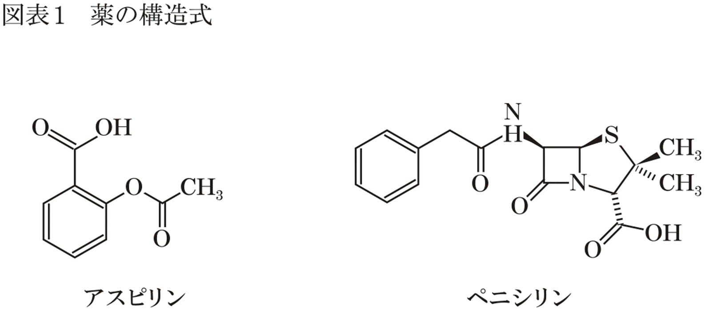

| なぜ、あなたの薬は効かないのか？～薬剤師しか知らない薬の真実～ | |
| 深井 良祐 | |
| (2014) | |
私たちは日頃、多かれ少なかれ、薬のお世話になっています。当たり前の話だと思われるかもしれませんが、私たちは風邪をひくと病院に行って医師の診察を受けます。そこで出された薬で、熱を下げたり咳を止めたりします。風邪のときだけではありません。頭痛のとき、腰や膝に痛みが走ったとき、あるいは花粉症やアトピー性皮膚炎などのアレルギー症状が出たとき、私たちは薬に頼って痛みや症状を緩和させます。
「私は薬に頼っていない」とふだん思っている方でも、塗り薬やうがい薬、湿布などを使用することはないでしょうか。これらも薬です。このように考えると、私たちの身の回りには薬であふれていることに気づきます。
中でも、糖尿病や高血圧など、薬と長く付き合っていかなければならない病気を抱えている人にとっては、薬の存在はより身近に感じられることでしょう。糖尿病が悪化すると、腎臓の機能が低下して透析が必要になることもあれば、網膜症にかかって失明することもあります。また、高血圧を放っておくと、脳卒中や心筋梗塞などの致死的な病気を誘発することもあります。こうした合併症を防ぐためにも、薬は必要です。
薬は、命に関わる場面でも効力を発揮します。例えば臓器移植などによって手術を受けたとき、そのままの状態では高い確率で拒絶反応が起きますが、そこで免疫抑制剤を使用すると、臓器移植の成功率は劇的に上がります。また、かつては「死の病気」と考えられていた白血病であっても、白血病の種類によっては薬で完治したり、症状を抑えたまま回復したりすることが可能になっています。
このように、私たちが日々の生活を営むうえで薬は欠かせない存在ですが、「自分は薬の性質をよく知っている」という人はどれくらいいるでしょうか。また、「薬はなぜ効くのか」というシンプルな問いに正しく答えられる人はどれくらいいるでしょうか。
さて、「セルフメディケーション」という言葉があります。これは、「自分の健康は自分で守る」という意味です。医療機関を過度に頼ることなく、自分で病気を治療していくという意味もセルフメディケーションに含まれます。巷にドラッグストアがあふれているように、また、いまではインターネットでも薬が買えるように、現代は、「自分の健康は自分で守る」セルフメディケーションに適した時代だということもできるでしょう。
しかし、ドラッグストアで購入できるような比較的安全性の高い薬であっても、注意しなければならない点はいくつもあります。例えば風邪をひいたとき、風邪薬を安易に使用して熱を下げるのは必ずしも得策であるとは限りません。また、頭痛を抑えるために痛み止めの薬を使用し続けていると、頭痛が余計に悪化してしまうこともあります。ドラッグストアで誰でも購入できるような薬であっても、胎児に奇形をもたらす可能性のある薬もあれば、インフルエンザのときに小児が使用すると脳症のリスクを増大させる薬もあります。
こうした薬の予期せぬ危険性を理解するためには、薬についての基礎的な知識が必要です。もちろん、専門的な知識は必要ありません。しかし、少なくとも自分が服用するような薬については、ある程度の知識があってもいいのではないでしょうか。
私は薬剤師としてそのように考えています。なぜなら、私は薬に関する相談を多く受ける中で、基礎的な知識のないまま薬を服用している人が大多数であると常に感じているからです。中には、自己判断で誤った使い方をしている人も見かけます。
要は、私たちは薬に関する適切な知識を持たなければならないということです。自分が服用する薬だけでなく、家族などの親しい人が使用する薬がどういう種類の薬なのかを知っておくことも重要です。そのためには、医師や薬剤師が発する専門的な言葉をある程度は理解できるようになる必要があります。
医療機関を受診し、処方せんに基づいて調剤される薬が医療用医薬品です。医療用医薬品は調剤薬局で渡される場合が多いのですが、薬剤師や調剤薬局がどのような役割を担っているのかを理解している方は少ないかもしれません。確かに、薬剤師は医師のようにクローズアップされることは少なく、看護師のように患者さんと直接やり取りする場面も多くありません。そのため、薬剤師や調剤薬局が何をしているのか分からないという人が多いのは仕方のないことかもしれません。
薬剤師は、薬局の中で単に薬を袋に詰めて患者さんに手渡しているだけではありません。例えば、薬局を初めて訪れたときに渡されるアンケート用紙にご記憶はないでしょうか。そこには、喫煙の有無や飲酒の頻度、アレルギーの有無を記載する項目があります。これにはすべて意味があります。
喫煙の有無をなぜ聞くのかというと、タバコを吸う人と吸わない人では、薬の作用が変わってしまうことがあるからです。喫煙の習慣がある人は、薬を代謝する特定の酵素が増えてしまうという特徴を備えています。代謝酵素が増加すると、薬が代謝される速度が速くなります。その結果、薬の効き目が通常より弱くなることがあります。特に喘息の治療薬では、喫煙の習慣がある人は、喘息治療薬の効果が減弱してしまうことがあります。
また、飲酒の頻度をなぜ聞くのかというと、睡眠薬などの薬は、お酒と一緒に服用すると副作用が表れやすくなるからです。お酒を多量に飲むと、アルコールの作用によって次第に眠くなるなど、意識の混濁化が起こります。これは、アルコールが脳の機能を抑えるためです。睡眠薬も同様で、睡眠薬には、脳の機能を抑えることで眠気を引き起こす働きがあります。つまり、睡眠薬とアルコールを併用すると両方が作用し、脳機能が抑制され過ぎてしまうのです。こうしたことから、睡眠薬を服用した後の記憶が完全に抜け落ちてしまったり、呼吸機能が抑制されることで呼吸困難に陥ったりすることがあります。
アレルギーの有無も同様です。薬には有効成分以外に添加物も含まれています。添加物がアレルギーの原因となることがあるため、これまで服用していた薬から他の薬へ切り替えるときには注意が必要です。例えば添加物として、牛乳アレルギーで問題となる「カゼイン」や、卵アレルギーで重要となる「卵黄レシチン」などが含まれることがあります。薬を飲む前にこうした食物アレルギーの有無が分かっていれば、薬によるアレルギー問題を回避することができます。
この他にも、薬局側が「他の医療機関でも薬を処方してもらっている」という患者情報を知ることができれば、「薬が重なっていないか」「相互作用は起こらないか」などをチェックすることができます。
特定の病気に対しては使用できない薬も多いため、現在、または過去に発症したことのある病気を知ることも重要です。例えば、緑内障患者に対してはある種の睡眠薬や抗うつ薬、パーキンソン病治療薬などの投与が禁忌（投与してはいけない）となる場合があります。喘息患者も同様で、高血圧や不整脈の治療に使用される薬が使えない場合もあります。処方せんには病名が記載されていないため、薬局側が病気について聞くのはこのためです。これらを総合的に判断することで、薬の服用によって副作用が表れたり、病気の症状が悪化したりしないように監視しているのです。
他方、妊婦や授乳中の方に対して使用できない薬もあります。これらの方に薬の副作用ができるだけ起こらないように見張ることも薬剤師の役割です。ここでは詳しく触れることはしませんが、糖尿病治療薬や抗菌薬、解熱鎮痛剤など、妊婦が注意しなければならない薬は数多く存在します。
診療所の多くは、看護師や専門知識を持たない事務員が調剤を行います。必ずしも高度な薬の知識を持っている人が調剤するわけではありません。したがって、このような「薬の監査」を医療機関ですべて行うことはできません。そこで、その役割の一端を薬局が担っているのです。
「処方されている薬の量が明らかに多く、処方せん通りに服用すると副作用の危険性が高まる」「他の医療機関から処方されている薬と重複していた」など、処方せんの内容に問題が発覚したときには、薬剤師は処方せんを発行した医師に問い合わせ、「処方内容が適切かどうか」について確認を行う義務があります。これを「疑義照会」と呼びます。「患者さんがいつも服用している用法や用量と処方内容が今回だけ異なっているが、それで間違いはないのか」「通常の使われ方とは異なる処方内容だが、それで問題はないのか」など、処方内容の変更の有無にかかわらず、処方せんの内容に疑問が生じた場合にも疑義照会は行われます。これによって、投与量の間違いや飲み合わせの有無などをダブルチェックするのです。
「処方せんのミスなんて、そんなに多くないのでは？」と思っている方は多いと思います。しかし、実際には処方せんのミスは多く、一日のうちに一回も疑義照会しない日というのはほとんどありません。重要なのは、これら薬剤師が行っている作業の大部分は、患者さんから見えないところで行われているという点にあります。
疑義照会に限らず、薬局の奥で行われている作業はたくさんあります。例えば、薬の服用量が多い方は飲み間違いがないようにすべての薬をシートから出し、１回分ずつを１包装にまとめる「一包化」と呼ばれる作業を行っています。また、粉薬や軟膏の場合はあらかじめ分けられていないことも多いため、その場で量って薬を作ることがあります。同じ家族の子供数人分の薬を調剤するとき、目印を付けることで投与に間違いがないように工夫することもあります。このように、薬剤師というのは、患者さんによってはオーダーメイドで薬を調剤しています。処方せんの内容から問題点を取り除き、患者さんに合わせた調剤を、見えない場所で行っているのです。
医師は、患者さんの病気を治療することが仕事です。それに対して、処方内容から副作用などの問題が発生しないようにチェックするなど、「何も起こらないこと」を予測して仕事を行っているのが薬剤師です。問題が起こらないように監視することが薬剤師の業務であるということは、薬剤師の役割があまり知られていない原因の一つでもあります。
そのせいでしょうか。薬や健康に関してちょっと相談したいと思ったときに「薬剤師を頼ろう」と思う人は少ないように思います。
現在、ほとんどの人は実際に病気を患ったときにのみ、医師などの専門家を頼ります。この考えを改め、病気でないときでも専門家を上手く活用すれば、より健康に過ごすことができるようになるでしょう。セルフメディケーションの考えを取り入れ、薬剤師の力を借りながら自分自身で健康管理を行うことが大切です。そのためには、専門家から必要な情報を引き出すために最低限の知識が必要になります。
＊ ＊ ＊
本書は、薬をより深く学ぶための入門書です。ただ、入門書とはいっても、薬学部の学生が学ぶ内容以上の事柄も多少織り交ぜています。「薬とは何か」という基礎的な概念を理解し、自分自身だけでなく、家族が服用する薬への理解を深めるためのツールとして本書を活用していただければ幸いです。
医療に携わっている人であれば常識かもしれませんが、薬というものは本来、病気を根本から治すものではありません。薬とは、「病気の症状を抑える物質」と理解した方がいいでしょう。
例えば、糖尿病治療薬を服用しても、糖尿病が完全に治るわけではありません。確かに、この治療薬は血糖値（血液中に含まれる糖）を下げることができるため、糖尿病による症状を抑えることはできます。しかし、症状を抑えることはできたとしても、糖尿病から完全に解放されるわけではありません。薬の服用を止めると血糖値は再び上昇し、体は元の状態に戻ってしまいます。これは高血圧治療薬でも同様です。
このように、病気を根本的に治療する薬というのは世の中にはほとんど存在しません。先に挙げた糖尿病や高血圧の治療薬であれば、基本的に薬を一生飲み続けなければなりません。これらの薬はあくまで、病気の症状を抑えることが目的です。
病気を根本から治すことができないのであれば、薬というのは意味がないものなのでしょうか。もちろん、そうではありません。糖尿病を放置すれば、腎症や失明などの合併症を引き起こす可能性があります。高血圧をそのままにしておけば、脳卒中や心筋梗塞などの合併症を引き起こす危険性が高まります。そのため、血糖値や血圧を下げることによってこれらの病気による症状を抑えることができれば、より長く生きることが可能になります。
つまり、薬とは、たとえ病気を患っていたとしても、「満足のいく生活が送られる状態」を維持させる役割があることに大きな意味を持っています。病気によって日々の生活が苦しかったとしても、その症状さえ抑えることができれば、普通の生活に戻ることができるのです。薬で病気の症状を抑えることによって、後は人間自身が持っている自然治癒力に任せるのです。これが、病気を治療する医薬品の基本的な概念です。
でも、熱が出たときに薬を飲むとなぜ熱が下がるのか、花粉が飛び始める春先、薬を飲むとなぜくしゃみや鼻水が止まるのか、それを説明できる人は少ないのではないでしょうか。そこで本章では、「薬とはいったい何か」ということから説明していきたいと思います。
薬はとても小さな物質です。どれくらい小さいかというと、数十個の原子から構成されているだけです。高校の物理の授業では、「すべてを構成する物質の中で最小の単位は原子である」と習います。厳密にいうと、この定義は正確ではありませんが、ともあれ、原子というものはとても小さな物質です。
例えば、酸素は酸素原子として「Ｏ」で表されます。窒素は窒素原子として「Ｎ」と表されます。ただ、実世界では酸素は酸素原子Ｏが二つくっつくことで酸素分子「」として存在しています。窒素も、窒素原子Ｎが二つくっついて窒素分子「」として存在しています。これはもちろん、「酸素や窒素は原子二つから構成されている」という意味です。
ここでは酸素と窒素を例に挙げましたが、「すべての物質を構成する原子」が複雑に絡み合うと、さまざまな物質へと変化します。例えば、水や二酸化炭素は三つの原子で、炭酸は六つの原子で構成されています。紙やペン、さらには空気中を漂っているチリやホコリなども、原子が複雑に絡むことで構成されている物質です。
人間も同様です。人間は60兆個の細胞で構成されているといわれています。この細胞は何でできているのでしょうか。細胞も同じように細かく細かく分解していくと、最終的には原子にたどり着きます。そのため、私たちの体も突き詰めて考えれば「原子の集まりである」ということができます。このように、原子は物質の構成要素であり、世の中に存在するすべての物質は原子からできています。
では、薬はどのような形をしているのでしょうか。高校の化学では、亀の甲羅のような形をした化学構造を習いますが、そのような構造式を描いて説明しましょう。
図表１は、解熱鎮痛剤の「アスピリン」、そして世界初の抗生物質である「ペニシリン」の構造式です。アスピリンは原子が21個集まることで「痛みや熱を抑える作用を持つアスピリン」としての形を作っています。抗生物質のペニシリンは、原子が41個集まることで、「病原菌に対抗するペニシリン」としての形を作っています。

これらの構造式を厳密に理解する必要はありません。要は「薬というのは、いくつかの原子が集まって構成されている」ということを大まかに理解していただければそれで十分です。
では、原子21個のアスピリン、そして原子41個で成り立っているペニシリンはどれくらいの「大きさ」なのでしょうか。
私たち人間を構成している細胞も原子で成り立っていることは前述しましたが、たった一つの細胞でも「何百～何千兆個の原子で構成されている」といわれています。それに対して、薬は数十個の原子だけで成り立っています。こう考えると、薬がいかに小さな物質であるかを理解していただけるのではないかと思います。
薬は、このように少ない原子から構成される分子であるため、「低分子医薬品」と表現されます。
さて、とても小さい物質である薬は、どこに作用して病気の症状を改善させる効果を示すようになるのでしょうか。その多くは、タンパク質に作用します。
私たちの体の中で最も多い成分は「水」です。体の中の、約60～70％が水分であるとされています。そして、次に多い成分がタンパク質です。タンパク質は、体の中の約15～20％を占めています。これは、細胞を形作るためにはタンパク質が必要不可欠だからです。
タンパク質がいくつも集まると、細胞を形成するようになります。細胞がたくさん寄り集まると、器官（臓器など）として機能するようになります。つまり、人間を作り上げるために必要なあらゆる細胞は、タンパク質によって成り立っているということです。
例えば、髪の毛や皮膚はタンパク質で構成されています。肺や心臓、肝臓、筋肉などもタンパク質の集まりです。
このタンパク質は、実はたった20個のアミノ酸から構成されています。食物に含まれるタンパク質はそのままの状態では吸収されず、タンパク質を構成する最小単位であるアミノ酸まで分解されます。アミノ酸が腸から吸収され、このときのアミノ酸を原料として体内でタンパク質を再構築するのです。
そして、アミノ酸が列車のようにいくつも連なっていき、何十個から何千個と組み合わさっていくとタンパク質と呼ばれるようになります。つまり、タンパク質とは、「アミノ酸がたくさん繋がっている物質」ということになります。このとき、「アミノ酸がどのような順番で連なっていくか」、また「一列で連なったアミノ酸の鎖がどのような形で折りたたまれていくか」などによってタンパク質の機能が異なってきます。
このように、細胞などを作るために必要なタンパク質ですが、それ以外にも、赤血球や白血球などに含まれる「血球成分」、病原菌から身を守るための「抗体」、シグナルを伝えるための「ホルモン」など、タンパク質は生命維持に関わる多くの役割を持っています。
「生命に関わる」というと、ＤＮＡを連想される方がいるかもしれません。しかし、ＤＮＡは単に体を作るための設計図が刻まれているだけの存在です。このＤＮＡに書かれている情報をもとにタンパク質が作られることによって、ようやく生理機能を示すようになるのです。
私たちの体内には数万種類ものタンパク質があるといわれています。これらのタンパク質が体の中で「血糖値を低下させろ」「血圧を上げろ」といった情報伝達を行っていたり、細菌・ウイルスに対抗したりしています。生命活動には、こうしたタンパク質の機能が大きく関与しているのです。
ほとんどの薬は、このタンパク質に作用します。そして、タンパク質の中でも、薬が作用する場所を「受容体」と呼びます。
「薬は体の中のどの部位に、どのように作用するのか」を理解するためには、「受容体」と「酵素」について学ぶ必要があります。
私たちが日常生活を営むうえで、さまざまな「シグナル」が脳から発せられています。例えば、食事をすると自然に唾液が出てきますが、これは、食物を口に含むことで「唾液を分泌しなさい」と働きかける物質が脳から発せられるためです。
これと同じように、「手や足など体を動かすとき」や「頭痛などの痛みを感じているとき」「花粉症などのアレルギー反応が起こっているとき」など、私たちのすべての活動にはシグナルが関わっています。そして、この「シグナルが作用する器官」が受容体です。受容体に作用することで情報が伝わり、「手を動かす」「痛みを感じる」「アレルギー反応が表れる」などが起こるようになります。
薬も、これと同じように受容体に作用します。これによって、さまざまな作用を発揮します。そして、薬はこの受容体の作用を「強める」か「弱める」のどちらかの働きをします。「手を動かす」「痛みを感じる」「アレルギー反応が表れる」についても、「強める」か「弱める」かによって薬の作用を説明することができます。
例えば、「手を動かすことができない」など、体を動かすことが不自由である人なら、手や足を動かすことに関係している受容体を活性化させることで体を動かしやすくします。つまり、受容体の作用を薬によって強めるということです。
その好例に、パーキンソン病治療薬があります。パーキンソン病とは、簡単にいえば、「体の動きがぎこちなくなってしまう病気」です。体をスムーズに動かすためには、「運動」に関わる物質が脳から発せられる必要があります。この、「運動」に関わる物質の一つにドパミンがありますが、パーキンソン病の患者には、脳内のドパミン量が少ないという特徴があります。
それを解消するために、薬が外からドパミンを補ったり、ドパミンが作用する受容体を刺激したりして、パーキンソン病の症状を改善させます。これが、「薬によって受容体の作用を強める」という意味です。
一方、「薬によって受容体の作用を弱める」場合はどうでしょうか。ここでは鎮痛剤を例に挙げましょう。神経の損傷によって体に痛みが表れているときというのは、痛みに関わる受容体が過剰に興奮している状態だということです。そこで薬は、この痛みを引き起こす受容体を遮断します。これが神経痛の軽減につながります。
このように、薬は基本的に受容体を「強める」か「弱める」か、つまり「オン」にするか「オフ」にするか、話を単純化すればこの二つの役割だけで考えることができます。
薬と受容体の関係をより詳しく知るために、次に、「眠気を誘う薬（睡眠導入剤）」と「血圧を下げる薬（血圧降下薬）」についてみていきましょう。
脳が活動していないときというのは、「脳の活動を鎮める物質（眠りを引き起こす物質）」が分泌されています。それによって脳の機能が抑えられ、私たちは夜になると眠りにつくことができます。そして、睡眠導入剤も同じように、「脳の活動を鎮める物質」を分泌させることで眠気を誘います。
このとき、薬は「脳の活動を鎮める物質」の分泌に関わる受容体を「オン」の状態にします。これを、「受容体を活性化させる」といいます。この、睡眠導入剤が作用する受容体は「ベンゾジアゼピン受容体」と呼ばれます。ベンゾジアゼピン受容体が「オン」の状態、つまり活性化されることで、「脳の活動を鎮める物質」が多量に放出されるようになります。これが、睡眠導入剤が眠りを引き起こすメカニズムです。
では、「受容体を弱める」とはどういうことでしょうか。血圧を例に挙げます。血圧が上がる理由にはさまざまな要素がありますが、その一つに「血圧を上昇させる物質」の存在があります。この、「血圧を上昇させる物質」が受容体に作用し、「血圧を上昇させろ！」という指令が発せられるのです。血圧というのはこうして上昇します。
ただ、たとえ「血圧を上昇させる物質」が存在したとしても、この物質が受容体に作用しなければ血圧は上がりません。そこで、「血圧を上昇させる物質」が受容体に作用しないように、あらかじめ薬によって受容体をブロックするとどうなるでしょうか。受容体は薬によって阻害されているため、「血圧を上昇させる物質」は受容体に作用することができません。これによって、「血圧を上昇させろ！」という指令が出なくなるのです。
血圧上昇に関わる物質に、「アンジオテンシンⅡ」と呼ばれる物質があります。この物質が受容体に作用する過程を阻害すれば、血圧を下げることができるはずです。受容体の作用を弱める「オフ」の状態にして、高血圧を治療するのです。
阻害薬のメカニズムというのは、これとすべて同じです。これが神経痛の治療薬であれば、「神経興奮によって痛みを発生させる受容体」を抑制することで、神経損傷による痛みを鎮めることができます。抗アレルギー薬であれば、「アレルギー反応を引き起こす受容体」を阻害することで、アレルギー症状を抑えることができます。このように、どの受容体に作用するかによって、得られる薬の効き目も異なります。
ここまで、薬の作用を考えるうえで受容体の重要性について触れてきました。次は、酵素の重要性です。酵素というのは、イメージとしては「ある物質を他の物質へと変換させる工場」のようなものです。酵素が働くと、新たな物質が生まれます。
痛み止めの薬（鎮痛剤）を例に挙げましょう（図表２）。私たちは怪我をすると痛みを感じますが、このとき、なぜ痛みを感じるのでしょうか。その理由はシンプルで、私たちの体の中には「痛み物質」が存在しているからです。
ということは、この「痛み物質」を無効化してしまえば、痛みを抑制することができるはずです。つまり、痛み止めの薬は、「痛み物質」が作られないような働きをするのです。
一方、「痛み物質」が存在するということは、「痛み物質」を作る酵素があるということです。痛み止めの薬は、この酵素を阻害することで痛みを鎮めます。これが、痛み止めの薬である鎮痛剤のメカニズムです。
この「痛み物質」はプロスタグランジンと呼ばれています。私たち薬剤師の間では鎮痛剤のメカニズムを説明する際、「プロスタグランジン産生を抑制し、痛みを鎮める」と表現しますが、言い方を変えれば、「酵素の阻害によって痛み物質が作られる過程を抑制し、痛みを鎮める」ということです。
高血圧治療薬の場合はどうでしょうか。先に、「血圧を上昇させる物質」に、アンジオテンシンⅡという物質があることは説明しました。
前述したように、このアンジオテンシンⅡの働きを抑えることができれば血圧を下げることができます。その一つの方法は、アンジオテンシンⅡが受容体に作用しないように阻害薬を投与することです。たとえアンジオテンシンⅡが存在したとしても、あらかじめ受容体を阻害しておけば作用することはありません。
もう一つの方法は、「アンジオテンシンⅡが作られないようにする」というものです。そもそも、血圧上昇に関わるアンジオテンシンⅡが新たに合成されなければ、血圧が上がることはありません。
アンジオテンシンⅡは酵素によって作られます。つまり、酵素を阻害すれば新たなアンジオテンシンⅡは生成されなくなり、血圧を下げることができるようになります。
酵素には「新たな物質を作り出す」という働きがあります。酵素によって作り出される物質が「痛み物質」の場合、この酵素を阻害する薬が痛み止めの薬となります。酵素によって「血圧上昇に関わる物質」が作り出される場合、この酵素を阻害する薬が血圧を下げる薬になります。これが、酵素阻害によって薬が効果を表すメカニズムです。
このように、薬が受容体や酵素に作用するメカニズムを知ることができれば、「なぜ薬が作用するのか」を理解することができます。これらを踏まえたうえで、次に「病気を発症する理由」について考えてみましょう。
「薬はどのようにして病気の症状を抑えるのか」を知ることができれば、「病気が起こっているときの体の状態」も理解することができます。
これまで説明した通り、薬というのは基本的に「受容体の作用を強めて」症状を抑えるか、または「受容体や酵素の作用を弱めて」症状を抑えるか、どちらかの役割しかありません。
このように見てくると、病気とは「ある特定の物質が極端に少なくなっている状態」、または「ある特定の物質が極端に多くなっている状態」だと考えられます。この状態を、薬が受容体や酵素に働きかけることによって足りない要素を補ったり、過剰となっている物質を阻害したりして改善するのです。
例えば、正常な人に比べて「ある特定の物質が少なくなっている状態」によって引き起こされる病気にうつ病があります。うつ病の治療薬は、不足している物質を何とかして補うことで、病気の症状を抑えようとします。
うつ病の有名な症状に、気分の落ち込みなどが起こる「抑うつ状態」があります。健康な人であっても気分が落ち込んだり暗い気持ちになったりすることはあります。しかし、健康な人であれば、たとえ一時的に気分が落ち込んでいたとしても、気分転換をしたり、時間が経ったりすることによって暗い気持ちから自然と回復していきます。
これがうつ病を患うと、強い抑うつ状態がずっと続いてしまいます。特に何の理由がなくても暗い憂うつな状態が継続してしまうのです。うつ病は心の病気ともいわれています。ただ、正確には、うつ病というのは脳の神経伝達物質の働きに異常が起こることによる病気であるといえます。
そのため、「気の持ちよう」や「気合い」などによって病気が治らないのと同じように、うつ病も適切な治療を行わなければ回復することも難しくなります。
私たちの脳は神経伝達物質によって情報のやり取りを行っています。この神経伝達物質の中には意欲や不安に関与している物質があり、このような神経伝達物質としてセロトニンやノルアドレナリンが知られています。うつ病患者には、脳内のセロトニンやノルアドレナリンが少なくなっているという共通点があります。そのため、これら神経伝達物質の作用を強めることができれば、うつ病から回復しやすくなります。
抗うつ薬はどれも「セロトニンやノルアドレナリンの作用を強めるように働きかける」という考えのもとに開発されています。薬が作用する細かいメカニズムは異なりますが、基本的に抗うつ薬が作用するときの考え方はどれも同じです。
ここでは、うつ病を例に「特定の物質が少なくなっている状態」を紹介しましたが、この「特定の物質が過剰または少なくなることによって病気が起こる」という考え方は多くの病気に共通します。うつ病の場合はセロトニンとノルアドレナリンと呼ばれる物質が重要になりますが、他の病気では、また別の物質の作用を薬によって強めたり弱めたりすることで病気を治療していくのです。
ここまでの説明で、薬が作用するときのメカニズムは理解できたと思います。では、そもそも私たちはなぜ病気になるのでしょうか。残念ながら、世の中に存在するほとんどの病気の原因は分かっていません。
先ほど例に挙げたうつ病の患者さんの場合、脳内のセロトニンやノルアドレナリンの量が少なくなっているということまでは分かっても、では、なぜうつになるのか、というところまでは分かっていません。
病気を発症する要因というのは一つではなく、多くの因子が影響し合っています。うつ病の場合でも、生まれ持った「遺伝的な要因」、親しい人の死亡や結婚・育児などの「環境による要因」、ホルモンバランスの変化、感染症、がんなど「体が関係する要因」があります。これらがいくつも重なった結果としてうつ病を発症します。
これはうつ病に限らず、他の病気でも同様です。例えば、高血圧症患者の９割以上は原因不明です。高血圧を発症させる因子は肥満や塩分のとりすぎなどがいわれていますが、実際のところ、これといった原因はよく分かっていません。多くの要因が積み重なった結果、高血圧を発症するのです。
ただ、病気の原因のほとんどは不明ですが、中にははっきり分かる場合があります。こうしたケースでは、病気の症状を完全に改善させることが可能です。
例えば高血圧の中でも、体のある部分に腫瘍が生成され、この腫瘍から「血圧を上昇させる物質」がとめどなく分泌されることによって高血圧患者になるケースがあります。この場合は「腫瘍」という明らかな原因があるため、手術によって腫瘍を取り除けば高血圧は完治します。
これと同じように、感染症も明らかな原因が分かっています。感染症は病原微生物が原因となっているため、抗生物質や体に備わっている免疫機構によって病原微生物を退治できれば病気が治ります。例えば、性感染症の梅毒は、「梅毒トレポネーマ」という病原菌が原因であるため、この細菌を殺す薬を投与すれば治癒します。このように、病気の原因が分かっている場合に限り、薬による根本治療は可能です。
人が病気になる原因は不明な場合が多い一方、病気になる「理由」は意外とシンプルです。ダーウィンの進化論にも通じる話ですが、私たちの進化の過程を見ればその理由が見えてきます。まずは、生活習慣病を例にみていきましょう。
人類は長い間、「飢餓の時代」を生きてきました。その時間は、何千年、何万年という気が遠くなるほどの年月です。一部の貴族や豪族などの階級の人たちは別だったのかもしれませんが、現代とは違ってわずか数百年前までは、大多数の人は「飢え」と向き合ってきました。
このような飢餓状態を耐えるためには、栄養を効率良く体内に蓄えるしかありません。そこで私たち人類は、糖や脂肪などを分解・吸収して利用し、余ったエネルギーを積極的に体の中に蓄えるように進化してきました。飢餓の中で生き残るには「栄養を効率良く蓄えられる人」が有利です。したがって、必然的にそのような遺伝子を持つ人だけが残っていったのです。これによって、人は何日も食べ物がなくても生きていけるように進化していきました。
ひるがえって現代は、飽食の時代です。特に先進諸国では食べ物があふれていて、肥満が社会問題となっています。これは、糖・脂質などが体内に少しずつ蓄積していった結果です。毎日消費されるエネルギーよりも、体内に蓄積されるエネルギーの方が多くなってしまったのです。
それにともなって、糖尿病や高血圧などの生活習慣病が深刻な問題となってきました。現在のように食べるものに困ることがなくなると、栄養を蓄えやすい体の性質が私たちに悪影響を及ぼすようになったのです。
例えば糖尿病の場合、血糖値を下げるインスリンの働きが重要になります。血糖値を下げるホルモンというのは、唯一、このインスリンしかありません。
しかし、よく考えてみれば飢餓の時代に血糖値を下げることは、そこまで重要でなかったはずです。それよりも、栄養がない飢餓状態の中でどうやって血糖値を上げ、活動エネルギーを捻出できるかの方がずっと重要なことだったでしょう。
実際、私たちの体には血糖値を上げる作用は無数に存在します。しかし、前述の通り血糖値を下げる働きは、インスリンによる作用しかありません。そのため、飢餓の時代ではインスリンは重要なものではなく、「進化の過程で人間が仕方なく残した、血糖値を下げるたった一つのメカニズム」でした。それが現在のように環境が激変して飽食の時代が訪れて初めて、インスリンが重要になったのです。ここから分かるのは、生活習慣病というものは、それまで人間が過ごしてきた飢餓状態から脱したことによって増えた病気だということです。
これと同様にうつ病も、その発症の理由は人類の歴史を見ることによって推測することができます。
人間は強いストレスを受けると抑うつ状態になり、活発に活動できなくなります。例えば、職場で上司から激しく怒られたときをイメージしてください。そういうときは気分が沈み、一時的ではあったとしても働く意欲を失ってしまうのではないでしょうか。
自然災害のケースでも同様の原理が働きます。台風や大雪などの自然災害が発生すると、私たちは大きなストレスを受けます。こうした状況では、悪条件の中で必死に活動しようとするとエネルギーばかりが奪われ、場合によっては命の危険にさらされることもあります。激しい台風のときに外出すれば、風に吹き飛ばされたり、増水した川に流されたりする危険性が、また、大雪の中を動き回ろうとすれば、足が埋もれてそのまま動けなくなってしまう危険性が高まります。
これを避けるためには、条件の悪い時期はひきこもることで活動を抑えておく方が適切です。つまり、ストレスによってうつ症状が引き起こされるのは無駄なことではなく、「状況の悪いときに体力を温存する」という進化の過程で獲得した自然なメカニズムであるともいえるのです。抑うつ状態（気分の落ち込み）によって活動量を少なくし、家に閉じこもるように行動することが生命維持に大きく関わってきたということです。
すなわち、ストレスによって抑うつ状態になるのは、何万年もの進化の過程で人間に備わった仕組みであるとも考えられるのです。
そのため、自然災害のような「稀」に起こるストレスで抑うつ状態に陥ることはとても有効だといえます。しかし、現在は「常に他人との競争の中で生きていかなければならない」「組織の中で夜遅くまで残業し、上司の顔色をうかがいながら働き続けなければならない」といった状況に置かれている人もいることでしょう。
このように「頻繁」に強いストレスを受ける社会というのは、抑うつ状態に常に陥ってしまいやすい状況であるともいえます。こうした社会の近代化が、うつ病の患者数を増加させた理由であると考えることもできます。
現代病は、生活様式が過去と比べて大きく変わってしまったことに原因があります。糖尿病や高血圧などの「生活習慣病」、喘息や花粉症などの「アレルギー疾患」、ストレスが原因となる「うつ病」は近代化に従って患者数が大幅に増加した疾患です。
しかし、薬というのは、増え続ける現代病の治療に大きく貢献しています。例えば糖尿病は、かつては死に至る危険性が極めて高い病気でした。足の壊死や失明などの合併症を発症した後は、昏睡状態に陥って命を落とすことが多かったのです。そこで登場した糖尿病治療薬がインスリンです。
１９２１年にカナダ・トロント大学のバンティングとベストが「すい臓の抽出物（インスリン）」を取り出し、翌年に糖尿病患者の14歳の少年に投与したところ、症状が劇的に回復したことを発見しました。この成果を元に研究を進めたバンティングは、１９２３年にノーベル生理学・医学賞を受賞しています。
その後も研究が進み、インスリンの発見によって糖尿病は死の病気ではなくなりました。現在では、糖尿病は一生付き合っていく病気へと変化しています。
喘息などのアレルギー疾患も、その治療に薬が大きく貢献しています。喘息発作を起こすと呼吸困難に陥り、死に至ることもあります。ただ、喘息の患者数は増えているものの、ステロイド吸入薬などの普及によって喘息による窒息死亡者数は改善しています。厚生労働省の発表によると、１９９０年代の喘息による死亡者数は６０００人程度だったものの、２０１０年以降は死亡者が２０００人程度にまで減少しています。
うつ病も同様です。抗うつ薬は症状を抑えるだけでなく、再発を予防する役割も持っています。うつ病の治療は「心」という領域を扱うために難しい面はありますが、自殺理由の上位がうつ病で占められていることを考えると、薬を適切に使用することによって、再発防止まで含めた治療をしていくことの重要性がうかがえます。
＊ ＊ ＊
薬は、私たちの生活と切っても切れない関係にあります。しかし、薬の基本的な性質、薬はなぜ効くのかといったシンプルなメカニズムを理解していない人が大半だと思います。そのため本章では、薬とは何か、薬が作用するときのメカニズム、病気を患っているときの体の状態などに触れてきました。
薬は「受容体や酵素へ働きかける」ことによって効果を発揮します。そのメカニズムは、受容体や酵素の働きを「強める（活性化する）」か、または「弱める（阻害する）」かの二つの作用だけです。
また、病気というのは、「体に存在する特定の物質のバランスが崩れている」ことが原因です。薬はバランスの崩れた状態を元に戻し、体を快方へと導きます。
これらが、薬を理解するための必要な基礎知識です。薬の働きや病気が起こる原因など、細かいメカニズムは異なっても、薬の作用や病気が起こるときの基本的な概念はどれもほぼ同じです。
これらを踏まえ、第２章からは身近な薬の副作用問題も含めて、より詳しく薬の働きを見ていきます。
副作用のない薬はこの世に存在しません。薬として作用を表すのであれば、必ず何かしらの副作用もあります。これは、薬の主作用を考えてみれば理解できます。例えば、不眠症を改善するための睡眠薬です。睡眠薬は脳に作用することで、「眠気を引き起こす物質」の分泌を促進させます。これが睡眠薬の主作用です。しかし、主作用が次の日まで続いてしまうと、眠気が翌朝まで持続してしまいます。その結果、ふらつきや転倒を引き起こすケースがあります。これが睡眠薬の副作用です。
血液を固まりにくくすることで血栓の生成を防止する抗凝固薬はどうでしょうか。抗凝固薬を服用すれば、血栓による脳卒中や心筋梗塞を予防することができます。これが主作用です。しかし、この薬には血がなかなか固まらないために出血の危険性が生じるという副作用もともなっています。この副作用のために脳出血などの事態が生じれば、命に関わるような大事に至ります。
最後に、移植時の拒絶反応を抑える免疫抑制剤についてです。免疫抑制剤は体の免疫機構を抑えることができるので、移植された臓器は攻撃されにくくなります。ただ、「免疫を抑える」ということは、その分だけ感染症にかかりやすくなることも意味します。簡単にいってしまえば、これが免疫抑制剤の主作用と副作用です。
このように、薬の主作用と副作用は表裏一体です。これを理解したうえで、日々服用する薬に対して、私たちは「できるだけ副作用を回避して、薬による有効な作用を得る」ことを考えていくことが重要になります。これは、私たちがふだん口にする栄養素であっても同様です。栄養素もその量が多くなると、副作用、すなわち毒性を示すようになります。
例えば、糖はその量が多くなると毒となります。
腎臓で最初に尿が作られるとき、原尿の中には糖が含まれています。糖は脳や筋肉の重要なエネルギー源であるため、糖が尿と共に排泄されないように、「管を通って尿が膀胱に到達するまでの間」にすべて血液中へと移行されます。そのため、健康な人の尿から糖が検出されることはありません。
しかし、糖尿病患者は血液中の糖濃度が高すぎる状態になっています。そのため、その分だけ原尿に含まれる糖も多くなります。その結果、尿中から血液中への糖の移動が間に合わず、尿から糖が検出されるようになります。糖尿病として血糖値が高いと、網膜症や腎症などの合併症を引き起こすようになります。このような糖による毒性を「糖毒性」と呼び、糖尿病治療薬では血糖値を下げることで、糖毒性を抑えるように働きかけます。
このように、「毒」とは無関係に見えるような糖であっても、その量によっては毒性を示すようになります。これは、身の回りにある生活用品であっても同様です。
その中の一つに、化粧品があります。化粧品にも、薬と同じように受容体や酵素に作用することで効果を表す成分が含まれています。これらの有効成分が副作用を示すこともあります。
某大手化粧品会社から発売された化粧品を使用した人に「白斑」が起こることが報告され、自主回収が実施された事件をご記憶の方も多いでしょう。白斑とは、肌の一部が白くなってまだらのように見えてしまう現象です。この化粧品には「ロドデノール」と呼ばれる成分が含まれており、この物質が白斑を起こした原因ではないかと考えられています。
私たちの肌が黒くなる理由は、「メラニンの生成」にあります。日焼けによって肌が黒くなるのは、メラニンが生成されるためであるといわれています。シミなどの色素沈着もメラニンが原因とされており、美白を望む人にとっては、このメラニンが大敵となります。
メラニンの生成を抑えてしまえば、肌が黒くなる過程を抑制することができるため、肌が白くなります。問題となった化粧品は、ロドデノールによってメラニン生成を抑え、美白を実現しようとして発売された商品でした。
ここで、そのメカニズムに触れておきましょう。メラニンはチロシンという物質から生成されます。この、「チロシンメラニン」へと変化する過程には酵素が関わっており、この酵素をチロシナーゼと呼びます。つまり、ロドデノールによってチロシナーゼの働きを抑えることができれば、「チロシンメラニン」の変換が抑制されてメラニンによる色素沈着を減らすことができます。これが、ロドデノールが美白作用を示すメカニズムです。
ただ、「美白作用が強すぎると白斑を起こすことがある」という点が十分に考慮されていなかったところに今回の問題がありました。
皮膚は、場所によっては薬の浸透性が異なる場合があります。検証しなければ確実なことはいえませんが、まだらができてしまった人の中には、「皮膚炎やドライスキンなどの影響で一部だけ有効成分の浸透性が高くなっていた」といった可能性は十分に考えられます。つまり、有効成分の浸透性が高まっていたその一部分にロドデノールの作用が強く働き、皮膚の一部分だけが白くまだらになってしまった人が次々と現れたと考えられるのです。
こう考えると、化粧品の成分も、薬と同じように主作用と副作用が表裏一体の関係にあると分かります。
ちなみに、白斑が生じてしまう病気に「尋常性白斑」と呼ばれるものがあります。これは、肌の広い範囲が白くなってしまう症状です。メラニンが部分的に作られなくなることによって白斑が生じてしまうのです。
この治療法の一つに、脱色療法があります。脱色療法は、「他の組織も含めて肌全体を白くし、元から白い肌だったかのように見せてしまおう」という考えの元に行われる療法です。そこで使用される薬にモノベンゾン（ヒドロキノンモノベンジルエーテル）があります。モノベンゾンは化粧品に含まれている美白成分のヒドロキノンとは別物なため、注意が必要です。モノベンゾンはメラニンを作る細胞を破壊することで、永久に肌を白く保たせることができるのです。尋常性白斑にかからず白くならなかった部分にモノベンゾンを塗り、肌を脱色していきます。これによって、尋常性白斑による症状を目立たせなくします。故・マイケル・ジャクソンも尋常性白斑を発症しており、モノベンゾンによって肌を白くしたといわれています。
一方、化粧品による白斑として問題となったロドデノールはモノベンゾンのようにメラニンを作る細胞を壊すのではなく、単に「チロシンからメラニンへと変換する酵素」を阻害する性質を持っています。メラニンを作る元となる細胞まで破壊するわけではないため、ロドデノールが美白効果を示す作用メカニズムだけから考えると、ある程度の日数が経てば元の状態に戻ることが予想されます。日本皮膚科学会の特別委員会の報告でも、使用を中止して六ヶ月以上経過した方の58％に軽快傾向、または治癒がみられていることが分かっています。
ただ、白斑が起こるメカニズムが完全に解明されているわけではないため、「絶対に白斑が治る」とは言い切れないことに今回の事件の難しさがあります。
「糖」や「化粧品に含まれる成分」といったような、毒性があまりないように思えるものでも悪影響が表れることから、より劇的な作用を示す薬にも、当然、毒性があることは想像できます。
他方、過去には「毒」として扱われていた薬剤であっても、「薬」へと変わった医薬品も存在します。「血液をサラサラにする薬」を例に挙げましょう。
血管の中に血栓（血の塊）が形成され、これが脳や心臓の血管を詰まらせると、脳卒中や心筋梗塞を引き起こします。これらは死に直結する病気であるため、血栓の生成を防止することはとても大切です。この、血を固まりにくくして血栓ができないようにする薬にワルファリンがあります。
ワルファリンが合成された当初は、体の中に起きる「内出血」という特性を利用して、ねずみを殺すための殺鼠剤として用いられてきました。あまり知られてはいないかもしれませんが、私たち生物というのは、体の中のあらゆる場所で内出血が起こっています。ねずみにも内出血は起こっていますが、もともと備わっている止血作用によって、出血してもすぐに血が止まるために大事には至りません。しかし、ワルファリンを摂取したねずみは、内出血が止まらなくなって死に至ります。
人間も同様です。ワルファリンを過剰摂取すれば血液が固まらなくなり、脳出血や消化管出血などを起こして死亡するリスクが高まります。そのため、当初はワルファリンをヒトに対して使用することは考えられていませんでした。
１９５１年、このワルファリンの毒性に目をつけ、自殺を図った人がいました。しかし、この人物はワルファリンを大量に服用しても死ぬことはありませんでした。
この例から、「ワルファリンをヒトに使用しても問題ないのではないか」と考えられ、臨床試験が検討されるようになりました。その後、血液が固まる過程を抑制することで血栓の生成を防止するワルファリンの有用性が明らかとなり、現在に至っています。
ワルファリンを過剰投与すると、その毒性によって「出血」が止まらなくなります。しかし、投与量を調節して血栓の生成を防止できるようになると、人の命を救う薬として機能するようになります。まさに、ワルファリンは殺鼠剤として用いられていた「毒」から、脳卒中や心筋梗塞などの病気を予防する「薬」へと変化を遂げた医薬品なのです。こう考えると、薬と毒を区別することの難しさをお分かりいただけるのではないでしょうか。
薬の毒性によって表れる副作用をより深く理解するために重要な概念が、薬の「有効域」です（図表３）。
薬の効果というのは、「血液中に含まれる薬の濃度」によって推測することができます。血液中に含まれる薬の濃度が高くなると、薬の効果も大きくなります。逆に、血液中に含まれる薬の濃度が低くなると、薬の効果も薄れていきます。このとき、薬の量が多過ぎると「中毒域」に達してしまい、副作用が表れてしまいます。一方、薬の量が少な過ぎると、薬の効果が表れにくいために病気をコントロールすることができません。
そのため、薬の量を適切にコントロールすることが重要になります。有効域の広い薬なら量をあまり気にする必要はありませんが、中には有効域が狭いために服用量を厳密にコントロールしなければならない薬があります。このような薬に、先に挙げたワルファリンがあります。
ワルファリンは「血液が固まる過程」を阻害すると同時に、「出血」という副作用の危険性も持ち合わせています。したがって、薬の効き過ぎによって中毒域に達しないように経過を注意深く観察する必要があります。
そこで、実際にワルファリンを使用するときは「定期的な血液検査」や「細かい用量調節」などを行い、細心の注意を払わなければなりません。このような調整を行うことで、薬の副作用を抑えながら有効性だけを引き出すことがようやく可能になります。
中には有効域と中毒域の境目が曖昧な薬が存在します。その代表例は抗がん剤です。
抗がん剤の「元」はドイツで開発され、第一次世界大戦でドイツ軍や連合軍によって使用されたマスタードガスという毒ガスです。
１９４３年、多量のマスタードガスが積まれたアメリカの輸送船が沈没し、多数の死傷者が出た事故が起きました。事故後、マスタードガスを浴びた多数の米兵死傷者を調べたところ、白血球が減少しているという目立った特徴が見つかりました。
白血球とがん細胞には共通点があります。それは、どちらの細胞も「増殖速度が速い」という点です。そこから、「マスタードガスを使えば、白血球と同じように細胞増殖のスピードが速いがん細胞も殺すことができるのではないか」と医師のＴ・ドハティは考え、マスタードガスと似た構造を持つナイトロジェンマスタードを用いて動物実験を行いました。これが世界初の抗がん剤の誕生につながりました。ナイトロジェンマスタードはＤＮＡに対してダメージを与え、これによって、細胞増殖を抑制することができるという特徴を備えていました。
がん細胞とは反対に、正常な細胞はあまり増殖しません。なぜなら、心臓や肺、肝臓、皮膚などの細胞が勝手に増殖しては不都合が生じるからです。正常細胞では、怪我などによって損傷を受けるなど、必要な場合に限って細胞を修復するために細胞分裂を行います。
しかし、がん細胞は無秩序に細胞分裂を繰り返して増殖しようとします。この正常細胞とがん細胞の違いを利用した世界初の抗がん剤が、ナイトロジェンマスタードなのです。ただ、正常細胞の中には白血球や髪の毛、生殖器細胞など、活発に細胞分裂を行っている細胞も存在します。抗がん剤による副作用が表れるのは、こうした細胞まで破壊してしまうからです。
このように、特に初期に開発された抗がん剤はまさに「毒」でした。なお、「毒」を用いて病気を治療しようとする方法は昔から行われています。かつては末期の梅毒を治療するために、マラリア療法という治療法が行われていました。この療法は、梅毒の原因菌である梅毒トレポネーマが熱に弱いという性質を持っているために、「マラリア感染による発熱で梅毒を治療しよう」という考え方に基づいて行われました。
何もせずに梅毒による死を待つよりは、多少危険であってもイチかバチか、梅毒患者をマラリアに感染させて治療しようとしたのです。当時は画期的な治療法であり、マラリア療法を開発した医師のワーグナー・ヤウレックは、１９２７年にノーベル賞を受賞しています。
なお、この療法は危険性が高く、現在では行われることはありません。マラリア療法は少し極端な例かもしれませんが、考え方としては薬もこれと同じです。副作用があるとしても、薬による有益な効果の方が大きいと判断されれば治療を行います。抗がん剤であれば、たとえ副作用があったとしても薬によって少しでも長く生き続けられる可能性があれば、使用されることになります。ただ、抗がん剤であっても、副作用をできるだけ回避することはとても重要なポイントです。
そこで次に、薬による副作用の回避方法について解説していきます。
薬による有益な効果を得ることは重要です。しかし、それ以上に副作用を回避することも重要です。いくら薬によって病気の症状が改善したとしても、重大な副作用が表れてしまったら元も子もありません。そのような場合は、すぐに薬の使用を中止しなければなりません。
副作用を回避するためのいくつかの方法の中に、「サブタイプ選択性」という考え方を用いたものがあります。第１章で触れたように、薬のターゲットになるのは受容体と酵素です。受容体や酵素は種類によって若干異なることがあります。まったく同じように見える双子でも、よく観察すれば違いがあるのと同じように、受容体や酵素にも双子のような違いが生じている場合があります。
例えば多くの睡眠薬は、ベンゾジアゼピン受容体を刺激することで眠気を引き起こさせますが、睡眠薬は不眠症を治療するだけでなく、抗不安薬や筋弛緩剤として用いられることがあります。その理由は、脳や脊髄に存在するベンゾジアゼピン受容体を細かく見極めていくと、大きく二つに分けられるからです（図表４）。ほぼ同じ構造をしたベンゾジアゼピン受容体が双子のように存在しているのです。このような受容体のわずかな違いを専門用語で「サブタイプ」と呼びます。
この双子のようなベンゾジアゼピン受容体は、それぞれ機能が異なっています。一つのベンゾジアゼピン受容体は催眠鎮静作用に関与していて、この受容体を刺激することで不眠症を改善させることができます。それに対してもう一つの受容体は、抗不安作用及び筋弛緩作用に関わっています。これが、睡眠薬が不眠症を治療するだけでなく、抗不安薬や筋弛緩剤としても用いられると述べた理由です。
ベンゾジアゼピン受容体に作用する多くの薬はサブタイプを区別せず、どちらも刺激します。そのため、催眠作用や抗不安作用、筋弛緩作用など多くのケースで効果を期待できます。しかし、複数の受容体に作用するということは、その分だけ副作用も表れやすくなるということでもあります。
不眠症を改善したい場合、本来は催眠作用に関わるベンゾジアゼピン受容体だけを刺激すればそれで十分です。サブタイプのうち、ある一方だけを狙い撃ちすることで副作用を回避しつつ、主作用を得ようとするのです。
このような考えに基づいて開発された薬にマイスリー（一般名：ゾルピデム）があります。マイスリーはベンゾジアゼピン受容体の中でも、「催眠作用を示す受容体」に対して比較的強く作用します。一方、「抗不安作用や筋弛緩作用を示す受容体」へは弱く作用します。そのため、より効率的に催眠作用を得ることができるというわけです。睡眠薬を何回も使用すると「耐性」や「依存」を生じる恐れがありますが、マイスリーでは、これらの副作用も他の睡眠薬に比べて軽減されているといわれています。
このように、特定のサブタイプだけを狙って開発された薬は他にも数多く存在します。似た構造を持つ受容体や酵素の中でも、本当に狙うべきターゲットに的を絞って創薬を行うのです。これによって副作用を回避し、当初から目的としていた作用だけを抽出しようとするのです。
副作用を回避するための対策は、こうした例の他にもいくつもあります。しかし、このような対策を行っても、副作用を完全に回避することはできません。副作用というのはそれくらい、薬と切っても切れない関係にあります。次に、私たちの身の回りにある薬を例に挙げながら、主作用と副作用についてより詳しくみていきましょう。
風邪をひいた経験は誰にでもあると思いますが、風邪薬などのありふれた薬であっても、副作用についていくつもの注意点があります。ここでは風邪薬を例に、「薬の飲み合わせの危険性」や「子供に薬を与えるときの注意点」について考えてみます。
まず、風邪をひいたときに抗生物質を服用する人は多いと思います。ところが、抗生物質を服用しても風邪の症状は良くなりません。というのは、風邪の約９割はウイルスによって引き起こされるのですが、抗生物質は細菌に対して作用するものの、ウイルスに対しては効果がないからです。
では、なぜ抗生物質を服用するのでしょうか。その理由は、「初期の風邪症状では、それがウイルスによるものなのか、細菌によるものなのかの判断が難しい」という点にあります。少しでも細菌感染が疑われる場合には、症状が悪化する前に抗生物質を使用することがあります。また、高齢者に多く見られる、肺炎（免疫力の低下によって起こる）を防止するという目的もあります。なぜなら高齢者というのは、風邪による肺炎などの合併症が起こりやすくなっているからです。
また、これまで説明してきた通り、薬は病気を治すものではなく、その症状を抑えるためのものです。これは風邪薬も同様で、風邪薬を服用しても風邪が改善するわけではありません。風邪薬というのはあくまで、高熱や咳が表れている状態を小康状態にするだけです。言い換えれば、体に本来備わっている免疫系がウイルスを退治して初めて、ようやく風邪が治るのです。つまり、ウイルスによる風邪から回復するには、自然治癒力に頼るしかないということです。
熱や咳などは、本来、ウイルスに対抗しようとして起こる反応です。そのため、熱や咳などの症状を薬によって抑えると、風邪が長引いてしまう可能性があります。
では、風邪薬の役割とは何でしょうか。それは、「症状を少しでも楽にすること」にあります。風邪をひいた場合、熱や咳などの不快な症状が表れます。これらの症状を抑えることで、普段と変わらない生活ができる状態に近づけようとするのです。
子供や高齢者に高熱や咳が長期間にわたって続くと、体力が大幅に奪われます。こうした状態では、高熱や咳を放置したままにするよりも、風邪薬を使用することで症状を抑えた方が望ましいといえるでしょう。もちろん、むやみに風邪薬を使用して症状を抑えるべきではありませんが、患者さんの体力を考慮して「薬の有効性が優っている」と判断したときに薬を用いるのは効果的です。
ここで、風邪薬の中の「熱を下げる薬」に焦点をあて、そこから、「薬の飲み合わせ」や「小児への投与」について考えてみます。
痛み止めの薬が作用するメカニズムについては第１章で述べました。その際、私たちの体の中には「痛み物質」が存在し、この物質の名前は「プロスタグランジン」と呼ばれること、この物質は酵素によって新しく作られ、酵素を阻害すれば痛みを抑えられることなどにも触れました。
プロスタグランジンは「痛みを強める」という作用以外にも、実は脳に働きかけることで「体温を上昇させる」という作用があります。そのため、プロスタグランジンの働きを抑える薬は、風邪による体温上昇を抑えることができます。痛み止めの薬（鎮痛剤）は解熱鎮痛剤とも呼ばれますが、「解熱」という言葉から分かる通り、これは熱を抑える作用があるということです。
つまり、「プロスタグランジンの働きを抑える」という作用から、一つの薬で痛みを抑えたり熱を下げたりすることができるのです。まったく同じ成分が含まれる薬であっても、あるときは痛み止めの薬として使用され、またあるときは熱を下げる目的で使用されるということです。
そのため、「熱を下げる薬」と「痛み止めの薬」を併用すると副作用が表れやすくなります。両方の薬ともプロスタグランジンの働きを抑えるということは、単純に考えれば薬の作用が倍になるということです。例えば、解熱鎮痛剤のよく知られた副作用に胃腸障害（胃潰瘍、十二指腸潰瘍など）があります。つまり、解熱鎮痛剤を服用すれば胃痛や腹痛が起こる危険性が高まるということです。これが、薬による「飲み合わせの問題」です。
このように「熱を下げる薬」一つとってみても、薬の飲み合わせの問題を考えることができますが、熱を下げる類いの薬は飲み合わせの問題以外にも「小児への投与」のときに注意しなければならないことがあります。それは、インフルエンザや水痘（みずぼうそう）にかかったときに熱を下げるときのケースです。
成人ではあまり問題になりませんが、小児ではインフルエンザなどに対して「熱を下げる薬」を使用すると、けいれんや意識障害などの脳症を引き起こす可能性が高まります。これは、専門用語では「ライ症候群」と呼ばれ、症状が重ければ脳障害として後遺症が残ります。最悪の場合、死に至ります。そのため、インフルエンザによる15歳未満の小児の発熱に対して「熱を抑える薬」を使用することはありません。
しかし例外もあり、「熱を抑える薬」の中でもアセトアミノフェンと呼ばれる成分に関しては、小児の発熱に対しても安全に使用することができます。アセトアミノフェンは他の「熱を抑える薬」とは異なる作用によって小児の熱を下げます。このことから、小児に対してはより安全性の高いアセトアミノフェンが多用されます。
ここで忘れてはならない注意すべき点は、これら「熱を抑える薬」は風邪薬としてドラッグストアで誰でも購入できることです。そのため、ここで触れた「熱を抑える薬とライ症候群」の知識なしに子供に風邪薬を服用させると、前述したような大変な事態を招く危険性があります。
ここまで述べてきたように、単なる風邪薬とはいっても、副作用という点からみると多くの落とし穴があることに気づきます。
次に、痛み止めの薬の主作用と副作用についてみていきます。頭が痛くなったり、生理痛による痛みが表れたりしたときに痛み止めの薬の世話になる方も多いと思います。この痛み止めの薬には、先に述べたように胃腸障害という副作用があります。ここでは、痛み止めの薬が作用を示すメカニズムと副作用が表れる理由について説明しますが、その前に「痛みはなぜ起こるのか」について考えてみましょう。
健康な生活を送るためには、「痛み」というのはとても重要なものです。例えば足にトゲが刺さったとき、私たちは傷が広がらないようにトゲを取って対処します。これは、痛みが体に伝わるからこそできることです。しかし、もし痛みを感じなかったらどうでしょう。傷はどんどん広がり、細菌感染を引き起こしてしまうかもしれません。
ところが、強い痛みが長時間続くようであると、日常生活に支障が出てしまいます。したがって、「必要な痛み」なら体にとって問題ないのですが、例えばがんの発症にともなうような激しい痛みでは、むしろ体に悪影響を与えてしまいます。そこで、痛みを抑えるために薬を使用することになるわけですが、このときにキーワードとなるのが「炎症」です。炎症が起こることで痛みが誘発されるため、炎症に関わる物質の作用を抑えることができれば、痛みを抑えることができるはずです。
炎症は、怪我をしたときなどに起こります。炎症という言葉には負のイメージがありますが、実際には、細菌感染を予防するなど免疫が働くために必要なシステムです。
炎症が起こると、それと同時に痛みも発生するようになります。これは炎症による痛み物質（プロスタグランジン）が放出されているためです。
このように、プロスタグランジンには「痛みを感じやすくさせる」作用がありますが、この概念を理解するためには、「閾値」を知る必要があります。
閾値とは、ある一定以上の刺激が加わった場合にのみ反応する限界値のことを指します。図表５を見てください。例えば左図のようなケースでは、痛みを感じません。痛みのシグナルが発生したとしても、シグナルの強さが閾値を超えていないため、痛みを感じることはありません。
しかし、これが右図のケースでは痛みを感じるようになります。シグナルの強さは同じですが、右図では閾値が下がっているため、２ヶ所で「痛みのシグナルが閾値を超えている」ということが分かります。つまり、閾値を超えた部分で痛みを感じるようになるというわけです。「痛み」を感じるためには閾値を超える刺激がなければいけませんが、もともとの閾値が下がっていれば、その分だけ痛みを感じやすくなります。
プロスタグランジン自体は痛みを引き起こさせる作用は弱いのですが、閾値を下げることで痛みを感じやすくさせる働きがあります。そこで、痛み止めの薬はプロスタグランジンを作り出す酵素を阻害することによって、プロスタグランジンが作られないような作用を及ぼすのです。つまり、痛み止めの薬は「プロスタグランジンが作られる痛みを感じるための限界値の閾値が下がる痛みを感じやすくなる」という一連の流れを、最初の段階で抑制します。このような作用によって、痛みを感じにくくさせる薬を一般的に「痛み止めの薬」と呼びます。
そして、プロスタグランジンは痛みに関わるだけでなく、「胃を胃酸から守る作用」も兼ね備えています。痛み止めの薬によって胃に存在するプロスタグランジンまで阻害すると、胃の防御機能が弱ってしまうのです。その結果、胃が荒れることで胃潰瘍を引き起こしてしまいます。
医療機関で痛み止めの薬を処方してもらうとき、必ずといっていいほど胃薬も一緒に処方されますが、これは、痛み止めの薬による「胃が荒れる作用」を軽減するためです。
消化管が関わる潰瘍は主に「胃潰瘍」と「十二指腸潰瘍」の２種類に分けられ、これらの潰瘍を合わせて「消化性潰瘍」と呼びます。
消化性潰瘍は胃酸によって起こります。胃酸の正体は塩酸であり、塩酸というのは強力な酸です。塩酸がどのくらい強い酸かというと、金属を溶かしてしまうほどで、この作用によって食物中に含まれる細菌を殺菌することができます。ただ、胃酸が食物だけに作用してくれればいいのですが、胃酸は胃自体に対しても侵食作用があります。
つまり、塩酸に対して何の策も取らなければ、胃酸によって胃が溶けてしまうのです。そこで、胃酸から胃粘膜を保護するために、体の中には「粘液」が分泌されています。これによって胃酸からの攻撃を防いでいます。
ここで、「攻撃因子」と「防御因子」という二つの因子が重要になります。攻撃因子とは、その名の通り「相手を攻撃する因子」です。攻撃する対象はタンパク質（食物、胃など）や病原菌です。胃酸とは、この攻撃因子のことです。
それに対して防御因子とは、「胃酸などの攻撃から胃を守る因子」です。粘液がこれに当たり、胃酸からの攻撃から守ってくれます。
健康な胃や十二指腸というのは、これら攻撃因子と防御因子のバランスが適度に保たれている状態を指します。しかし、このバランスが崩れてしまうと潰瘍が引き起こされてしまいます（図表６）。これは、胃酸分泌が増加するなどの「攻撃因子の増強」や、粘液の減少による「防御因子の低下」などが原因です。いずれにしても、攻撃因子が勝ってしまうと潰瘍が起こります。
このメカニズムが分かれば、消化性潰瘍治療薬の作用も理解することができます。潰瘍は、攻撃因子が増えたり防御因子が減ったりするために起こる現象です。ということは、薬を用いることによって「逆の作用」が起きるようにすれば良いわけです。つまり、攻撃因子（胃酸）の量を減らしたり、防御因子（粘液など）の作用を強めたりするのです。
「酸がなければ潰瘍もない」といわれているように、特に胃酸分泌を抑える薬は消化性潰瘍の症状を劇的に改善することができます。一般に広く知られているこのような薬に、ガスター（一般名：ファモチジン）があります。ガスターは「ブロッカー」と呼ばれる種類の薬で、ヒスタミンの作用を阻害することで胃酸分泌を強力に抑え、潰瘍を治療します。
ヒスタミンは花粉症などのアレルギー症状を引き起こす物質ですが、同時に胃の壁細胞にも作用する物質でもあります。ヒスタミンが胃に存在する受容体に結合して大量の胃酸を分泌するため、ヒスタミンによる働きを阻害する薬は攻撃因子を減らす消化性潰瘍治療薬になります。このような作用をする薬がブロッカーです。ブロッカーが開発されてからというもの、胃潰瘍による手術は大幅に減少しました。
また、胃酸などの攻撃因子を減らす作用以外にも、防御因子を強めることによっても胃酸による攻撃から胃を守ることができます。すなわち、薬を用いて粘液や粘膜の血流を増やし、防御因子を強めるのです。例えば、胃粘膜保護作用を示すプロスタグランジンを補い、胃潰瘍を治療することもできます。
一方、潰瘍が起こる要因の一つに、痛み止めの薬の服用があることは先に述べました。痛み止めの薬を服用すると、プロスタグランジンが減少し、防御因子が極端に少なくなってしまいます。すると、胃酸からの攻撃に耐えることができなくなり、胃潰瘍などの消化性潰瘍が引き起こされてしまうのです。
この副作用を回避するため、医療機関を受診した際は「防御因子を増強する薬」が一緒に処方されます。このように、薬によって引き起こされる副作用を他の薬でカバーすることもあります。
痛み止めの薬は「痛み」に対して全般的に改善する効果がありますが、胃腸障害という副作用のために胃痛に対して使用されることはありません。痛み止めの薬によって一時的に胃痛を感じにくくさせることはできますが、薬の副作用で潰瘍が悪化し、さらに胃痛が増幅してしまうからです。そのため、胃痛に対しては胃酸分泌を抑えたり、粘液を増やしたりする胃薬が使用されます。
ここまで、痛み止めの薬と胃薬がセットである理由を述べました。次に、薬の使用方法に工夫が必要となる薬についてみていきましょう。まずは頭痛薬、次に抗うつ薬、最後は妊娠時に問題となる薬です。
頭痛にはいくつかの種類があります。脈拍に合わせてズキンズキンと痛む「片頭痛」、ストレスによって頭がギューッと締め付けられるような痛みが続く「緊張型頭痛」、そして、目の奥にキリキリとした痛みが生じる「群発頭痛」などです。話を分かりやすくシンプルにするため、ここでは片頭痛だけに焦点をあてて話を進めます。
片頭痛は歩行や階段での昇り降りなど、体を動かすだけで痛みが生じる症状です。特に、頭を動かすと痛みが増します。通常、これらの動作で痛みを感じることはありません。しかし、片頭痛のときは、こうしたわずかな刺激でも痛みが起こるようになります。
片頭痛の原因は、「脳の血管が拡張し、その周辺に炎症が起こる」ためであると考えられています。特に勉強や仕事に没頭した後など、緊張から解放されると脳の血管も広がりやすくなるため、片頭痛が起こりやすくなります。その反対に試験中や仕事中など、強い緊張状態にあると片頭痛が起こりにくくなります。このような状態では、脳の血管が広がりにくいのです。
先に述べた通り、痛み止めの薬というのは「痛みを感じにくくさせる」作用があります。これによって、頭痛を和らげることができます。また、頭痛にはより効果的な薬があり、日常生活に支障が出るほどの強い片頭痛に対しては、「トリプタン製剤」と呼ばれる薬が使用されます。トリプタン製剤は広がってしまっている血管を収縮させ、炎症を抑える働きがあります。片頭痛による痛みが起こった後であっても、トリプタン製剤を使用することで頭痛を大幅に和らげることができます。
このように、頭痛の程度に合わせて痛み止めの薬やトリプタン製剤などの頭痛薬を使用することで、痛みをコントロールすることができます。頭痛を放置していても症状が和らぐわけではありません。片頭痛による発作が起こる前、あるいはすぐ後に薬を使用すれば、頭痛の症状を抑えることができます。したがって、このようなときは薬に頼った方が効果的です。
しかし、薬に頼りすぎるのは問題です。頭痛を改善するために薬を使いすぎていると、今度は薬が原因となってさらにひどい頭痛を引き起こすようになってしまいます。これを、「薬物乱用頭痛」といいます。薬物乱用頭痛では薬を服用しているにもかかわらず、「頭が痛い」という状態がずっと続いてしまうことになります。
この原因は、薬の過剰使用によって「痛みに対して過敏になっている」ためだと考えられています。薬物乱用頭痛では、痛みを感じるボーダーラインである閾値が低下しています。そのため、わずかな痛みのシグナルが発せられるだけでも強い頭痛を感じるようになるのです。
薬物乱用頭痛では、頭痛に対する薬を３ヶ月以上の期間、月に10日以上服用していると要注意となります。薬を毎週２～３回の頻度で使用すると薬物乱用頭痛のリスクとなるため、該当する人も多いのではないでしょうか。このような人の場合、片頭痛が起こらないように日々の生活に気をつける必要があります。薬に頼りすぎる傾向のある人は、頭痛が起こらないように頭痛予防薬の使用を考えてもいいでしょう。
このように、薬物乱用頭痛の場合は「薬の使いすぎ」に原因があります。そのため、薬物乱用頭痛を治療するときは「原因となった薬の中止」という基本に立ち返る必要が出てきます。
しかし、このケースでは注意しなければならないことがあります。薬の過剰投与によって発症する薬物乱用頭痛では、断薬（薬の中止）の反動によって激しい頭痛が数日間続いてしまいます。したがって、薬物中止後に起こる頭痛に対しては対処が必要になります。
ちなみに、関節リウマチや腰痛など、頭痛以外の痛みに対して痛み止めの薬を使用したとしても、薬物乱用頭痛に陥るのは稀だとされています。頭痛持ちでない人の場合、「薬の使いすぎによる薬物乱用頭痛」を心配する必要はありません。このように、病気の種類が異なれば、薬への注意の仕方も変わります。
薬物乱用頭痛は薬の中止による反動を考慮しなければなりませんが、「脳が関係する疾患」の治療薬は薬を中止するときに注意しなければいけない点が数多くあります。このような薬の例に、抗うつ薬があります。
うつ病は「心の病気」といわれていますが、正確にいえば、脳の神経伝達物質に異常が起こることによって表れる症状です。そのため、抗うつ薬を脳に作用させて治療していきます。
抗うつ薬にはいくつもの注意点があります。まず、薬を服用しても効果が表れるまでに２週間以上かかるため、効果を実感しにくいという点があります。また、薬の効果よりも吐き気や頭痛など副作用の方が先に表れやすいため、副作用が表れたときに薬の服用を自己判断で止めてしまうケースが多々見られます。しかし、これでは薬は効果を発揮することができません。
さらに気をつけなければならないのは、たとえうつ病の症状が消え去ったとしても、そこで薬の服用を中断すると、高い確率でうつ病が再発してしまうという点です。これを、専門用語で「再燃」と表現します。うつ症状からようやく改善できたとしても、再燃してしまっては、それまでの努力がすべて水の泡となります。
うつ病の症状が治まった後も、しばらくの間は抗うつ薬を使用し続けることが大切です。こうすれば、うつ病の再燃を予防する効果が期待できます。したがって、うつ病の場合は症状が治まった後でも薬の服用を続けなければいけません。欧米では、うつ病の症状が治まった後も４～９ヶ月、またはそれ以上の期間で抗うつ薬を使用すべきだとされています。何度もうつ病を繰り返す人の場合、より再燃率が高いために、症状が治まった後も２年以上も薬の使用が推奨されるケースもあります。
しかし、何年にもわたって抗うつ薬を使用し続けるのも問題です。したがって、薬の量を減らす「減薬」や、薬の服用を中止する「断薬」も考えなければなりません。この方法にもルールがあります。抗うつ薬を止めるときに肝心なのは、少しずつ薬の量を減らしていくということです。要は、脳に気づかれないように抗うつ薬の服用量を少なくしていくのです。
いきなり薬を中止すると、めまいや耳鳴り、頭痛、睡眠障害などが症状として表れることがあります。場合によっては、症状がより悪化することもあります。これを避けるために数ヶ月かけて薬を減量していく必要があります。
ここでは頭痛薬や抗うつ薬を例に出しましたが、自己判断で薬の服用をコントロールすると、あらゆる場面で落とし穴が待っています。頭痛薬を使いすぎると薬物乱用頭痛に陥り、勝手に抗うつ薬を中断した人には、うつ病の症状が再燃するケースが目立ちます。すべての薬がこのように扱いが難しいわけではありませんが、薬には気をつけなければならない点が多々あることはご理解いただけたのではないでしょうか。
自己判断で薬を使用する危険性についての例は他にもあります。中でも、「妊娠と薬」は大きなテーマの一つです。薬には必ず副作用がありますが、お腹の中にいる胎児は、薬の影響をより受けやすいという特徴を備えています。
「妊娠中に使用してはいけない薬」については、薬ごとに個別に判断しなければならないため、ここで詳しく述べることは差し控えます。ここでは「妊娠と薬」に関するあるヒントを理解していただければと思います。まず初めに、妊娠に関連して起こった有名な薬害事件であるサリドマイド事件から話を進めていきます。
サリドマイド事件とは、サリドマイドという薬を妊婦が服用したことで、生まれてくる子供に奇形が生じたという薬害事件です。サリドマイドは１９５７年に旧西ドイツで開発され、ヨーロッパ諸国で使用されるようになった薬です。日本では１９５８年にサリドマイドが発売されました。
当時、サリドマイドは睡眠薬として売り出され、「つわりなどによって起こる睡眠障害に苦しむ妊婦さん」に多く使用されていました。そして、妊婦時にサリドマイドを服用した女性から生まれた子供には、生まれつき手足が極端に短くなるなどの例が多数報告されました。これはアザラシ肢症とも呼ばれています。一方、聴力に障害がみられるケースも出ています。
１９６１年、旧西ドイツで「アザラシ肢症とサリドマイドの関係性」について、小児科医であり、人類遺伝学者でもあるレンツ博士が学会で発表し、サリドマイドによる危険性が初めて全世界に向けて発せられました。この警告を受けて10日後にはヨーロッパ各地でサリドマイドの製造・販売が中止され、回収が始まりました。これを「レンツ警告」と呼びます。
一方、日本では「レンツ警告には科学的根拠がない」とされ、その後も販売され続けたのです。日本でようやくサリドマイドの製造・販売の中止、そして回収が行われるようになったのは、旧西ドイツでの回収措置より10ヶ月も後のことでした。
これによって日本では、サリドマイドによる被害が拡大したといわれています。サリドマイドは当時、「副作用が少ない」として売り出された安全な薬のはずでした。
しかし、現実には薬を服用することで、胎児に奇形を生じさせてしまったのです。このサリドマイド事件によって、催奇形性（胎児に奇形をもたらす作用）が一般の方にも注目されるようになりました。
母体と胎児の血管は繋がっていません。したがって、栄養の受け渡しは胎盤を通して行われます。それだけでなく、胎児にとって胎盤は肝臓や腎臓の役割を担っており、ホルモン分泌に至るまで幅広く胎児をサポートします。多くの細菌はこの胎盤というバリアを通過することができないため、これによっても胎盤は胎児を守っています。ところが、こと薬に限っては、数十個程度の原子から構成されるとても小さい物質であるため、胎盤を簡単に通過してしまうのです。
このように、薬には「胎児への影響」という大きな問題があるため、妊婦が薬を使用するときは特に慎重になる必要があります。しかし、妊婦であっても病気を抱えている人は、薬が必要となる場合があります。
例えば、糖尿病や気管支喘息、関節リウマチなどの症状を抱えている人は、薬なしでは症状が悪化してしまいます。つまり、「妊娠中に薬を服用することは怖い」と考えて服用を止めると、母体や胎児に逆に悪影響を与えてしまうことがあるというわけです。これでは本末転倒です。
これを回避するためにはどうすればいいのでしょうか。妊娠月数に焦点をあてて考えてみましょう。
妊婦に対する薬の影響は、妊娠月数によって変わってきます。これは、「細胞分裂を繰り返す初期の段階」「心臓や肺などの臓器が作られる段階」「生まれるための準備をする段階」など、胎児の成長が妊娠月数で異なるからです。
まずは細胞分裂の段階からみていきましょう。ヒトは精子と卵子という一つの細胞が元になっています。受精後に細胞分裂を繰り返すことでヒトとしての形を作っていきますが、受精後２週間までは、薬による催奇形性が生じる心配はありません。
もし薬によって卵子が影響を受けたとすると、受精能力を失ったり、受精卵が子宮内で着床しなかったりします。受精後２週間までに薬による影響があった場合、「死亡（流産）する」、または「完全に修復されて後遺症がない（奇形などの障害がまったくない）」かのどちらかになることが分かっています。これは「全か無かの法則」と呼ばれています。
つまり、「流産」か「何の問題もない状態（＝健全な状態）」という二つの結果しかありません。風疹生ワクチンや金製剤（抗リウマチ薬）などの高い残留性を示す薬は例外ですが、通常、妊娠が続くようであれば奇形は起こり得ないということです。たとえサリドマイドを服用したとしても、この期間では奇形という現象は生じないとされています。
これに対して、受精後３～８週間の間は奇形に対して最も注意しなければいけない時期にあたります。この頃に目や口、耳、心臓などが形成されるため、薬による影響を受けやすくなります。これは薬以外でも同様です。ウイルスや放射線などによっても奇形が起こります。つまり、重度の奇形にはこの時期が大きく関わっているということです。
他方、受精後９週以降では、薬による奇形のリスクは少しずつ減っていきます。とはいうものの、危険性がないわけではありません。事実、この時期での薬の影響は、身体的な見た目の異常が起こるというよりも、羊水が少なくなったり胎盤の環境が悪くなったりして、胎児の発育が上手く機能しなくなることが知られています。
ここまで、「受精後」という形で期間を表してきましたが、妊娠月数では受精後２週間が妊娠１ヶ月に該当し、受精後３～８週間は妊娠２～３ヶ月にあたります。このことから、妊娠１ヶ月までであれば、薬による影響を心配する必要はないことが分かります。先に述べた通り、この時期に影響を受けたとしても、流産するか、もしくは心身にまったく問題ない健全な状態で子供が生まれてくるかのどちらかになります。
一方、妊娠２～３ヶ月までは薬による影響を最も受けやすくなります。この期間に薬を使用すると胎児の奇形の危険性が高まるため、細心の注意が必要となります。その後、妊娠中期～後期では薬による影響は少なくなりますが、それでも投与は慎重にした方が良いといえます。
妊婦と薬の問題はありふれた薬によっても起こります。例えば、妊娠中期～後期での使用が問題となる代表的な薬には「痛み止めの薬」が含まれています。
これは身近な問題です。私の義姉も妊娠中に「頭痛がおさまらない」と言って、ドラッグストアで購入した痛み止めの薬を常に片手に持ち、服用しようとしていたことがあります。それを見て私は慌てて服用をとめたのですが、もしそのまま服用していたら胎児に不都合な影響が出てしまったかもしれません。
ちなみに、精子が薬によって影響を受けた場合、受精能力を失ったり、受精卵が正常に成長せずに流産したりしてしまいます。しかし、よほど強力な催奇形性を有する薬でない限り、薬による影響は考えなくてもいいとされています。精子が作られる期間は約74日です。したがって、もし薬の影響があるとすれば３ヶ月以内に投与された薬に限られます。
このように、妊婦にとっては神経質になりやすい薬ですが、本来であればメーカーは新薬を開発する際、「薬による胎児への催奇形性があるかどうか」を確かめる必要があります。
しかし、臨床試験の段階で妊婦に対して薬を投与し、催奇形性の有無を確かめることはできません。そのため、催奇形性があるかどうかは、動物に薬を投与することによって確かめようとします。仮に動物に投与した薬による催奇形性が認められなかったとしても、それが人間にもあてはまるのかどうかというのは種差があるので確実なことはいえません。薬による催奇形性の有無を調べるためには、市場に出た後に催奇形性に関するデータを蓄積していくしか方法はないのです。
しかし、中には妊娠時でも比較的安全に使用できる薬もあります。この場合、胎児への影響よりも治療による有益性が上回ることがあるため、注意しながら薬を使用すれば問題は起きにくくなります。このように、妊婦への薬の使用はどうしても慎重にならざるを得ませんが、過去には、関節リウマチを発症して妊娠を諦めた人もいます。関節リウマチの場合、かつては催奇形性のある薬を飲み続けなければいけなかったため、「妊娠しない方がいい」と判断したのです。しかし、現在ではたとえ関節リウマチを発症していたとしても、症状が安定しているのであれば妊娠は可能です。
このように、妊婦に関しては、薬の主作用を考慮しつつ「催奇形性」という副作用を抑えながら薬を使用することが重要です。繰り返しますが、薬には必ず副作用があります。したがって、「副作用を抑えながら、薬による有益な作用をいかに引き出すか」という視点はとても重要です。これは、薬や病気の種類によっても異なります。さらに、小児や妊婦など、薬を投与する対象によっても使用方法を考えなければいけません。
＊ ＊ ＊
本章では、薬の副作用に焦点をあてて述べてきました。しかし、一般の方がこれらすべてのことを把握するのは至難の業です。そのため、薬の注意点を知りたければ、どうしても「医師・薬剤師などの専門家を活用してください」という結論になってしまいますが、それでも、薬を自己判断で使用するよりはリスクを減らすことができます。
薬局に行けば、たとえ処方せんを持っていなくても、自分がいま飲んでいる薬について、あるいは飲み合わせの危険性などについて、薬剤師が相談に乗ってくれるはずです。困ったときは自分一人で悩まず、薬剤師に気軽に相談するのも一つの有益な方法でしょう。
ここまで、薬が作用するメカニズムや薬の副作用、身近な薬の注意点などについて述べてきました。この章では少し話題を変え、専門的なことに若干触れます。
薬学部に特有な学問の一つに、「薬物動態」と呼ばれる領域があります。薬を服用した後、その薬が「体の中でどのような動きをするのか」を知る学問です。薬剤師が大きな職能を発揮する分野の一つでもあります。
難しい領域のように思われるかもしれませんが、薬物動態を学べば「薬を服用すると、どれくらいで効果が表れるのか」「肝臓が悪くなったが、薬の効果に影響はないか」「薬によって個人差や人種差がなぜ起こるのか」といった疑問に答えられるようになります。薬学部の薬物動態の授業では難解な公式が表れますが、ここでは公式を一切使わずに解説していきます。
薬物動態では、「吸収」「分布」「代謝」「排泄」の四つの過程に分けて「体の中での薬の動き」をまず最初に学びます。
私たちが薬を口から服用すると、薬は食道や胃を通って小腸まで運ばれます。食物の栄養が腸から吸収されるのと同じように、薬も腸から吸収されます。この過程が「吸収」です。薬が吸収された後、今度は血液を介して全身に広がります。これが「分布」です。このとき、薬が「どの臓器に分布するか」はとても重要です。例えば肝機能を改善したければ肝臓に薬を作用させなければいけません。心筋梗塞を治療したい場合は心臓に薬を作用させる必要があります。目的とする臓器に作用して初めて、薬としての効果を表すようになります。
薬は異物であるため、最終的には体外へと排出されます。この過程が「代謝」と「排泄」です。これによって時間経過と共に体内の薬物濃度が減少していきます。
このように、薬物動態では薬の動きを四つに分けることで、体の中での薬の動きをより詳しく理解していくのです。それではまず、「吸収」からみていきます。
多くの薬は腸から吸収されますが、薬を口から投与したとき、そのすべてが体内に取り込まれるわけではありません。薬が腸から吸収されて体内に入ることによって効果を表すこともあれば、腸から吸収されずにそのまま排泄されることもあります。
むしろ、思い通りに吸収されない薬の方が数としては多く存在します。薬を開発するときに試験管レベルでいくら作用の強い薬を創出したとしても、動物に投与したときに思ったほど強い作用が得られないことがあります。その理由の一つは、その薬が「腸からの吸収が悪い」という点にあります。服用しても腸から吸収されずに排泄され、薬としての作用を表せないのです。実際、体内に吸収される割合が投与量全体の10％にも満たない薬は世の中には数多く存在します。
多くの薬は服用時間が決められています。たいていの薬は食後に服用しますが、これは、「飲み忘れ防止」という理由のほかに、「胃への負担軽減」という理由もあります。痛み止めの薬など、胃を荒らしてしまう薬では、空腹時の服用を避けることで副作用を回避しようとします。
一方、「吸収」の問題によって食前や食間に服用するように決められている薬もあります。食間とは「食事中に服用すること」ではなく、「食事と食事の間に服用すること」を意味します。食事を終えて２時間後が目安となります。
例えば、漢方薬は食前、または食間に服用するとされています。これは、胃の中が空である方が漢方薬の吸収が良くなると考えられているからです。ただ、胃の調子が悪い方や飲み忘れが多い方の場合は、食後に漢方薬を服用しても問題ありません。
このように、薬にはまず、「吸収」という大きな関門があります。これをくぐり抜けて血液中に入ることによって、薬の効果をようやく発揮するようになります。
医薬品開発では、「リピンスキーの法則」と呼ばれる、「腸から吸収されやすい薬を創出したいとき」に参考にされている法則が存在します。この法則の一つのキーワードに、「分子量が５００以下」というものがあります。簡単にいえば、これは「原子が数個から数十個集まった程度の、とても小さな物質でなければ、薬は腸から吸収されにくい」という意味です。
第１章で、タンパク質はアミノ酸が寄せ集まって構成されている物質であることは説明しました。薬が腸から吸収されるには、この、一つ一つのアミノ酸にまで分解されなければなりません。逆にいえば、タンパク質のように大きい分子のままでは、体の中に吸収されないのです。薬が数個から数十個の原子で構成される低分子化合物だということは、吸収されやすい性質を持っているということです。
このように、薬が腸から吸収されるためには「とても小さい物質である」という条件が必須です。これを理解すれば、サプリメントや健康食品の効果まで推測できるようになります。
世の中には多くのサプリメントが出回っていますが、ビタミン類やミネラルは薬と同じように低分子化合物に分類されます。それ自体がとても小さい物質であり、腸から吸収されます。そのため、栄養補給という点ではある程度の意味を持つのかもしれません。
ところが、その状態のままでは腸から吸収されないであろう高分子の物質が、サプリメントとして売られていることがあります。その例に、ここでは「膝関節をスムーズにする」というイメージのもとに販売されているサプリメントを挙げましょう。関節軟骨の成分として知られている「コンドロイチン」や、関節の動きをスムーズにする潤滑油として働く「ヒアルロン酸」などがこれに該当します。これらの物質は、「糖」がたくさん連なった構造を持っています。そのため、腸から吸収されるには一つの糖にまで細かく分解・消化されなければいけません。
一方、これらの糖が体内で利用されるとしても、あくまでも単なる栄養素の一つとして活用されることになります。言い換えれば、コンドロイチンやヒアルロン酸という形のまま体内で利用されることはないということです。
これらの成分が軟骨など関節の動きに関係していることは事実です。しかし、腸から吸収されたこれらの成分が都合よく関節周辺に集まり、さらに軟骨の再生まで促すとは考えにくいものがあります。もし本当にそのような効果があるのであれば、既に製薬企業が臨床試験を実施して医療用医薬品として販売していることでしょう。
もっといえば、軟骨組織は怪我などによって負傷しても自然には治りません。これは、軟骨組織に血管がないからです。軟骨を損傷したとしても、組織を修復するための成分や栄養が血管から供給されないのです。軟骨組織自体には増殖能力がありますが、栄養が送られないために細胞が増えることはありません。
これは古くから知られている周知の事実です。実際、解剖学者としても知られる医師のウィリアム・ハンターは、「関節軟骨の構造と病気」について報告した論文の中で「軟骨が損傷すると、自然には治らない」と、既に１７４３年の時点で述べています。軟骨が自然に増えることは難しいことを考えると、グルコサミンやコンドロイチンなどのサプリメントで軟骨が修復・再生されることもありません。
ちなみに、これらサプリメントによって大きく期待できる作用にプラセボ効果（プラシーボ効果）があります。薬としてまったく効果を示さない錠剤やカプセルを投与したとしても、「薬によって効果が表れるはず」という思い込みによって実際に症状が改善してしまうことがあります。これが、プラセボ効果です。プラセボとは「偽薬」のことを指し、偽薬効果とも呼ばれます。例えば、「これだけ高いサプリメントを服用しているのだから、きっと効果もあるだろう」という思い込みから症状が改善した場合、これはプラセボ効果によるものです。
このプラセボ効果は、「投与する偽薬の量を多くする」「注射を行う」「２時間の点滴を行う」「見せかけの手術を行う」といったように、規模が大きくなればなるほど、その効果も大きくなります。そのため、たとえ効果がなかったとしても、値段の高いサプリメントであればあるほど、症状が改善される可能性があるということは否定することができません。
話を元に戻します。こうした薬の吸収過程を理解すれば、サプリメントの中でも、意味のあるものとそうでないものを、ある程度は見分けることができるようになります。腸から吸収されるのはあくまでも低分子の物質であり、少しでも大きい物質は吸収されにくくなります。
しかし、タンパク質の一種である抗体を利用した抗体医薬品など、薬の中にも大きい分子で構成された高分子医薬品が存在することも事実です。この場合、口から投与しても腸で吸収されず、薬としての効果を示すことはありません。したがって、このようなケースでは、注射薬として直接体内に投与することで病気を治療するという方法がとられます。
ここまでの説明で、薬が腸から吸収されることの重要性を理解していただけたと思いますが、それだけでは薬は効果を表しません。薬が体内に吸収されると、血液を介して全身を巡るようになります。体の中で作用を表すためには、その薬が目的とする臓器へ到達しなければなりません。
例えば、睡眠薬であれば脳に作用しなければなりません。胃薬であれば、胃に到達して働く必要があります。もし薬が腸から吸収されたとしても、標的臓器に分布しなければ作用の弱い薬となってしまいます。
図表７をみてください。アルツハイマー型認知症治療薬を例にして、「分布」の重要性についてみていきます。
脳が記憶を行ううえでは、シグナルのやり取りを行う神経伝達物質の存在が必要不可欠となります。このような脳の記憶に関わる神経伝達物質にアセチルコリンがあります。アルツハイマー型認知症の患者さんの脳というのは、脳内の神経伝達物質が減少している状態です。より具体的にいえば、記憶に関わる脳内のアセチルコリンの量が減っています。
つまり、アルツハイマー型認知症では、「脳内で記憶を行うための神経伝達物質であるアセチルコリンが著しく減少している」という状態になっています。そのため、薬によって脳内のアセチルコリン量を増やせれば、アルツハイマー型認知症の治療が可能であると予想できます。
この仮説をもとに医薬品開発を行う場合、脳内のアセチルコリン量を増やすためには、酵素の阻害を考えることが重要となります。私たちの脳内にはアセチルコリンを分解するための酵素が存在しており、この酵素が働くとアセチルコリンが少なくなってしまいます。
そのため、このアセチルコリンの分解に関わる酵素を阻害すれば、記憶に関わるアセチルコリンの分解を抑えることができます。そうすれば、脳内のアセチルコリン量が増えてアルツハイマー型認知症を治療できる可能性が高まります。
このように、「アセチルコリンの分解に関わる酵素」を阻害することによって、アルツハイマー型認知症の症状を改善する薬がアリセプト（一般名：ドネペジル）です。記憶に関わるシグナルの作用を強めるのです。
このとき、「分布」がとても重要になります。実は、「アセチルコリンの分解に関わる酵素」は全身に存在します。脳に存在する酵素だけを阻害できればアルツハイマー型認知症による症状を改善できますが、それ以外の全身に存在する酵素まで阻害してしまうと、副作用が表れてしまいます。そこで、アリセプトは脳内への移行性を高くした薬として開発されました。こうして、副作用を表れにくくしたのです。
脳は体への指令を司る中枢です。したがって、有害な化学物質に影響されないように、血液と脳の間には物質の行き来を妨げる関門が設けられています。しかし、アリセプトの場合はこの関門を容易に通過できる性質を有していて、ラットを用いた実験では、「血液中の薬物濃度」よりも「脳内の薬物濃度」の方が３・１６～10・７倍高い値を示すことが分かっています。
このように、「分布」をコントロールすることで薬の効果を操ったり、副作用を軽減したりします。なお、アリセプトが「脳への移行性を高めた薬である」とはいっても、全身への作用がゼロになったわけではありません。そのため、嘔吐や食欲不振などの消化器症状が副作用として表れることがあります。
他方、意図しない臓器に分布することによって画期的な新薬が創出されたことがあります。それが、バイアグラ（一般名：シルデナフィル）です。バイアグラは血管を拡張させる作用があり、もともと狭心症の薬として開発されました。しかし、臨床試験を行った際、狭心症の改善作用が弱いことが分かったのです。ところが、心臓ではなく陰茎の血管に作用することによる勃起改善作用が偶然にも見つかりました。
一方、分布を操作して副作用を軽減した薬に、花粉症などで多用される抗ヒスタミン薬があります。この薬には、眠気や集中力低下などが起きるという副作用があります。脳に存在するヒスタミン受容体は「覚醒」を促す作用を持っていますが、抗ヒスタミン薬はこれを阻害してしまうのです。抗ヒスタミン薬が鼻や目に作用すれば、鼻水や目のかゆみなどを抑える作用を得ることができますが、脳にまで作用するとこうした副作用が起こります。それを回避するために、この薬は「脳に分布させない」ように設計されています。
これらが、薬の効果や副作用が「分布」の違いによって異なる例です。
ここまで、「吸収」と「分布」について見てきましたが、新薬開発の現場では、この「吸収」と「分布」の問題が大きく立ちはだかります。実際に私が大学で研究をしていた頃、試験管レベルで作用の強い薬を生み出しても、実験で動物に使用すると、思うような結果を得られないことが多々ありました。吸収や分布が悪いのか、自分の思うように病気をなかなか改善してくれないのです。
逆に、試験管レベルではそこまで作用が強くない薬でも、試しに動物へ投与してみると病気が劇的に改善されたという例もありました。なぜそのような結果になったのかはいまでも謎のままです。動物などの生体を扱う以上、机上で考えることと試験結果は異なるものだということを当時学びました。
余談ですが、新薬創出の現場では、「たとえ理由は分からなくても、薬の効用が見つかればいい」と考えられて研究開発が行われる傾向があります。
その後に仮説・検証を繰り返し、「薬が効いた理由」を後づけで論文を書いたり、学会発表を行ったりするのです。学術論文や学会発表では研究を理論立てて進めているように見えても、その裏では「ひとまず行ってみよう」「数多くの実験を行えば、その中で一つくらいは〝正解〟が見つかるだろう」といった心理が働いているのです。ここに偶然性や運が重なり、研究成果としてようやく形になっていきます。
創薬研究に限らず、これは生命科学を扱う研究すべてにいえます。研究では「偶然性」はとても重要です。それまでまったく注目されていなかったテーマでも、この偶然性が大きな発見や成果に繋がることは多々あります。
「生命を扱う学者たちは『真実を追求する』と言って研究しておきながら、実際には運任せの部分が大きいのか」と思われる方がいるかもしれません。しかし、実際、その通りなのです。ほとんどの病気の原因が分からないのと同じように、現在の医学・薬学は分からないことで満ちあふれています。そのため、ある程度の仮説を立てた後は、「試しにやってみよう」ということになるのです。
そもそも、頭の中だけで考えて創出された薬が「画期的な新薬」として発売されることはほとんどありません。先ほど例に挙げたバイアグラも、勃起改善効果は実際に臨床試験を行ってみなければ発見できなかった作用です。このように、新薬研究の場合は「運」に頼る部分が大きいのです。
そして、これら「薬の効果」に大きく関わる要素が「吸収」と「分布」です。「吸収」が悪ければ薬は作用せず、「分布」として到達する臓器が異なるだけでも得られる薬の効果が異なってしまいます。この二つの要素が「どのような値を示すか」は実際に試してみなければ分かりません。
そこで、それぞれの薬がどのように「吸収」され、「分布」されるのか――、それを実験で試し、トライアンドエラーを繰り返して薬の有益な作用を強め、副作用を軽減させた薬を開発していくのです。
薬の作用が表れるための概念が「吸収」と「分布」であるのに対し、「代謝」と「排泄」は薬が体外へ排出されていく過程を指します。薬は体にとって異物です。いつかは体の外に排出されなければいけません。これらの機能が上手く働かなければ、薬が体の中に蓄積されて副作用が表れてしまいます。
この代謝と排泄は、肝臓と腎臓の二つの臓器で行われています。この中でも薬の代謝は肝臓で行われており、薬の排泄は腎臓で行われています。つまり、薬が排出されていく過程では「肝臓と腎臓の二つの臓器だけを考えればよい」ということになります。
厳密にいえば、アルコールや麻酔薬の一部など、呼気と一緒に体外に出る薬もあれば、汗と一緒に排出される薬もあります。しかし、その量はごくわずかであり、無視してもいいくらいの小さな値です。そのため、薬物動態では「薬が体内から失われていく過程では、肝臓と腎臓の影響だけを受ける」と簡略化して考えます。これによって、ようやく「薬が体の中でどのような動きをするか」を予測できるようになります。では、まずは「代謝」から確認していきます。
前述の通り、薬物の代謝は肝臓で行われます。「代謝」とは、簡単にいうと「代謝酵素によって薬の構造を変化させること」です。薬は原子が数十個集まった程度の低分子化合物ですが、酵素がここに新たに分子をくっつけたり分解したりして構造を変えます。このような作用をする酵素を代謝酵素と呼びます。
酵素によって薬の構造がわずかでも変わると、薬としての作用を表すことができなくなります。
例えば、アルコールの分解は肝臓で行われます。これはアルコールに関わる代謝酵素が肝臓に存在するためです。アルコールが肝臓を通過することによって代謝され、時間経過と共にその作用が弱くなっていきます。
そして、アルコールと同じように、薬も肝臓の代謝酵素によって代謝されていきます。これによって薬は効果を失うことになります。
では、なぜ代謝が行われるのでしょうか。それは、薬の構造を変化させることによって「水に溶けやすくさせる」ためです。多くの薬は油に溶けやすい構造をしているため、水とはなかなか馴染みません。
一方、私たちの体は水で満ちています。血液の大部分は水で、尿と一緒に排泄される場合も、水に溶けていなければなりません。つまり、水に溶けやすい物質であればあるほど体外へ排泄されやすくなります。そこで、異物である薬を効率良く体の外に出すためには、水に溶けやすいように構造を変化させる必要があります。油に溶けやすい構造のままでは、体外へなかなか排出されないのです。
このとき、肝臓での薬物代謝が重要になります。代謝酵素が薬の構造を水に溶けやすく変化させ、体外への排出を促すのです。代謝によって「薬の作用を表すために必要な構造」が崩れるため、この過程で薬の効果が消失していきます。
このように、肝臓は薬の代謝を行っていますが、「毒物の無毒化」という意味でも肝臓はとても重要な役割を担っています。腸から栄養や薬が吸収されると、血液を介して全身を巡るようになります。全身の血流に入る前には、必ず肝臓を通過します。このとき、肝臓は毒物が全身に流れないようにチェックしているのです。
薬が腸から吸収されるのと同様、食物に含まれる多くの化学物質は腸から吸収されます。ということは、毒物も腸から一緒に吸収される可能性があるというわけです。つまり、肝臓というのは、すべての物質を代謝し、その後に全身の血流へと送り出すという役割を担っているのです。言い換えれば、腸から吸収されたあらゆる物質は、肝臓によって一度解毒されるということです。このような肝臓による解毒作用を専門用語で「初回通過効果」と呼びます。
これらの過程を経るため、薬が腸から吸収されたとしても、血液に乗って全身を巡るためには肝臓での初回通過効果に耐えなければいけません。これに耐えることができない薬は、口から投与しても効果を表すことができません。
例えば、初回通過効果が問題となる薬に狭心症治療薬のニトログリセリンがあります。狭心症というのは、心臓への栄養供給が減ってしまうことによって胸に激痛が走る症状です。これは、心臓の血管が細くなっていることが原因です。ということは、心臓の血管を拡張させることができれば、症状の改善へとつなげられます。
しかし、ニトログリセリンは肝臓での代謝を受けやすく、初回通過効果によってほぼ１００％が代謝されてしまいます。そのため、口から投与しても薬としての効果は表れません。
そこで、舌の下にニトログリセリンを投与し、口の中から薬の成分を吸収させる舌下錠として使用します。この場合は腸から薬が吸収されるわけではないため、肝臓を通過せずに血液中に薬を送り届けることができます。初回通過効果を回避する方法としては、ここに挙げた舌下錠以外にも、注射薬や坐剤、貼り薬などがあります。すなわち、投与経路によっては初回通過効果を回避して薬を作用させることができるということです。
肝臓が関与する「代謝」の他に、薬が消失していくうえでもう一つ重要となる過程が「排泄」です。「排泄」には腎臓が関わっています。腎臓は尿を作る臓器であり、体内の毒素を体外に排泄する役割があります。
薬によっては、肝臓での代謝をほとんど受けなくても、そのまま尿として腎臓から排泄される場合があります。つまり、薬の効果が失われていく過程としては、必ずしも肝臓で代謝されなくてもいいということです。
薬の多くは油に溶けやすい構造をしていることは既に述べました。そのため、尿としてなかなか排泄されにくいという性質を持っています。一方、中には水に溶けやすい薬も存在します。そのような薬の場合、肝臓で代謝されなくても、腎臓によって尿と共に排泄されやすくなります。
このように、薬は「肝臓で代謝される」か、または「腎臓で尿と共に排泄される」かのどちらかによって消失していきます。そのため、肝臓や腎臓の機能が悪くなっている患者さんの場合、薬の投与量に注意する必要があります。なぜなら、血液中の薬の濃度が高まる恐れがあるためです（図表８）。
繰り返しますが、薬は肝臓・腎臓によって代謝・排泄されます。この二つの臓器の機能が弱い場合、薬の代謝・排泄が通常の人よりも遅くなることが考えられます。そのため、通常の人と同じ薬物量を投与してしまうと、肝臓や腎臓の機能が弱っている分だけ、薬が体内に蓄積しやすくなるのです。つまり、こうしたケースでは、薬の作用が強く働きすぎて副作用が表れやすくなってしまうのです。
したがって、肝硬変や腎不全などの疾患を患い、肝臓・腎臓の機能が弱まっている患者さんには、「薬の投与量を減らす」といった対策を行う必要があります。
また、肝臓の機能が弱っている患者さんの場合、「薬の投与量を減らす」という方法以外にも、主に腎臓で排泄される薬を使用するという方法が用いられることがあります。また、腎臓の機能が落ちている患者さんの場合、主に肝臓で代謝される薬を使用するという方法もあります。組み合わせを変えれば、投与量を気にせずに健康な人と同じように薬を使用することができます。
このように、ただ「薬を投与する」といっても、患者さんに合わせて考えなければならないことは数多く存在します。肝臓や腎臓は高齢者ほど衰えるため、年配の方は特に気をつけてください。
ここまで、薬物動態で学ぶ四つの過程について、ご理解いただけたでしょうか。次に、こうした薬物動態の概念を用いて、「老化と薬」について考えます。年齢を重ねると、薬物動態のパラメーターが変化します。したがって若いときと同じように薬を服用すると、気づかないうちに薬の作用が強く出て、副作用を引き起こすことがあります。これは、「吸収・分布・代謝・排泄」の値が、年を取ると変化するためです。
それぞれの過程についてみていきましょう。まず、「吸収」に関しては、高齢者であってもあまり変化しないといわれています。加齢によって腸の活動が弱くなるなどの影響はありますが、ほとんどの場合は大きな変化はないと考えられています。つまり、高齢者と若年者を比べると、「体内に入ってくる薬物量はあまり変わらない」ということです。一方、加齢によって変化が起こるのは「分布・代謝・排泄」です。
まず、「分布」です。高齢者では、体内で脂肪の占める割合が増え、水の割合が減っていきます。
薬には「油に溶けやすい薬」と「水に溶けやすい薬」があり、前者は肝臓で代謝されやすく、後者は腎臓で排泄されやすいことは既に述べました。体内の脂肪量が多くなると、「油に溶けやすい薬」は脂肪組織の中に移行しやすくなります。脂肪量が増えると体内に薬が蓄積されやすくなるため、その分だけ薬が長く体内に留まることになります。つまり、薬の作用時間が長くなります。
また、加齢によって体内での脂肪の割合が増えて水の割合が減ると、「水に溶けやすい薬」では水の割合が減った分だけ居場所が少なくなってしまいます。水の量が少なくなっているにもかかわらず、溶けている薬の量が同じ場合、その分だけ薬の濃度が高くなります。その結果、薬の効果が強く出て副作用が表れやすくなります。
要は、いずれの場合でも「薬の作用が強くなり、副作用の可能性が高まる」ということです。このことから、高齢者に対しては「薬の投与量」を調節しなければならないことが分かります。
一方、肝臓での「代謝」は、加齢によって機能が低下することが知られています。肝臓そのものの重量が減り、肝臓の血流量も減少します。その結果、薬の代謝が進まなくなり、それにともなって体内の薬物濃度が上昇してしまうのです。
腎臓での「排泄」も同様です。腎機能は加齢によって低下するため、排泄もスムーズに行われなくなります。腎臓での排泄能力は、25歳を境にして年々低下していくといわれています。つまり、年を取る分だけ薬の排泄能力が弱まるということです。逆にいえば、薬の効果がそれだけ強くなるということでもあります。
高齢者が若いときと同じような量の薬を服用すると、薬の濃度が知らない間に中毒域に近づき、副作用を引き起こす可能性が高まります。そのため、加齢に応じた薬の調節を行うことは大切です。
通常、服用量の調節は医師・薬剤師が行ってくれます。そうはいっても、年齢を重ねることで「薬の効き目や副作用に問題はないか」と、常に自分の体へ意識を向ける必要はあるでしょう。
「薬を服用すると、いつ頃から効果が表れるのか」「薬の効果はどれくらいで消えるのか」を理解することができれば、薬の効果や副作用を予想しやすくなります。ここで重要になるのが、薬の「半減期」というキーワードです（図表９）。
半減期とは、「薬の濃度が半分になるまでの時間」を指します。例えば、半減期２時間の薬というのは、２時間で体の中の薬物が半分に減ることを指します。この半減期は、すべての薬で重要となるパラメーターです。
より具体的に考えてみましょう。「半減期２時間の薬」では、血液中の薬物濃度が一番高くなった時間を基準に考えると、２時間（半減期）が経過すると薬の濃度が半分の50％になります。さらに２時間経つと（合計２半減期）、薬物濃度が50％の半分、すなわち25％になります。そこからさらに２時間経つと（合計３半減期）、25％の半分、すなわち12・５％になります。そこから２時間が経過すると（合計４半減期）、薬物量は６・２５％になります。
半減期は薬によって決まっていて、半減期の値はそれぞれ異なります。いずれにしても、半減期の４倍の時間が経過すると、体の中に残っている薬物量は６・２５％にまで減ります。「半減期２時間の薬」に限らず、これはすべての薬に共通する法則です。半減期が異なる別の薬であっても、４半減期が経過することで薬物量は６・２５％になります。
体内の薬物量がこれくらいの場合、「薬としての効果はほとんどない」ということになります。つまり、薬物濃度が最も高くなったときから考えて、薬が体内から消失するためには「半減期の４倍の時間がかかる」ということです。
しかし、この事例は薬を１回服用しただけの場合です。通常は「１日３回」など、連続して何回も服用することが多いため、実際には二つのパターンに分けて考える必要があります。その一つ目のパターンは、「薬を服用するごとに体内の薬物濃度が上昇していく場合」です。
薬が体から抜けきる前に再び服用すると、その分だけ血液中の薬物濃度が高くなります。この場合、時間が経過するにしたがって体内の薬物濃度は上昇していきます。しかし、薬の濃度は永遠に上がっていくわけではありません。ある時点で、薬の投与量と薬の排出速度が等しくなります。
つまり、「体内に入ってくる薬の量」と「体から出て行く薬の量」が等しくなるため、血液中の薬物濃度が一定の値を示すようになります。この状態は専門用語で〝定常状態〟と呼ばれます。
川の流れで譬えてみましょう。川を流れる水量はほぼ一定です。これは、水の放出量がダムなどによって厳格に制限されているためです。しかし、大雨が降るとダムの放流によって川の水量は少しずつ増え、勢いも増していきます。このとき、川を流れる水の量は永遠に増え続けていくのでしょうか。そうではありません。ダムの放流によって川の水量が増えると、その分だけ多くの水が海へと流れていきます。川の流れに勢いがつくことには変わりませんが、放流にともなう水の勢いはある時点で一定の範囲におさまります。たとえ一時的に水量が多くなったとしても、「ダムの放流によって川に入ってくる水の量」と「川から海へと出て行く水の量」はどこかで等しくなります。
薬も同様です。どれだけ投与量が増えたとしても、「入ってくる量」と「出て行く量」がある時点で等しくなります。これが定常状態です。
ここまで、「薬が体内から消失していくとき」をみてきました。では、「薬が体内で効いてくるとき」はどうなのでしょうか。
考え方は半減期と同じです。つまり、薬を服用して半減期を過ぎると、血液中の薬物濃度は定常状態の50％まで達します。２半減期経過すると75％、３半減期経過すると87・５％、４半減期経過すると93・７５％になります。すなわち、薬が消失していくときとは逆のパターンにより、半減期が経過するごとに薬の濃度も高くなっていくことになります。半減期は「減」という言葉が示すように、「減る」ことを意味しますが、薬学では薬の濃度が高くなっていくときにも同様の考えのもとに使われます。
血液中の薬物濃度が93・７５％にまで達すると、ほぼ最高値になったといっても過言ではありません。このときが定常状態、すなわち「体内に入ってくる薬の量＝体から出て行く薬の量」です。
要は、４半減期かけて薬が体内から消失していったのと同じように、「薬は４半減期かけて定常状態になる」ということです（図表10）。
定常状態を有する薬の場合、薬による明確な効果を得るためには「定常状態にまで達する必要がある」と考えられています。薬を１回投与するだけでは薬物濃度は有効域に届きにくく、薬の効果を十分に得られないからです。
そのためには薬を連続投与しなければなりません。要は、定常状態のある薬は「少しずつ効いてくる医薬品」であることが分かります。定常状態に達する前に「効果が表れない」と思って自己判断で薬の服用を止めると、効果を得ることはできません。
それでは、「どのような薬が定常状態を有している」のでしょうか。「半減期×４」が、体内から薬が消失していく時間であることはすでに触れました。「半減期×４」の時間が経過する前に薬を投与すれば、体内から薬が消失する前に足されるため、その分だけ体の中に薬が蓄積されることになります。
言い換えれば、「半減期×４ ＞ 薬の投与間隔」であれば、薬を連続投与すると薬物濃度が上昇していくことになります。これについては後ほど詳しく説明します。
次に、二つ目のパターンをみていきましょう。薬の中には、定常状態のないものが存在します。このケースでは、連続して投与しても、薬は体内に蓄積していきません（図表11）。
薬を投与した後に「半減期×４」の時間が経過した場合、薬は既に体内から消失しています。そのため、４半減期経過した後にいくら薬を投与しても、血液中の薬物濃度が積み重なっていくことはありません。このような定常状態のない薬では、「半減期×４ ≦ 薬の投与間隔」となります。
定常状態を有する薬の場合、薬を一回投与するだけでは薬物濃度が有効域に届きにくいため、明確な薬の効果を得るためには定常状態に達する必要があると述べました。それに対して定常状態のない薬の場合、初回投与時から薬物濃度が有効域に達して効果を表すため、最初から強力な作用を得ることができます。
半減期の違いによる薬の効果の表れ方について、実際に使用されている薬を例にもう少し詳しくみていきます。
血圧が高い場合、動脈硬化などを防止するために血圧を下げる薬が使用されます。こうした高血圧治療薬の中でも、血管を拡張させて血圧を下げる薬にアムロジン（一般名：アムロジピン）と呼ばれるものがあります。
アムロジンの半減期は約36時間です。１日１回投与の薬なので、投与間隔は24時間です。ということは、「半減期（36時間）×４ ＞ 薬の投与間隔（24時間）」になるので、この薬は定常状態のある薬であることが分かります。体内に薬が残っているときに薬を追加服用するため、服用のたびに薬物濃度は上昇します。したがって、薬の効果が最も表れるためにはある程度の時間が必要になります。
繰り返しますが、定常状態に到達するためには「半減期×４」の時間の経過が必要です。つまり、この薬は理論的には「36時間×４＝１４４時間（６日）」かけて定常状態に達する薬です。この薬を開発したメーカーの資料にも、「投与６～８日後に定常状態に達した」と書かれています。これくらいの時間をかけて薬の効果が徐々に増大し、やがて最高値に達するようになります。ここから分かるのは、アムロジンは「徐々に効く薬」だということです。
このような、「徐々に効く薬」であるアムロジンの投与を中止すると、体内から薬が消失するにはどれくらいの時間が必要になるのでしょうか。それは、薬の効果と同じ時間です。すなわち、「36時間×４＝１４４時間（６日）」となります。
そのため、もしアムロジンによって副作用が出たとしても、使用を中止した後に薬が完全に体内からなくなるには、薬の効果が表れる時間と同様、１４４時間（６日）もの時間が必要になるということです。
これに対して、糖尿病治療薬のアマリール（一般名：グリメピリド）はすぐに効果を表す薬です。糖尿病は、血糖値が高くなることで腎症や網膜症などの不具合をもたらす病気です。血糖値を下げる唯一のホルモンは、インスリンしかありません。そこで糖尿病を治療するためには、「インスリンの量を増やす」という方法がとられます。アマリールはインスリン分泌を促し、血糖値を下げる働きを持っています。
さて、アマリールの半減期は１・４７時間です。１日１～２回まで薬の投与が認められているため、投与間隔はどれだけ短くても12時間（１日２回服用の場合）となります。つまり、「半減期（１・４７時間）×４ ≦ 薬の投与間隔（12時間）」となるため、アマリールは定常状態がない薬だということが分かります。
４半減期経過すると体内から薬物が消失するため、アマリールは「１・４７時間×４＝５・８８時間」が経過すると体からの薬物排出が完了すると予想されます。投与間隔が最短でも12時間であることを考えると、次の薬物投与時には薬が体から抜けきっています。そのため、アマリールには定常状態がありません。
このような特徴から、アマリールは「初回投与時からすぐに薬の効果が表れる」と予測することができます。
ここまで、アムロジンとアマリールという薬を例に挙げながら、「定常状態のある薬」と「定常状態のない薬」に分けて見てきました。体内動態の違いに着目することで、「効果の表れ方が異なる」ことを理解していただけたと思います。アムロジンが「徐々に効く薬」で、アマリールが「すぐに効果を表す薬」です。ここでの重要な概念は「半減期」でした。
半減期が理解できると、さまざまなケースに応用することができます。ここでは睡眠薬を例に挙げましょう。眠りに関する障害に、不眠症があります。この不眠症は、大きく四つの症状に分かれます（図表12）。
不眠症の中でも、床についてもなかなか寝付けない症状が「入眠障害」です。人は布団に入ると、平均して10～15分程度で眠りにつくといわれています。これが、日常的に１時間以上眠れず、そのことで苦痛を感じるようであれば、入眠障害と診断されます。寝付きが悪い分、朝、なかなか起きられなかったり、昼寝するときは寝つきが良かったりします。
次に、一度眠っても、夜に何度も目が覚めてしまう症状が「中途覚醒」です。中途覚醒が起きると、眠りは必然的に浅くなります。そのために熟睡感のない状態が続くと、眠った感じがしない「熟眠障害」に陥ります。この状態に陥ると、日中、眠気に襲われて仕事などの効率が落ちてしまいます。
さらに、朝早く目が覚めてしまい、そのまま眠れない状態を「早朝覚醒」といいます。早朝覚醒は高齢者に多く見られます。早朝覚醒は若い人にも起こる症状ですが、この場合は、精神的なストレスやうつ病が原因であることが多いといわれています。早朝覚醒の場合、もう一度無理に寝ようとするよりも、起きてしまった方がその後よく眠れるようになることもあります。
このように、不眠症と一口にいってもさまざまな種類があります。したがって、「どのような睡眠障害を改善したいか」によって睡眠薬を使い分ける必要があります。ここで、半減期の出番となります。睡眠薬は半減期によって「超短時間型、短時間型、中間型、長時間型」に分類されます（図表13）。

半減期が短ければ、その分だけ薬の作用も短くなります。超短時間型の睡眠薬であれば、すぐに効果を表したとしても、その効果も素早く消失してしまいます。そのため、最初の入眠のときだけに作用しても、朝起きる頃には薬の作用がなくなってしまいます。つまり、超短時間型の睡眠薬は、床についてもなかなか寝付けない入眠障害の人に限って有効であることが分かります。また、薬の作用時間が短いということは、副作用も少ないということです。
夜中に何度も起きてしまう中途覚醒の場合、眠っている間も薬が効いてくれなければ効果がありません。こうしたケースでは、短時間型の睡眠薬など、もう少し半減期の長い睡眠薬を使用すれば効果的です。
早朝覚醒のように朝まで持続した効果が欲しい場合であれば、さらに長い半減期を持つ薬が必要になります。そこで、中間型や長時間型の睡眠薬が使用されるようになります。より簡単に考えれば、半減期の短い薬は「寝付きを改善する薬」であり、半減期の長い薬は「長く眠れるようにする薬」だということです。
それぞれの薬の半減期は「添付文書」と呼ばれる、薬の説明書に記載されています。これはインターネットで検索することも可能です。もしよく分からない場合は、薬剤師に聞いてみてください。
次に、薬の消失過程でもう一つ重要な「代謝」について考えます。副作用が強く表れてしまう「薬の飲み合わせ」、人によって薬の効果が異なる「個体差」などの問題は、代謝酵素が関わっています。
まずは、薬の飲み合わせについてです。薬を服用するとき、一剤だけを服用することはほとんどありません。たいていの場合は複数の薬を同時に飲むことが多いでしょう。このとき、ある問題が発生します。薬をいくつか組み合わせて服用すると、薬の効果が強くなったり弱くなったりすることがあるのです。そのため、副作用が強く出たり、作用が弱いために薬の効果を得られなかったりします。専門用語では、これを「薬物間相互作用」と呼んでいます。このような薬同士の相互作用はなぜ起こるのでしょうか。
薬物間相互作用が起こる主な原因は、代謝酵素にあります。
薬は肝臓に存在する酵素によって代謝され、その効果を失っていきます。代謝酵素が正常に働いてくれる限り、薬の効果は時間が経つにつれて消失していきます。しかし、代謝酵素の働きが悪くなると、薬が体内に蓄積して中毒域にまで達してしまうことがあります。これによって、副作用が生じます。肝臓が悪くなると代謝酵素が上手く機能しなくなり、結果として薬が体内に蓄積しやすくなるのです。
代謝酵素の働きが悪くなるのは肝臓の機能が落ちた場合だけではありません。中には薬によって代謝酵素の働きが抑えられてしまい、副作用が表れてしまう場合もあります。
肝臓に存在する代謝酵素は、その名の通り「酵素」です。薬は酵素を阻害することでも効果を表します。それと同じように、薬は肝臓の代謝酵素まで阻害してしまうことがあります。特定の薬によって代謝酵素が阻害された場合、その他の薬の代謝が抑制され、薬の濃度が上昇してしまうことがあります。
実際、このようなことが起きて発生した薬害事件に、「ソリブジン事件」があります。
ソリブジン事件とは、帯状疱疹治療薬ソリブジンと抗がん剤フルオロウラシルを併用した患者さんに、白血球や血小板が激減するなどの重篤な血液障害が発生した薬害事件のことです。ソリブジンは１９９３年に日本で発売された薬ですが、ソリブジン発売後の１年間で15名もの人が亡くなりました。
フルオロウラシルは酵素によって代謝され、薬としての効果が失われていきます。このとき、ソリブジン代謝物には「フルオロウラシルを代謝する酵素」を阻害する作用がありました（図表14）。
これによって抗がん剤であるフルオロウラシルの代謝が抑制されて血液中の薬物濃度が急上昇し、フルオロウラシルによる中毒が起きたのです。
このように特定の薬によって代謝酵素が阻害されると、他の薬物の濃度が上昇してしまうことがあります。これが、代謝酵素によって薬物間相互作用が起きる基本的なメカニズムです。
なお、薬同士だけでなく、食品と薬の間でも相互作用は起こります。例えば、グレープフルーツジュースは代謝酵素を阻害することで知られています。グレープフルーツジュースと高血圧治療薬を一緒に飲むと、作用が強く出すぎてしまう恐れがあるということです。
代謝酵素が関わる問題は薬物間相互作用だけではなく、人によって薬の効果が異なる「個体差」にも、また、人種ごとに薬の効果が異なる「人種差」にも表れます。ここで、「個体差」と「人種差」が生じる理由について考えてみましょう。
お酒の強い人と弱い人がいるのは皆さんもよくご存知でしょう。アルコールをいくら飲んでも大丈夫な人もいれば、すぐに酔ってしまう人もいます。これは、代謝酵素の働きが個人によって異なるからです。
アルコールが体内に入ると、アセトアルデヒドを経て酢酸へと代謝されます。このときに発生するアセトアルデヒドが、悪酔いの原因となります。
これらアルコールの代謝には酵素が関わっており、この酵素の働きが「強いか」または「弱いか」によってお酒の強い・弱いが決まります。酵素の働きが強ければ、「アルコールアセトアルデヒド酢酸」への変換がスムーズになります。一方、酵素の働きが弱ければ、酢酸への変換が滞るためにアセトアルデヒドが体内に溜まってしまうことになります。その結果、二日酔いを招く原因となります。
つまり、「お酒の強い人と弱い人」がいるのは、代謝酵素に違いがあるからです。遺伝子の違いによって、酵素の働きにも違いが表れるのです。
これとまったく同じことが薬にも起こります。アルコールの代謝酵素と同じように、肝臓に存在する代謝酵素は、わずかな遺伝子変異によってその働きに違いが表れます。
代謝酵素の働きが正常な人であれば、薬は体の外へ順調に排出されます。しかし、遺伝子変異によって代謝酵素の働きが弱い人では、薬がなかなか代謝されないために薬物が体の中に蓄積されやすくなります。つまり、代謝酵素の働きが弱い人の場合、通常の投与量であっても副作用が表れやすくなるということです。これが、「人によって薬の効果が異なる」という個体差に繋がります。
次に、「人種差」です。再びお酒を例に挙げましょう。遺伝的要因によって、約44％の日本人がアセトアルデヒドを分解する酵素の働きが生まれつき弱い（＝お酒に弱い）といわれています。一方、ほとんどの欧米人は、ほぼ１００％の割合でアセトアルデヒドの代謝酵素の働きが正常だといわれています。つまり、お酒の強い・弱いに関していえば、日本人と外国人では大きな人種差があるということです。
薬も同様です。代謝酵素の違いによって、薬を代謝する能力が日本人と外国人で異なることがあります。これが、薬の効き目で人種差が表れる理由となります。
ちなみに人種差という面で考えると、日本では「欧米で使用されている薬の用量」よりも少ないことがあります。これはただ単に、「日本人は欧米人よりも体格が小さい」という理由からです。
代謝酵素の強さに違いがあったり、体格が異なったりすることにより、欧米人のデータを元にして開発された薬を日本人が使用する際、薬の効果に違いが生じてしまうことがあります。そこで、日本人に合わせた独自のデータを取ることによって、他社との差別化を行っている製薬会社もあります。
例えば、「血液を固まりにくくする薬」にイグザレルト（一般名：リバーロキサバン）という薬がありますが、これは血栓の生成を防止することで脳卒中などの発症を予防する薬です。ただ、この種類の薬は「出血」という副作用があるため、用量調節を適切に行わなければならないことで知られています。
イグザレルトの海外での用量は１日20ミリグラムですが、それに対して日本では、１日15ミリグラムに設定されています。これは、日本独自の臨床試験を行った結果、この数字が「日本人に適した用量」と判断されたためです。薬を開発する際、日本では海外での臨床試験データを使用することは多いのですが、このように、人種差を考慮して開発されている薬も存在します。
個体差は代謝酵素の強い・弱いによって表れます。ただ、この個体差は代謝酵素の働きだけでなく、その他の要素にも影響されます。
そもそも、薬の効果というのは１００％表れることはありません。それどころか、有効率が50％程度の医薬品というのは世の中にいくらでも存在します。薬の中には有効率が10％を切るものもあります。その代表例は抗がん剤です。そのうえ、抗がん剤は副作用も強く、患者さんによっては副作用だけが表れて満足な効果を得られないこともあります。
そこで、がん治療の現場では患者さんに対してあらかじめ遺伝子診断を行うことによって、抗がん剤が「効きやすい体質かどうか」を見極めてから用いられるケースがあります。
例えば、肺がん治療薬として用いられるザーコリ（一般名：クリゾチニブ）という薬があります。肺がんにも細かく分けるとさまざまな種類がありますが、その中でも、ある特定の遺伝子が陽性である人に対してのみ、このザーコリは有効であるとされています。この遺伝子が陽性である確率は、約５％です。つまり、肺がんにかかっている患者さんの残り約95％の人は、いくらザーコリを投与しても効果が表れることはなく、むしろ副作用だけに悩まされるようになるということです。
これでは、ザーコリを肺がんの患者さんにランダムに投与したとしても、効果が表れるか否かはイチかバチかの賭けになります。そうならないために、「ザーコリが効果を表すか」について遺伝子診断をする必要が生まれるのです。すなわち、「ある特定の遺伝子が陽性かどうか」を調べることによって、あらかじめザーコリが効かないであろう95％の人を排除したうえで薬を使用するということです。このように、薬によっては遺伝子を調べることで、その人に合わせた医薬品を使用していくケースがあります。
遺伝子などの違いによってその人に合わせた医療を提供していくことを「オーダーメイド医療（テーラーメイド医療）」と呼びます。この方法は副作用の回避等の面で万人に開かれるべき医療形態であるともいえますが、遺伝子診断は、高額の費用や作業の煩雑さ、そして結果が出るまでに時間がかかるといった点に問題があります。
ザーコリの他に、遺伝子診断を考えるうえで重要な薬に、イレッサ（一般名：ゲフィチニブ）があります。イレッサは２００２年に承認され、世界に先駆けて日本で発売された薬です。イレッサは薬害を起こした薬の一つで、「イレッサ訴訟」などでも知られています。
イレッサはまったく新しいタイプの肺がんの治療薬であり、発売前は「がん細胞だけを狙い撃ちする、副作用の少ない新薬」として宣伝されていました。ただ、実際に使用してみると、重大な副作用である間質性肺炎によって半年で１８０人が亡くなったといわれています。肺炎とは違い、間質性肺炎は呼吸不全を引き起こす致死性の高い疾患です。調査によると、イレッサの投与によって間質性肺炎を発症する確率は約４％であり、その３分の１程度の方が亡くなるという報告があります。
イレッサが効きやすい人の特徴に、特定の遺伝子に変異があることが分かっています。そのような人では、71・２％の確率で腫瘍が縮小するとの報告があります。ちなみに、「遺伝子に変異が起こっていない人（イレッサが効かないであろうと遺伝子診断で推測できる人）」では、１・１％の方にしか腫瘍縮小効果がありませんでした。
そのため、イレッサを有効に使用するためには「遺伝子に変異が起こっているか」を調べることが重要になります。薬の説明書である添付文書にもそのような記載がされています。そのため、イレッサを使用する場合、基本的には遺伝子検査を事前に行うようになっています。
イレッサが発売された当初は、遺伝子検査が行われないまま薬が使用されていました。こうした状態では、全体の27・５％の人にしか腫瘍縮小効果がなかったと報告されています。ということは、発売当初はイレッサを投与しても効果のない大多数の人に薬が投与されたということです。その後、研究が進んで医療技術も発達し、また、イレッサ訴訟の傷跡もあって、現在では「遺伝子に変異が起こっているためにイレッサが効きやすいと判断された人」だけに薬を使用することが、治療における基本方針になっています。
＊ ＊ ＊
本章では、「薬が体の中でどのような動きをするのか」について述べてきました。薬を理解するうえで、薬物動態はとても重要な研究領域です。例えば年を重ねたり、肝臓・腎臓の機能が悪くなってしまったりすると、薬の効果は強くなります。肝硬変や腎不全など、特に肝臓や腎臓が悪い場合は薬の濃度が急上昇して副作用を起こしやすくなるため、特に気をつけなければなりません。したがって、医療機関を受診する際には、そのことは必ず伝えてください。
また、薬の動きを理解すると、「薬の効果が表れるまでの時間」や「薬の効果が消失する時間」の目安を知ることもできます。特に「徐々に効果を表す薬」の場合、決められた通りに薬を使用しなければ、適切な効果を得られなくなってしまいます。また、副作用が表れたとき、「体内から薬が消える時間」のことを知っていれば、副作用が消えていく時間の目安を推測することもできます。
このように、薬物動態を理解することができれば、薬の作用を「予測」できるようになります。ここに大きな意味があります。薬物動態を本章で詳しく述べてきた理由もそこにあります。薬の作用をある程度予測することができれば、薬の注意点が見えてきます。薬剤師などの専門家に薬の相談をするときであっても、より具体的に質問することができます。それだけではありません。自分自身や家族が使用している薬についても、より深く知ることができるようになるのです。
薬というのは効果を闇雲に表しているのではなく、きちんとした法則性を持っています。また、個々の薬によって、その性質は異なります。したがって、医師や薬剤師など、医療の専門家と相談しながら薬を適切に使用していくことが重要になります。
医薬品の開発が人類に大きな影響を与えたことは間違いありません。抗生物質が開発されてからは結核や梅毒、マラリアなど多くの感染症に対抗できるようになりました。インスリンが開発されてからというもの、糖尿病は死に至る危険性の高い病気ではなくなりました。胃薬が開発されたことによって胃潰瘍で手術することはほとんどなくなり、うつ病や統合失調症などの心の病気といわれる領域まで、薬によって治療することさえ可能です。
しかし、薬はどちらかといえば嫌われやすい傾向にあります。副作用が表れるとすぐにマスコミに否定的に大きく取り上げられます。一方、「薬を遠ざけて健康になる○○の方法」といった医療否定本は世間をたびたび賑わせています。また、臨床試験もせず、科学的根拠もまったくないような健康食品はよく売れる傾向にあります。とても奇妙なことのように思えますが、これが現実です。
確かに、できることなら薬に頼らない生活を送れたほうがいいのは事実です。実際、糖尿病や高血圧ではすぐに薬を使用するのではなく、食事療法や運動療法が優先されます。こうした食事面や運動面からのアプローチの方が、薬よりも効果的であることはよく知られています。薬の使用は、病気のコントロールが不十分な場合に限られます。
もちろん、薬によって病気を完治させることができればそれに越したことはありませんが、これまで説明してきた通り、薬が病気の症状をすべて思い通りに抑えてくれるとは限りません。それどころか、薬による副作用だけが表れる場合もあります。完璧な薬というものはこの世に存在せず、何かしらの欠点を持っています。
さて、薬が嫌われる原因の根底に、「医療は完璧であり、１００％安全でなければならない」という思い込みが横たわっている点は見逃せません。多くの人は、手術や薬による治療で病気が治るのは当たり前であり、予期せぬ事故や薬の副作用はあってはならないと考えています。治療中に少しでも不満な点が出てくれば、診療した医師は悪い医者とされ、患者側の要求通りに病気を抑え、完璧な治療を行える医者だけが信頼に足りると判断されます。
しかし、実際にはそのようなことはあり得ません。医療は不確定な部分が大きく、薬だけを取り上げても、加齢による問題や個体差など、多くの要因が複雑に絡み合っています。１００％の安全というものは存在せず、医療にはリスクがともないます。満足のいくような医療結果を得られないことがあったとしても、明らかな間違いがない場合は医療事故と区別して考えなければいけません。
このような認識が人々の間に浸透していないため、薬の副作用が出てしまい、満足のいく結果が得られなければ「薬は悪者だ」と非難されます。過去に起こった「薬害」によるインパクトもあります。サリドマイド事件やソリブジン事件、イレッサ訴訟などの薬害事件によって、薬の弊害が多くの人に影響を与えたことは事実です。これらから目を背けることはできず、薬害事件による教訓を生かすことはとても重要です。
しかし、「薬による副作用被害をなくす」という理想を語ることはできたとしても、それは現実には不可能です。では、なぜ、薬による副作用被害はなくならないのでしょうか。この章では、「副作用」という部分にさらに焦点をあて、そこから「薬害やドラッグラグが起こる理由」について考えていきます。
新薬が発売されたとき、その薬がどのような副作用を引き起こすのかを事前に予測するのはとても難しいことです。発生する副作用を、治験によって発売前にある程度把握しているとはいっても、それにはやはり限界があります。
治験などによって薬の効果を確かめる場合、対象となる患者さんの数は数百人程度です。したがって、治験ではめったに表れない重篤な副作用が隠れてしまう可能性が生じます。そして治験を終え、新薬が実際に市場に出ると、一気に何万人もの患者さんに投与されることになります。つまり、市場で多くの方に使用されることによって、治験では予測できなかった副作用が表れてしまうケースが頻繁に起こることになります。
また、治験では専門の医師が管理している中、「治験薬の服用回数や期間を正確に守る」「飲酒・喫煙を制限する」「他の医療機関を受診する場合は、事前に担当医と相談する」など、厳密にコントロールされた状態で薬が使用されます。しかし、市場に出るということは、さまざまな背景を持った患者さんに対して薬が使用されるということです。
患者さんによっては複数の医療機関を受診して、さまざまな種類の薬を服用していることもあるため、薬同士の相互作用（飲み合わせ）が起こるかもしれません。自己判断による薬の増量や減量、断薬などを行うことで薬の副作用が表れてしまうかもしれません。そして、治験では見つからなかった副作用が発見されるかもしれません。
このように、新薬というのは、それまで使用されたことがなかったために有害事象が起こりやすくなるという特徴を必然的に持っています。これは薬害事件を見ても分かると思います。サリドマイド事件では、発売された後にようやく催奇形性の問題が浮上しました。ソリブジン事件では、発売後に「抗がん剤フルオロウラシルとの併用で重篤な副作用が起こる」というトラブルを引き起こしました。イレッサ訴訟の場合でも、新薬発売後に、それまであまり重要視されていなかった間質性肺炎という副作用に注意が向くようになりました。
どれだけ治験を行ったとしても、新薬である以上は副作用をすべて予測することは困難です。そのため、思いもよらなかった副作用が表れてしまうことはどうしても避けられません。
このような問題を減らして薬を慎重に使用するために、特に新薬は国によって制限がかけられています。例えば、「薬の値段が決められてから１年未満の薬」は２週間分（14日以内）までしか処方できないようになっています。そのため、発売されたばかりの新薬を処方された場合、２週間ごとに医療機関を受診して薬をもらいに行かなければいけません。薬の値段が決められて１年を過ぎれば、その翌月から「長期処方解禁」と呼ばれ、１ヶ月分や３ヶ月分など、２週間を超えて薬を処方することが可能になります。
また、処方制限以外にも、薬には副作用を避けるためのさまざまな対策が取られています。抗がん剤や関節リウマチの治療薬など、薬の扱いに注意が必要となる場合は「適正使用」として薬の使用を制限することがあります。また、専門の医師しか薬を処方することができないなど、危険性の比較的高い薬を適切に使える医師だけに使用を制限する対策もあります。
ところが、「新薬は２週間分までしか処方できない」、あるいは「限られた医師だけが薬を使用できる」などの制限があると、患者サイドとしてはその分だけ不便さが増すことになります。特に医療機関のない地方に住んでいる人は、そのたびに遠方の病院まで足を運ばなければならないため、時間やお金を大きくロスしてしまいます。つまり、都会から離れれば離れるほど、薬が手に入りづらくなる状況が生まれやすくなるということです。
こうした問題が国を越えて起こるのが、〝ドラッグラグ〟です。
ドラッグラグとは、「海外で新薬が登場した後、国内で使用できるようになるまでの時間差」を指します。新薬が使用できるようになるためには、国の審査を受ける必要があります。この審査は、それぞれの国ごとに行われます。
日本で薬を販売するためには、日本で治験（医薬品開発）を行い、この結果をもとに審査を行う必要があります。これと同じように、米国で薬を発売するためには、米国で医薬品の承認審査を受けなければいけません。問題なく審査を通過して承認されると、薬が発売できるようになります。
このとき、例えば米国で新薬が発売されたにもかかわらず、日本では薬の審査が完了していなかったとしたらどうでしょう。その場合、海外では新薬の使用によってさまざまな病気に対応できていても、日本では国の承認を受けていないので、新薬による病気の治療ができない状況が生まれることになります。
図表15では米国で新薬を発売したあと、５年遅れてようやく日本で同じ新薬が発売されていることを示しています。この場合、「ドラッグラグが５年発生している」と表現されます。この、海外と日本での新薬承認までの時間差がドラッグラグです。海外では新薬によって治療できる病気であっても、日本でその薬が承認されていなければ治療を受けることはできません。薬を使用できたとしても個人輸入という形になり、自費による高額な医療費がのしかかってしまうのです。
このようなドラッグラグが起こる大きな原因に、企業戦略があります。どれだけ素晴らしい医薬品であっても、企業がその国で治験を行おうとしなければ、薬が承認されることはありません。つまり、「日本は治験を行う価値のある、魅力的な国である」と製薬企業に判断されなければ、そもそも治験としての薬の開発すらスタートしないのです。
海外で新薬が承認されていれば、日本で承認される確率は高くなります。そこで、海外の製薬企業は、「日本よりも海外での治験を優先させる」という企業戦略を取るケースが多く見られます。必ずしも世界で同時に治験がスタートするわけではありません。
実際、１９９９年から２００７年に欧米で承認された医薬品を調査した結果、新薬が世界で初めて欧米で承認されたとき、日本でも治験が開始されている薬は42・２％だったという報告があります。つまり、海外で新薬が承認されたとき、そのうちの半数以上の薬は日本で承認に向けた行動が取られていなかったことが分かります。
治験には３～７年もの時間がかかるとされています。治験開始の時期が海外に比べて遅くなるほど、その分だけドラッグラグが起きてしまいます。
さらに、薬の開発を行ったのが大企業でなくベンチャー企業の場合、これらの問題が特に起こりやすくなります。海外のベンチャー企業は日本法人を保有していない確率が高いため、日本で治験を開始するためのハードルが高くなるのです。
また、薬の種類が少ないために治療薬が待ち望まれているなど、重要度の高い分野であるほどドラッグラグが起こりやすくなります。このような分野の例に抗てんかん薬や抗がん剤、先天性代謝異常症（ライソゾーム病など）の治療薬があります。希少疾病（患者数が少ない病気）を対象とした医薬品開発は薬が特に少ないため、患者さんにとっては一刻も早い治療薬の開発が望まれています。しかし、これら希少疾病の治療薬は採算を取ることが難しく、治験を行うための患者数が足りなかったり、薬が有効であることを測る指標が確立されていなかったりします。
実際、海外で創出された薬の中でも、患者数が１０００人に満たない場合、そのほとんどが海外で承認されるまで日本での開発はスタートしていません。臨床試験には莫大な費用がかかるため、本当に承認されるかどうか分からない新薬の開発を同時に複数の国で行うのは大きなリスクになるのです。
このように、ドラッグラグというのは薬を開発した企業の戦略によって生じます。製薬企業が「新薬開発（治験）をしたい」と思わせるだけの魅力が日本にあって、初めて薬が使用できるための一歩が踏み出されます。日本は薬を審査する時間が海外に比べて長いといわれていますが、それよりも企業戦略による承認の遅れの方がドラッグラグに大きく影響してきます。
ちなみに、予想される市場規模が１００億円以上の薬の場合、日本での医薬品開発も比較的早く行われる傾向があります。例えば、骨粗しょう症や高血圧の治療薬は希少疾病に比べると薬の種類も多く、重要度が低い薬に分類されます。しかし、市場規模が大きいために、重要度が高くなくても医薬品開発が積極的に行われます。それに対して、治療薬が待ち望まれている薬であればあるほど、先に述べたような理由によってドラッグラグが起こりやすくなります。
現在ではかなり改善されていますが、２０１０年以前には、世界で当たり前のように使用されているワクチンが、日本では使うことができない状態が長く続いていました。これがワクチンによるドラッグラグです。ワクチンは病気の予防のために重要な薬ですが、日本で承認されていなかったため、ワクチンを使用できずに病気にかかってしまう人がたくさんいたのです。
例えば、「細菌によって起こる脳の炎症」に細菌性髄膜炎があり、特に子供がこの病気にかかると重大な問題が発生します。髄膜とは、脳や脊髄を保護する膜です。細菌性髄膜炎というのは、この髄膜に炎症が起こることによって生じる病気です。生後６ヶ月から２歳までの子供が発症しやすく、その約80％はＨｉｂ（ヒブ）や肺炎球菌などの菌によって引き起こされます。これらの菌に対抗するためには、Ｈｉｂワクチンや肺炎球菌ワクチンなどをあらかじめ接種しておく必要があります。
しかし、Ｈｉｂワクチンは欧米で承認された後、日本で使用できるようになるまでに20年以上もの時間がかかりました。肺炎球菌ワクチンも同様です。欧米で７価肺炎球菌ワクチンが発売されてから10年以上の歳月が経過して、ようやく日本でもワクチンが使えるようになったのです。
このように、海外では当たり前のように使用されていたワクチンであっても、日本では何十年もの間、使うことができないものがありました（図表16）。
また、肺炎球菌ワクチンと同じくらい問題となっていたワクチンに、不活化ポリオワクチンがあります。不活化ポリオワクチンも、Ｈｉｂワクチンと同じように日本で使えるようになるまでに、かなりの時間がかかりました。
従来のポリオワクチンは、弱らせた病原微生物を用いるワクチンが使用されていました。これを、生ワクチンと呼びます。生ワクチンは強力な免疫をつけることができますが、生きた病原微生物を使用するため、生ポリオワクチンの接種によって本当にポリオを発症してしまうことがあるという副作用がありました。生ポリオワクチン接種によるポリオ患者の発生は１００万人に２～４人という非常に低い確率ですが、これを回避するために開発されたワクチンが不活化ポリオワクチンです。
生ワクチンに対して、不活化ワクチンは細菌やウイルスを殺した状態で接種します。病原微生物を殺しているため生ワクチンほど強力な免疫を得ることはできませんが、ワクチンによる病気の発症を心配する必要はありません。
１９６０年にはポリオ患者が５０００人を超えるほどであったため、「生ポリオワクチンによるポリオ発症」という副作用は、自然に発生するポリオ患者の数に比べると圧倒的に少ないものでした。そのため、生ポリオワクチンの副作用が問題となることはありませんでした。しかし、現在のように野生のポリオによる新たな患者がゼロになると、生ポリオワクチンによる「ポリオの発症」という副作用が問題視されるようになったというわけです。
そのために「ポリオの発症」という副作用のない不活化ポリオワクチンが望まれていましたが、日本で使用できるようになるまでに、長い間、ドラッグラグが発生したのです。
日本でこのように徐々にワクチンが使用できるようになる以前には、世間ではワクチンに対する悪いイメージがありました。このことも、ドラッグラグが長期にわたって発生する原因にもなりました。では、なぜ日本でワクチンに対する悪いイメージができあがっていったのでしょうか。
薬の中でもワクチンは特に嫌われやすい存在です。これは、「かつてのワクチンは品質に問題があった」点に原因があります。
例えば、１９４８年に起きたワクチンの薬害に、京都・島根で起こったジフテリア事件があります。現在の日本でジフテリアという感染症を発症することは稀ですが、１９４５年には約８万６０００人もの患者がいたとされています。その約10％が死亡していたことを考えると、かなり危険性の高い感染症であることが分かります。
これを防ぐために予防接種法による定期接種として、ジフテリア・トキソイドのワクチンが接種されるようになりました。
トキソイドはトキシン（毒）とは異なり、毒素を無毒化したものです。ジフテリア毒素を無毒化処理することにより、体内に投与しても問題のないジフテリア毒素へと変換します。要は、抗体を作るために必要な無毒のジフテリア毒素を作り出すのです。
しかし、本物のジフテリア毒素を使ってワクチンを作るということは、無毒化が完全でなければワクチンによってジフテリアを発症してしまうことがあるということです。そして、この不完全な無毒化によるジフテリア・トキソイドのワクチンによって起こった薬害こそ、京都・島根ジフテリア事件でした。
１９４８年11月、京都でワクチンを接種した子供に異常が見つかり、死者が出ました。亡くなった子供の病理解剖をした結果、これがジフテリア毒素によるものであることが判明し、ワクチンに毒が含まれていることが明らかになりました。
その後、島根県でも同様の事件が起こり、京都府で68人、島根県で15人の方がワクチンによる副作用で亡くなりました。
当時は戦後間もない頃であり、ワクチンを製造するための建物もバラックのような小屋であったといいます。さらに、京都・島根トキソイド事件を起こした医薬品メーカーはワクチンを製造するための正式な手順を踏んでおらず、ジフテリア毒素を無毒化するための薬品処理を十分に行っていませんでした。
この事件以外にも、「麻しん（はしか）、おたふくかぜ、風疹」の三つが混合されたＭＭＲワクチンによる薬害が有名です。このワクチンによって無菌性髄膜炎という副作用が高頻度で発生することが分かり、１９８９年から導入されたＭＭＲワクチンは４年で中止となりました。
ＭＭＲワクチンを生産していたメーカーが、ワクチンの製造方法を勝手に変えるという薬事法違反が判明したことも、大きな問題となりました。
ここではワクチンによる有名な薬害事件を二つ紹介しましたが、こうしたワクチンによる被害が頻発したため、ワクチンに関する報道が増え、被害者側からの訴訟も数多く起こるようになりました。こうして副作用への疑問の声が増し、ワクチンの問題点が大きくクローズアップされるようになったのです。そしてワクチンのマイナス面だけが強調された結果、１９９４年に予防接種法が大幅に改正されます。それまでの集団義務接種から、勧奨個別接種へと変わったのです。
つまり、強制的にワクチンを接種させるのではなく、任意にすることで国は責任を回避することができるようになったというわけです。副作用被害が起きたときに救済制度を受けることはできたとしても、基本的には患者側の自己責任になるということです。また、この制度では、患者側にワクチン接種に必要な金銭的な負担も大きくのしかかるようになりました。
このため、ワクチンの接種率は著しく減少し、ワクチンを受けていない人たちが増えました。その結果、２０００年以降は麻しん（はしか）や風疹などの感染症が流行するようになりました。米国は２０００年に麻しんの排除に成功していますが、日本では逆に感染症が拡大していったのです。
このような背景もあり、海外で当たり前のように使用されているワクチンであっても、日本で導入されないケースもありました。その結果、ワクチンのドラッグラグが深刻になったのです。
このように、ドラッグラグが起こる背景には「薬害」という薬による副作用被害が隠されています。ここではワクチンを例に出しましたが、これはワクチンに限った話ではありません。副作用被害が大きく取り上げられると、その分だけ新薬へのアクセスが遠のく傾向があります。
薬による副作用被害とドラッグラグは切っても切れない問題です。この二つの問題をもう少し詳しくみていきましょう。
意外に思われるかもしれませんが、ドラッグラグの時間が長くなればなるほど、実は薬による副作用被害は少なくなります。
ドラッグラグが起こると、その分だけ、海外で先行して薬が使用され続けるようになります。薬が長く使用されていると、治験では分からなかった副作用が発見されるかもしれません。また、薬をどのように扱っていけばいいか分かってくるようになります。薬に関する論文も発表されて情報も蓄積されます。つまり、時間が経過すると、それだけ新薬を安全に使用するための方法が分かってくるようになります。
海外での情報を元に薬を使用することが可能になるため、ドラッグラグの時間が長くなればなるほど、新薬に危険性がある場合はそれが明らかになり、日本で導入されたときは比較的安全に薬を使用することができるのです。人種差などを考慮する必要はありますが、既に海外で多くの使用実績があるため、この情報はとても参考になります。
医薬産業政策研究所が発表した「２００７年世界売上上位品目からみた医薬品アクセス調査」によると、日本でのドラッグラグは平均４・７年とされています。これだけのドラッグラグがあると、海外では起きて日本では起きなかったと推測される薬害事件はいくつも存在します。
例えば第２章で詳述したサリドマイド事件です。繰り返しますが、サリドマイドは１９５７年に旧西ドイツで開発され、４年後の１９６１年にレンツ警告によってヨーロッパでの使用が中止になりました。一方、日本ではレンツ警告があってもサリドマイドは販売され続け、製造・販売の中止、そして回収が行われるようになったのは、旧西ドイツでの回収措置よりも10ヶ月も後のことでした。このケースで、ドラッグラグがもし４年以上にわたって発生していれば、日本でサリドマイド事件は起こっていなかったでしょう。
これと同じことがイレッサ訴訟に対してもいえます。もし他の国で先行してイレッサが発売され、これによって多くの間質性肺炎を発症した患者さんが出現して既に社会問題へと発展していればどうでしょうか。こうした状況では、少なくとも、「副作用が少なく、安全性の高い薬です」という宣伝によって日本で発売されることはなかったと思います。
ドラッグラグには「海外で使用できる薬が日本で使えない」というマイナスの面がありますが、実は副作用被害という観点で見ればプラスの面もあるのです。
ここまで、薬の副作用被害とドラッグラグについて述べてきました。
さて、薬の問題はどうしても感情論になりやすく、極論が述べられやすい傾向にあります。薬のマイナス面ばかりを強調し、何が何でも薬は悪であると結論づけたい人は数多くいます。
そして、薬害事件が起きた場合、多くは「副作用をゼロにするために薬の使用を中止する」という極端な方向に動いてしまいます。確かに薬害が判明した場合、その事実を認めて真摯に向き合う姿勢は大切です。ただ、一方で、薬を使用することによって救われた命も数多くあるという事実も忘れてはなりません。
例えば、ジフテリアのワクチンが薬害を引き起こし、何十人もの方の命が失われたのは事実です。しかし、このワクチンによってジフテリアを予防することができ、「ワクチンによる副作用で亡くなった方」よりも遥かに多くの命を救うことができたことも事実です。極端な意見ばかりが注目される状態では思考停止の状態に陥りがちですが、本来、物事というのは両面から見る必要があります。薬のデメリットばかり取り上げても意味はありません。
もしできるのであれば、薬に頼らない生活を送るに越したことはありません。しかし、病気によっては薬を使用した方が有益な効果を得られる場合があります。このときは、ある程度の副作用が起こることを承知で薬を使用していきます。つまり、薬による有効性が副作用などのデメリットを上回る場合にのみ、薬を服用するのです。
例えば、薬害によって一度は市場から消えたサリドマイドですが、現在では有益な治療薬として復活しています。厳しい流通制限がかけられてはいますが、がんの一種である多発性骨髄腫やハンセン病に伴って発症する皮膚炎などの治療薬として、サリドマイドは有益です。
このように、過去に薬害として大きな爪痕を残した薬であっても、治療の有益性が副作用リスクを上回れば、薬を使用した方がベターであるとはいえないでしょうか。治療薬としてサリドマイドを欲している人がいることは事実なのです。
薬を服用する以上、薬の有効率が１００％ではないことを、患者さん自身がまず知る必要があります。薬を使用して本当に効くかどうかは、薬を実際に服用してみなければ分かりません。患者さんはそれぞれ体質が違い、それまで育ってきた環境も異なります。ある薬がその人に合ったからといって、他の人に合うとも限りません。
副作用が０％の薬というのはこの世に存在しません。問題なのは、このことを理解せずに絶対的な安全、すなわちゼロリスクを医療に求める人が多いということです。しかし、実際には薬による副作用被害にあう人というのはどうしても出てきます。ゼロリスクを求めていると、副作用による被害を受けたときに「この薬は危険だ」という考えを抱くようになります。
その結果、ワクチンによる薬害事件後に見られたように、「薬の販売自体を中止させようとする」という極端な考えに傾く人が出てきます。しかし、薬が使用できなくなるということは、それまで薬によって救われてきたより多くの人の命が危険にさらされることでもあります。私たちはそのことを認識しなければなりません。つまり、副作用だけでなく、その有効性まで考慮する必要があるのです。
本書を読んでいる方で、これまでに薬を飲んだことがない人はほとんどいないと思います。そして、薬による重篤な副作用の被害にあったという人もほとんどいないのではないでしょうか。風邪薬によって眠くなるなど、軽い副作用であれば経験があるかもしれませんが、あったとしてもそのくらいの人がほとんどではないでしょうか。
もちろん、がんなどの重い病気であれば、薬による副作用は必ずといっていいほど表れます。しかし、たいていは薬を服用しても重大な問題が起こるようなことにはならないはずです。
それどころか、１００％ではないものの、比較的高い確率で薬は病気を治療してくれます。薬の副作用に苦しむ人よりも、薬によって救われた経験のある人の方が圧倒的に多いのではないでしょうか。つまり、薬の副作用被害ばかりを取り上げて、それよりも何千倍、何万倍もの人数の救われた患者さんを無視してはいけないということです。そして、実際に副作用が表れたとしても、その副作用が本当に薬によるものなのかを判定することはとても難しいのです。
例えば、２００５年頃から注目され始めた、抗インフルエンザ薬であるタミフル（一般名：オセルタミビル）によって発生した子供の異常行動はよく知られています。タミフルを服用した10代の子供が異常行動を起こし、転落などによって十数名が相次いで事故死しました。これらの異常行動の報告を受け、現在では10歳以上の未成年患者においてはタミフルの使用を控えるよう指導がなされています。
しかし、異常行動が起こった原因がタミフルの服用によるものなのか、インフルエンザ発症に由来するものなのかの判断は難しいものです。実際、タミフルなどの抗インフルエンザ薬が発売される前から、インフルエンザに起因する異常行動は報告されています。つまり、タミフル服用後に異常行動が起こったとしても、その原因はタミフルではない可能性もあるということです。
繰り返しますが、物事は一方向から見るのではなく、全体を俯瞰して見ることが重要です。
タミフルは、小児に対して使用制限されるまで、日本では約３５００万人に対して使用されました。それまでに転落などの重大な異常行動は20件程度報告されています。つまり、そのすべての原因がタミフルによるものだったとしても、重大な事故が起こる確率は、単純に計算しても１７５万人に１人だということです。
毎年流行する季節性インフルエンザの致死率は約０・０５％（２０００人に１人）といわれています。一方、一生のうちで自動車運転によって事故死する確率は約０・４％（２５０人に１人）といわれています。こうしたデータは、タミフルによる異常行動を心配する必要がほとんどないことを示しています。しかも、前述したようにタミフルが本当に異常行動に関与したかどうかも分からないのが現状です。
重要なのは、タミフルなどの抗インフルエンザ薬がどれだけインフルエンザの死亡者数の減少に貢献したかという点にあります。ここでは、２００９年に流行した新型インフルエンザを例に挙げましょう。
この年は世界で新型インフルエンザが流行し、猛威を振るいました。このとき、米国ではインフルエンザに対して「高リスク患者以外は抗インフルエンザ薬を使用しなくてもよい」という措置が取られました。一方、日本では、「発病早期から抗インフルエンザ薬を使用する」という措置が取られました。
その結果、新型インフルエンザによる日本での致死率は世界各国と比較しても圧倒的に少なく、米国での死者数の割合と比べると26分の１程度に抑えることに成功しました。この数値だけから結論を導くことはできませんが、日本はこの２００９年の新型インフルエンザの流行において「世界で最も致死率が低かったのでは」といわれています。
これは、熱が出たらすぐに医療機関を受診する特質のある日本人の「早期受診」と、抗インフルエンザ薬による「早期治療」が功を奏したためであると考えられています。タミフルなどの抗インフルエンザ薬は、インフルエンザ発症から48時間以内に投与しなければ十分な効果を得ることができません。入院した小児の約90％が発症後48時間以内に治療を受けているという報告もあることから、これら早期の対策が日本で新型インフルエンザによる被害が少なかった理由であると推測できます。
また、鳥インフルエンザなどの致死性の高い感染症に対しても、タミフルは有効です。
このような事実から、本当に起こるかどうかも分からないタミフルの副作用に怯えるよりも、早期に抗インフルエンザ薬を使用して症状を改善させることの方が重要であることはお分かりいただけるのではないでしょうか。
これはイレッサについても同じです。抗がん剤であるイレッサによって間質性肺炎などを含めた急性肺障害が起こる確率は５・８％であるという報告があります。それに対して、遺伝子検査などによって「イレッサの効果が表れるであろう」と推測された患者さんでは、71・２％の方の腫瘍が縮小するという結果が出ています。効果のある人にとってはとてもよく効く薬であるため、単にイレッサの副作用ばかりを強調すると大きな弊害が起こることになります。
タミフルの例でお分かりいただけたと思いますが、たとえ副作用が起きたように見えたとしても、その原因が薬にあるかどうかの判断は難しいものです。
そして、薬には副作用といっていいかどうか分からない事象もあります。例えば、注射薬を投与するときは針を刺すために痛みが起こります。部分的に炎症が発生することもあり、刺された部分が赤くなったり腫れたりすることもあります。通常、これを副作用だと思う人はいません。しかし、書き方によっては「注射薬を使用することで疼痛、発赤、腫脹などの副作用がほとんどの患者で確認され......」と記載することも可能です。
この他にも、結核の治療薬としてリファンピシンという薬がありますが、薬そのものが赤色で、服用すると尿や唾液、汗、涙などが橙赤色に着色することがあります。場合によってはソフトコンタクトレンズが変色することもあり、このときの着色は、洗浄液で洗っても取れません。しかし、汗などが橙赤色になって服が汚れるからといって、結核を治療するための薬を止める人はほとんどいません。薬による着色を副作用と考える人は少数です。
このように、注射薬やリファンピシンの場合は副作用であるかどうか判断が難しい事例です。このような場合、本来は副作用とは区別して考えなければいけません。
それでは、薬による副作用が明らかに表れた場合はどうでしょうか。本来であれば、医師は滅多に起こらない重篤な副作用についてまで、薬を処方する際は丁寧に説明しなければならないのかもしれません。しかし、説明する時間は限られていて、薬によるデメリットばかり伝えると、患者さんが怖がって薬を服用しなくなる恐れもあります。そのため、これらをすべて行うのは現実的には難しい面があります。
ところが運悪く、稀にしか起こらない重篤な副作用が起きてしまうと「十分な説明がされなかった」と非難されます。きちんと説明を受けていれば、副作用を未然に防ぐことができたと患者側にいわれます。
ただ、どのような副作用が出るのかというのは、実際に試してみるまでは分かりません。薬が効果を表すかどうかというのは、薬を実際に投与してみないと分からないのと同じように、副作用の予測はとても難しいのです。
先に述べた通り、現在は薬によって重篤な副作用が表れると、「この薬さえなければ」と非難されます。それでは治療しなければよかったのかというと、それはそれで「適切な治療が行われなかった」と非難されます。結局のところ、どちらに転んでも非難の対象になります。そして、もし薬による副作用被害にまつわる裁判でも起きると、「あらかじめ禁忌者（重篤な副作用が表れる人）を識別しておく必要がある」という不可能なことまで要求されます。
なぜこのようなことが起きるのでしょうか。それは、世間一般に「薬による重大な副作用は絶対に起きてはならない」という考えが広く浸透しているためです。すなわち、完全なるゼロリスクが要求されているのです。
大切なのは、「完璧な医療などはない」と、まずは私たちが認めなければいけないということです。ゼロリスクはあり得ないことをまずは認識するのです。そして、薬によって副作用が発生したとしても、それよりも遥かに多くの人を救っている事実にも目を向ける必要があります。これを踏まえたうえで、「薬による副作用が表れたときにどのような対処をするか」を考えなければいけません。
もちろん、これは「多くの人を助けるためなら少数の人が犠牲になっても良い」という意味ではありません。いくら「薬による有効性が上回ると判断されれば使用される」とはいっても、少数の副作用被害者は救済しなければならない存在です。稀な副作用であったとしても、実際に副作用が起こった本人にとっては、副作用発生率は「０％」か「１００％」のどちらかです。そのための十分なケアは必要になります。
ただ、少数の被害者のために薬のデメリットばかりが騒がれ、本来救われるはずである、より多くの命も救えなくなる現状は好ましくないということです。要は、極端な意見を述べて責任を押し付け合うのではなく、「どのような改善点があるのか」を考えることが最も大切なのです。これが、薬の副作用に対する本質的な考え方です。
＊ ＊ ＊
このように、本章では新薬の副作用の問題から始まり、薬害とドラッグラグの関係、そしてゼロリスクに対する考え方まで述べてきました。これらの話に共通するのは、「薬の副作用」です。この問題を考えるときは、副作用の「負の面」を強調するだけでなく、薬によって救われる人のことまで考慮する必要があります。
ただ、そうはいっても、副作用に対してはやはり慎重な姿勢が重要です。事実、薬の副作用で苦しんでいる人は数多く存在します。
もし薬の服用中に少しでも違和感が生じれば、遠慮なく医師・薬剤師に申し出る必要があるでしょう。これらの専門家に聞けば、予兆の段階で未然に防ぐことが可能です。また、ふだんから医師・薬剤師と接していれば、「医薬品副作用被害救済制度」といった、いくつかの救済制度があることも分かるようになるでしょう。万が一、薬による副作用被害にあったときには、そうした情報にもアクセスしやすくなります。薬のことで悩んだときは一人で問題を抱え込むのではなく、医師・薬剤師の助けも借りながら薬と向き合っていくことが、最も安全に薬を使用していくことに繋がります。
「ジェネリック医薬品」という言葉が一般にも浸透し、現在ではテレビや新聞などの報道で見聞きする機会が増えました。新薬として先に発売された薬を先発医薬品と呼び、特許が切れた後に発売される薬をジェネリック医薬品（後発医薬品）と呼びます。
ジェネリック医薬品といえば、一般的に「値段が安く、効果は先発医薬品と同じ医薬品」のことを指します。しかし、この表現には語弊があります。効果が完全に同じで値段が安いだけであれば、薬はすべてジェネリック医薬品に切り替えればいいという話になります。ところが、実際にはジェネリック医薬品はいくつかの問題を抱えているため、先発医薬品からの切り替えがスムーズに行われていないのが現状です。
医薬品業界というのは、「本当の情報」が出づらいという特徴があります。医療用医薬品の宣伝は禁止されており、他社の批判は誹謗中傷に当たるために行うことはできません。したがって、ジェネリック医薬品の問題点が患者さんにまで知らされることはほとんどありません。そこで、ここではジェネリック医薬品に関する正しい情報を開示し、これまであまり触れられてこなかった問題に敢えて踏みこんで述べていきたいと思います。
とはいえ、私はジェネリック医薬品を積極的に使っていくべきだと考えています。その理由は、ジェネリック医薬品の安さです。多少の例外はあるにしても、これがやはり一番の魅力でしょう。その値段は、先発医薬品の価格に対して20～70％といわれています。このように値段を安く設定できるのは、先発医薬品の開発に比べて研究開発費が大幅に抑制できるからです。
新薬を創出する場合、１品目につき３００億円以上ものお金が必要になるとされています。しかも、開発成功率は低く、これだけのお金を使ったとしても、新薬開発が本当に成功するかどうかは分かりません。さらに、医薬品の開発には９～17年もの年月がかかるといわれています。このように、オリジナルの医薬品開発には大きなリスクがともないます。
それに対してジェネリック医薬品の研究開発費は、１億円程度で済みます。開発期間も３～５年です。つまり、先発医薬品に比べれば、開発するための費用と時間を大幅に縮小させることができるのです。また、既に発売されている先発医薬品を元にするため、開発の成功率も新薬開発に比べて圧倒的に高くなります。このように、さまざまなコストやリスクが先発医薬品よりも低いため、値段を安く設定することが可能になるのです。
では、品質の点ではどうでしょうか。食品や日用品などの場合、「オリジナルより後から出てきた製品」や「ブランドが確立していない商品」は価格が安い代わりに、製品自体の品質が劣ることが多々あります。しかし、医薬品は違います。ジェネリック医薬品は政府による厳格な審査のもとで承認を受けなければいけないため、ほとんどの製品で品質が保証されています。そして、ジェネリック医薬品の使用は、単に個人の医療費負担を減らすことができる以上の意味があります。
薬代は７割を国が負担していることは周知の通りですが、ジェネリック医薬品への変更による医療費削減効果を全国規模で考えると巨大な額になります。先発医薬品からジェネリック医薬品への変更可能な薬をすべて切り替えた場合、一兆数千億円もの薬剤費を削減できるという試算もあるくらいです。
このようなメリットがあるにもかかわらず、日本ではなかなかジェネリック医薬品への変更は進んでいません。それはなぜでしょうか。
ジェネリック医薬品は特許が切れた医薬品といわれていますが、半分は正解であり、もう半分は不正解です。それを理解するためには、「薬の特許」にはどのような種類があるのかをまずは知る必要があります。医薬品開発で重要となる特許には、主に次の三つがあります。
・物質特許：薬の有効成分
・製剤特許：コーティングなど製剤的な工夫
・用途特許：先発医薬品が持つ特殊な使い方
実際にはもっと多くの特許が存在しますが、ここでは分かりやすく、この三つに絞ります。
ジェネリック医薬品を説明する際に頻繁に使用される「特許が切れた」という文句は、物質特許のことを指しています。物質特許とは、薬の有効成分そのものです。薬の有効成分は数十個の原子から構成される単純な構造をしていることが多く、ジェネリックメーカーは有機化学の力を使って有効成分を簡単に作り出すことができます。したがって、物質特許が切れたという意味で、ジェネリック医薬品が「先発医薬品と同じ医薬品」だというのは事実です。
しかし、薬は有効成分だけで構成されているわけではありません。そこには添加物が含まれたり、錠剤・カプセルとして薬をコーティングしたりしています。例えば、このときのコーティングに特殊な方法が使用されているとすると、この薬は「製剤特許」で守られることになります。
そのため、もし物質特許が切れたとして薬の有効成分を真似できたとしても、特殊なコーティングなど製剤特許で守られている領域まで模倣することはできません。いくら特許が切れたとはいっても、製剤特許が切れていないために先発医薬品と同じ医薬品を作ることができないケースは頻繁にあります。
他にも、新薬によっては「それまでとは異なる別の病気の治療にも使えるように改良を行った」として、「用途特許」を有している場合もあります。この用途特許が切れていなければ、先発医薬品で治療できる病気であっても、ジェネリック医薬品では使用することができないケースが発生します。
その例に、第３章で紹介した勃起改善薬バイアグラがあります。この薬は当初、狭心症の薬として開発されましたが、後に勃起改善効果を有していることが分かり、用途特許として「勃起不全治療」を加えました。元々の作用に、「新たな薬の使い方」を追加したのです。
それぞれの特許に対して、存続期間は特許を出願した日から20年です。医薬品の一部は５年を上限として特許の延長が認められるため、最長でも25年です（図表17）。
そして、新薬開発を行うとき、新薬メーカーは薬の有効成分自体の特許として、最初に物質特許を申請します。この特許がなければ、そもそも新薬として自社製品を保護することはできません。その後、実際に製品化するために「有効成分と一緒に混ぜる添加物」や「体の中で薬が上手く溶け出していくためのコーティング」などの工夫を施します。このときに製剤特許が発生します。例えば、「胃で溶けずに腸でようやく溶け出すように調節する」「少しずつ薬が溶け出していくように調節する（徐放性製剤化）」などの技術です。
また、新薬開発の途中で思わぬ発見があるケースがあります。このような場合、用途特許が新たに申請されることになります。先ほどのバイアグラがこの例に当たります。
一つの薬はいくつもの特許を有しており、それぞれの特許について申請するタイミングが異なります。そのため、特許切れのタイミングについても、それぞれの薬で時差が生じるケースはしばしば起きるということです。
先発医薬品としての特許が切れる前、１年間の間に全世界で１兆円以上を売り上げていた医薬品があります。それは、脂質異常症（高脂血症）の治療薬で、リピトール（一般名：アトルバスタチン）と呼ばれる薬です。これだけ売上の大きい医薬品であると、特許が切れたと同時にリピトールに関するジェネリック医薬品が多数発売されることは容易に予想されました。
しかし、リピトールの特許切れと同時にジェネリック医薬品を発売したのは日本で５社だけでした。これには、有効成分以外の特許が関わっていたという背景があります。リピトールを開発したメーカーは、物質特許だけでなく、有効成分の「結晶形」に関する特許を保有していました。つまり、他メーカーはリピトールと同じ製法で作ることができなかったのです。そのため、特許に触れないような形で製品化できた企業も限られました。
リピトールの物質特許は２０１１年に特許切れを迎え、同じ有効成分を持つ医薬品を他メーカーが発売できるようになりました。しかし、結晶形に関わる製剤特許は２０１６年まで有効であるとされていました。
薬の有効成分は、一種類の純粋な物質として取り出さなければいけません。このときの取り出し方に、「結晶として析出させる」という方法が使用されます。ただ、析出する結晶は温度などの条件が異なることによって形が異なってきます。結晶は針のような形（針状結晶）をすることもあれば、板のような形（板状結晶）をすることもあります。
「結晶の形が違うだけで、成分としては一緒ではないか」と思われる方もいるかもしれませんが、実はこの結晶形は医薬品を考えるうえではとても重要な要素になります。なぜなら、結晶の形が違うだけで「溶けやすさ」や「吸収の速度」「安定性」が異なることが頻繁にあるからです。たかだか結晶の形と思われるかもしれませんが、これが違うだけで薬の効果に大きな影響を及ぼすのです。
特許が切れたからといって、すべての医薬品がジェネリック医薬品へと切り替わるわけではありません。製剤特許や用途特許が残っていれば、ジェネリック医薬品への使用にはある程度の制限がかけられてしまうのです。ジェネリック医薬品にはこれらの特許問題があり、特許をめぐって開発メーカーはジェネリック医薬品のメーカーと頻繁に裁判を行っています。
先発医薬品とジェネリック医薬品を比べた場合、有効成分はまったく同じです。しかし、そこに含まれる添加物は異なります。添加物とは、薬に含まれる有効成分を補助するために使用される物質を指します。この添加物の違いにより、アレルギーが表れることもあります。そのため、ジェネリック医薬品に切り替えると、添加物の違いによる副作用が表れることがあります。
ただ、少し考えれば分かりますが、添加物が違うことによる問題はジェネリック医薬品に限らず、先発医薬品でも同様に起こります。いずれにしても重要なのは、先発医薬品やジェネリック医薬品に関係なく「添加物が異なる場合は副作用に違いが出ることもある」という点です。
添加物の違いによってアレルギー反応が表れる例として、皮膚科領域の医薬品を挙げましょう。
皮膚炎などが起こった場合、炎症による腫れなどを抑えるために塗り薬が使用されます。この塗り薬にはマイザーと呼ばれる医薬品があり、軟膏タイプとクリームタイプの２種類があります。軟膏タイプは「マイザー軟膏」、クリームタイプは「マイザークリーム」と呼ばれます。軟膏タイプとクリームタイプでは、含まれる添加物が異なっています。
マイザークリームに含まれている添加物の一つにクロタミトンと呼ばれる物質があります。一方、マイザー軟膏にはクロタミトンは含まれていません。
ここで重要なのは、「クロタミトンという成分自体が医薬品として用いられている」ということです。クロタミトンを主成分とする医薬品に、オイラックスクリーム（一般名：クロタミトン）があります。この薬は皮膚のかゆみを抑える塗り薬として使用されます。
クロタミトンが主成分のオイラックスクリームには、熱感や刺激症状（ピリピリ感、ひりひり感）などの副作用があります。過敏症としての接触性皮膚炎も知られています。
オイラックスクリーム自体は比較的副作用の少ない薬ですが、それでも患者さんによっては主成分であるクロタミトンによる副作用が起こることもあります。
前述の通り、皮膚の炎症を抑える目的で使用されるマイザークリームにも添加物としてクロタミトンが含まれています。そのため、マイザークリームの使用によってオイラックスクリームで見られる副作用が起こることも考えられます。
一方、マイザー軟膏にはクロタミトンが含まれていないため、オイラックスクリームで見られるような副作用は起こりません。
このような事実から、たとえ同じ成分であっても「含まれる添加物の違いによって副作用が表れることもある」ということをよりよく理解していただけたと思います。
値段の安さから、日本ではあらゆる対策によってジェネリック医薬品を推奨しています。例外はあるにせよ、処方せんに先発医薬品が書かれていたとしても、患者側が希望すれば薬剤師の判断でジェネリック医薬品に変更することが可能です。
また、薬の形が似ている場合、薬剤師の判断で他の剤形へ変更することも可能です。例えば、処方せんに「錠剤」と記載されていたとしても、同じ成分であれば「カプセル」のジェネリック医薬品を渡すことができます。錠剤とカプセルでは剤形が異なりますが、これらは大ざっぱではありますが「薬の形が似ている」とされ、変更することができるのです。
薬局はスペースが限られているため、すべての薬を取り揃えることはできません。そこで、ある程度の剤形変更であれば許されるようなルールになっています。
このように、国はあの手この手でジェネリック医薬品が調剤しやすい環境を整えています。また、テレビや新聞などを用いて大々的に宣伝して認知を広めた結果、ジェネリック医薬品のシェアは年々増加しています。２０１２年には医薬品全体のうち、ジェネリック医薬品の出荷数量は25・８％というデータがあります。今後もシェアは伸び続けるでしょう。
ところが海外に目を向けてみると、日本のジェネリック医薬品の使用率は圧倒的に低いといわれています。例えば、２００９年の出荷数量で見てみると、米国でのシェアは72％です。他の先進国でも、カナダ66％、イギリス65％、ドイツ63％という具合です。このように、世界ではジェネリック医薬品が高い水準で浸透しています。
日本では、なぜジェネリック医薬品が普及しにくいのでしょうか。その理由の一つに、過去におけるジェネリック医薬品の品質問題があります。ジェネリック医薬品は「ゾロ品」と呼ばれていた時期がありました。新薬の特許が切れた後にゾロゾロと発売されることから、ゾロ品という呼び名が付けられたのです。
そして、このときに発売されていたジェネリック医薬品の中には、〝安かろう悪かろう〟の製品が多く存在していました。
例えば、慢性腎不全の治療薬として発売されているクレメジンと呼ばれる薬があります。現在は名前が変わっていますが、クレメジンに対するジェネリック医薬品に、メルクメジンという薬がありました。
２００５年に開催された学会での発表では、先発医薬品「クレメジン」からジェネリック医薬品「メルクメジン」へ変更した患者さん13人のうち、９人の方でそれまでよりも早いペースで腎不全が進行していたことが報告されています。後に12人の患者さんが、使用する薬を先発医薬品に戻しましたが、これによって７人の患者さんで腎不全の悪化速度が改善されたといいます。
そして、先発医薬品「クレメジン」とジェネリック医薬品「メルクメジン」を試験管レベルで比べたところ、メルクメジンの効果が明らかに劣っていたことが分かっています。このように、かつては品質の悪いジェネリック医薬品によるさまざまな健康被害が起こっていました。
現在では、これらの品質問題はほとんど改善されています。しかし、医療関係者の間にジェネリック医薬品に対する悪いイメージが残っていることは事実です。
品質問題に限らず、ジェネリック医薬品が日本で浸透しにくい理由は他にもあります。今度は、海外の状況と照らし合わせながら考えてみましょう。
例えば、欧米はジェネリック医薬品の使用率が高いと前述しましたが、これには保険制度が関係しています。
日本では国民全員が医療保険に加入することが義務付けられており、これを国民皆保険制度と呼びます。これによってすべての国民が平等に医療にアクセスでき、日本全国どの医療機関を受診しても同じ治療費で済みます。国民全員が３割負担という安い金額によって高度な医療を受けられる、世界的に誇れる制度です。
そのため、たとえ新薬からジェネリック医薬品に切り替えたとしても、患者側が想像していたほど大きな値段の変化を感じられないケースが多いのです。抗がん剤や生活習慣病などの高額な薬を使い、定期的な受診が必要な場合には、ある程度のメリットは感じられます。しかし、ちょっとした病気で一度受診するだけであれば、負担額の違いは一つの薬につき数十円から百円程度になることが多く、ジェネリック医薬品への切り替えによって「窓口負担が半分になる」と思っていると、間違いなくガッカリすることになります。たとえ薬代が先発医薬品に比べて20～70％であったとしても、医療保険による窓口負担は３割であるため、患者側が感じるメリットは少なくなるのです。
患者さんにとって「元々の自己負担額が少ない」ということは大きな利点です。しかし、先発医薬品から切り替えた際の自己負担額の差も小さくなるため、ジェネリック医薬品の推進という観点でみれば、これはマイナスに働きます。
一方、欧米では日本のような整った制度がないため、高額な自己負担を強いられることになります。特に米国では医療費が高額になりやすく、国民は、医療費に対して敏感です。例えば、米国で盲腸の手術を受けると、日本円にして２００万もの費用がかかるといわれています。日本で盲腸の手術を受けると約40万円ですが、患者側が支払うのは３割負担で12万円程度になることを考えると、米国での医療費の高さが理解できると思います。このような背景もあって、米国では医療費に対してかなりシビアなのです。
米国でジェネリック医薬品が発売されるようになると、一般的に先発医薬品は半年で７割もの市場を失うといわれています。元々の薬代が高額であり、日本のように国民全員が３割負担という〝低額〟で医療を受けられないので、すぐに値段の安いジェネリック医薬品に替えてしまうのです。
また、米国では国民が民間の医療保険会社に加入する場合が多くみられます。この民間の医療保険会社による影響は強く、先発医薬品の特許が切れてジェネリック医薬品が発売されるようになると、ジェネリック医薬品への切り替えを強制的に誘導します。これも、米国でジェネリック医薬品のシェアが高い理由です。
他にも、ドイツやオランダなどでは保険を支払う金額の上限が決められています。上限を超えた分はすべて患者側の自己負担になるため、ジェネリック医薬品が当然のように使用されるようになります。
このような医療保険制度の構造により、海外では必然的にジェネリック医薬品が広く普及しています。日本のように国民全員が平等な医療を受けられるわけではないため、ジェネリック医薬品が浸透しやすい下地があるのです。
医療費を抑制するため、先進国ではあらゆる国がジェネリック医薬品の使用を推奨しています。ここではインドを例にして、ジェネリック医薬品の戦略をみていきましょう。
インドは医薬品産業が発展している国の一つです。より正確にいうと、ジェネリック医薬品を中心とした産業が活発です。
新薬開発には莫大な費用と期間が必要になることから、新薬を開発できるような高い技術力を持っている国は先進国がほとんどです。しかし、そこまで高い資金力や技術力を保有していなくても開発できるのが、ジェネリック医薬品です。かつてのインドは、そこに目をつけました。
１９７０年、インド政府によるある一つの決定により、インドでは製薬産業が飛躍的に成長したといわれています。それは、「物質特許を認めない」という決定です。
薬は数十個の原子が集まった単純な構造をしているため、物質特許がなければ簡単にコピーすることができます。そのため、インドではたとえ特許期間中であっても、薬の作り方を変えるだけで自由にコピー薬を作ることが可能でした。新薬の発売後、すぐに５分の１や10分の１といった安い値段でジェネリック医薬品が発売されていました。
その結果、外国の製薬企業はインドから撤退し、地元の企業がジェネリック医薬品を武器に発展していったのです。より安く薬を作るノウハウを蓄積し、現在ではジェネリック医薬品を世界に向けて大量に輸出するほどにまでなっています。
２００５年からはインドでも物質特許が認められています。しかし、欧米並みに特許が厳格化されたわけではありません。実際、抗がん剤やＣ型肝炎治療薬などの特許をめぐる裁判では、「特許を認めない」という判決をインドの最高裁が出しています。すなわち、インドでのジェネリック産業の発展には、「特許を無視する」という政府の方針があったのです。
それでは、このようなコピー薬は特許侵害という悪い側面しかないのでしょうか。そうではありません。確かに、先進国の製薬企業にとっては、コピー薬が出回ることによって、新薬開発に必要な費用を回収できなくなるという大きな問題があります。しかし、他の貧しい国にとっては、インド製のジェネリック医薬品はとても重要な意味を持っています。
発展途上国の人々にとっては、新薬というのは高額であるために容易にアクセスできるものではありません。したがって、発展途上国ではインド製のジェネリック医薬品が主に使用されています。国境なき医師団によっても、16万人にもおよぶエイズ治療プロジェクトで使用する薬の80％がインド製であると報告されています。
つまり、もしインドでも欧米並みに特許が厳格化されてしまえば、インド製のジェネリック医薬品に頼っていた発展途上国の医療が崩壊してしまうのです。発展途上国にとっては、たとえ特許を無視したとしても、コピー薬というのは必要不可欠なものなのです。
余談ですが、海外の安いジェネリック医薬品を個人輸入しようとインターネットで検索すると、インド製の薬がたくさんヒットします。これは、インドが世界的にもジェネリック医薬品の輸出が盛んであるためです。
ただ、インターネットで薬を購入するときには注意しなければならない点があります。以前、大手の製薬会社４社が勃起改善薬について合同調査を実施したところ、インターネットで購入した薬のうち、55・４％が偽造医薬品であったと報告されています。約半分の薬が品質の保証ができないものであると考えると、海外の薬をインターネット上で安易に購入するのは危険であることが分かります。
ジェネリック医薬品に含まれる有効成分の量が先発医薬品と同じであれば問題ないのかというと、そういうわけでもありません。たとえ同じ含量であったとしても、「薬が溶け出すときの速度」や「腸から吸収され、体内に溶け込む薬の濃度」などのパラメーターが、先発医薬品と似ていなければいけません。
そのパラメーターを測る際、「生物学的同等性」という言葉が必ずといってよいほど出てきます。難しく聞こえるかもしれませんが、その概念自体はとても単純です。
ジェネリック医薬品は、先発医薬品と「同等な効果を持っている」ことを示さなければなりません。そのため、薬を服用した後、体内に存在する薬の濃度推移が先発医薬品と同じかどうかをモニタリングすることによって、それを証明することになります。もしこれらの濃度推移が異なっていれば、薬の作用が強く出ることで副作用が表れたり、逆に効果が弱すぎて薬の作用を得ることができなかったりします。
このとき、ほぼ同じ濃度推移を示すのであれば「生物学的同等性が等しい」と表現され、濃度推移が異なっている場合は「生物学的同等性が異なる」と表現されます。
図表18を見てください。例えば左図の場合、先発医薬品とジェネリック医薬品の薬物濃度推移がほぼ同じであることが分かります。「薬が吸収される速度」や「薬物濃度がピークに達する時間」などのパラメーターがほぼ一致しています。この場合、「生物学的同等性が等しい」と表現されます。
それに対して右図では、先発医薬品とジェネリック医薬品で血液中の薬物濃度の推移が明らかに異なっています。この場合ではいくら有効成分が同じであっても、薬の効き方や副作用の表れ方が異なります。
このように、ジェネリック医薬品では「薬を服用したときに体の中での薬物濃度推移が同じかどうか」が要求されます。もし同じような濃度推移であれば、生物学的同等性が等しいということになります。
生物学的同等性を含めて数種類の試験に合格することができれば、ようやくジェネリック医薬品を発売することができるようになります。しかし、だからといってジェネリック医薬品は先発医薬品と「まったく同じ」という意味ではありません。あくまでも、「統計学的に同じ」ということです。話がややこしくなってきましたが、科学実験を行うときに結果がまったく同じということはあり得ないことをまずは理解してください。
例えば、水が沸騰する温度を実験で調べるにしても、沸騰温度というのはピッタリ１００℃ではありません。平地と標高３００メートルの盆地では、お湯の沸騰温度が異なります。標高が３００メートル上昇すると、沸騰する温度が１℃下がるといわれています。富士山の山頂では、水は約90℃で沸騰します。一方、圧力鍋を用いる場合では１１０℃程度で沸騰します。その日の気圧によっても左右されますし、測定する人によっても誤差が出てしまいます。つまり、お湯を沸かす場所や環境によって、沸騰する温度にバラつきが出るということです。
ただ、そのような厳密性を求めると何かと不都合が生じるため、これらのバラつきを考慮したうえで「水の沸騰温度は１００℃です」としているのです。
これと同じことが薬にもいえます。新薬として開発されたときとまったく同じ条件でジェネリック医薬品の試験を行うのは不可能です。試験を実施する患者さんが違うこともあれば、薬を投与する医師が異なることもあります。環境が違うため、まったく同じ結果が出ることはありません。そこで、統計学の出番となります。統計学で処理を行うことで、先発医薬品とジェネリック医薬品の試験結果に差があるかどうかを調べるのです。
特にジェネリック医薬品の試験では、「薬を服用して体の中へ吸収された後、血液中でどのような薬物濃度推移を描くか」が重要になります。
血液中の薬物濃度推移を測定するうえでは、統計学的に「バラつきを含めて先発医薬品の80～１２５％の範囲」に収まる必要があるとされています。つまり、完全に一致しなくても、ある一定の幅に収まっていれば「先発医薬品と同等である」と判断されるのです。
現実には、先発医薬品とジェネリック医薬品との差は平均して約３・５％であることが分かっています。そのため、より正確に記すなら、ジェネリック医薬品は先発医薬品と比べて「大幅な効き目の差はないが、作用の強さがわずかに異なる」ということができます。これくらいの差であれば、効果の違いが問題となることはほとんどありません。
ただ、統計で判定している以上、全員が推測された範囲に収まるとは限らず、その値から逸脱する人が現れてしまうのを防ぐことはできません。これは新薬での考え方と同じです。
新薬開発では「効果がある」と判断された薬だけが国による承認を受けることができます。しかし、薬の有効率は１００％ではありません。全体としては薬としての効果はあるように見えたとしても、患者さん個人で見ると十分な効果が表れていないケースもあります。薬によって効果が表れた人や症状が改善しなかった人など、新薬開発ではすべてを含めたうえで統計処理を行い、薬が有効かどうかを判断しているのです。
ジェネリック医薬品も同様です。その多くは先発医薬品と似た薬物濃度推移を描きます。しかし、中には先発医薬品と比べて明らかに異なる薬物濃度推移を表す患者さんも出てきます。これらを含めて、全体として「同等である」としているのです。「同等」であれば、ジェネリック医薬品に切り替えても問題となるケースはほとんどありません。しかし、不運にも、予想される値とかけ離れた薬物濃度推移を描いてしまえば、効果の違いが表れてしまうこともあります。
有効成分は同じであっても、ジェネリック医薬品では添加物や剤形などが異なります。このような違いから、人によっては効き目に差が表れることもあるのです。
中には、「ジェネリック医薬品に切り替えることによって症状が悪化した」という報告もあります。
例えば、気管支喘息の治療薬に、１日１回貼り替えるタイプの薬があります。この薬をホクナリンテープ（一般名：ツロブテロール）と呼び、２００６年からジェネリック医薬品が発売されるようになりました。
気管支喘息を患うと気道が狭くなるため、呼吸が苦しくなります。重度の喘息発作を起こすと呼吸困難に陥り、意識障害や死に至ることもあります。そこで、喘息治療薬によって症状を改善させます。
このような喘息治療薬の一つに、「喘息によって狭くなった気道を拡張させる薬」があります。この薬を服用すれば、空気の通り道である気道が広がるため、喘息の症状をコントロールすることができます。ホクナリンテープは、薬を貼った場所から有効成分がゆっくりと溶け出すことによって、24時間持続して薬が十分に作用するだけの血液中の薬物濃度を維持することができます。
先発医薬品としてのホクナリンテープは、少しずつ薬が溶け出していくための特殊な製剤化が施されていました。つまり、ホクナリンテープは先発医薬品独自の製剤特許を持った医薬品でした。
しかし、ジェネリック医薬品では、ホクナリンテープの命ともいえる「薬をゆっくり放出するための工夫」まで模倣することができませんでした。薬の有効成分の特許が切れても、製剤に関する特許は切れていません。そのため、当然ながら同じ薬とはいえなかったのです。
薬の性質や使い方が記載されている添付文書を見ると、ジェネリックメーカーの医薬品は、先発医薬品のホクナリンテープと比べて薬が素早く吸収され、その消失も早い傾向があることを読み取ることができます。すなわち、ホクナリンテープに関する多くのジェネリック医薬品では、血液中の薬物濃度推移が前倒しになっていたのです。
このホクナリンテープを、十数例の患者さんに対してジェネリック医薬品に替えたところ、２例の患者さんで喘息の容態が悪化したという報告があります。また、この症状は先発医薬品に戻すことで治まったとも報告されています。このときは実際にジェネリック医薬品に変更した後の有効成分の薬物濃度を測定していないため、ジェネリック医薬品が原因であると断定することはできません。しかし、それまで症状が安定していた患者さんの容態が急に悪くなったことを考えると、ジェネリック医薬品への変更が引き金になったことは十分に考えられます。
先発医薬品と比べて、ホクナリンテープのジェネリック医薬品は「剥がれやすい」といわれています。これも影響しているのかもしれません。
ここに例として挙げたホクナリンテープは、一般的なジェネリック医薬品のように、「有効成分が同じである」と考えて効果を期待することはとても危険です。なぜなら、ホクナリンテープのキモは有効成分ではなく、製剤面にあるからです。
ホクナリンテープに限らず、薬を切り替える際はどのような場合であってもリスクがともなうことを認識しなければなりません。
もし治療の最初からジェネリック医薬品を使用するのであれば、問題となることは少ないでしょう。なぜなら、先発医薬品を使用するときと条件が同じだからです。
薬は「適切な効果が表れるか」「副作用が出現しないか」などの様子を見ながら使用していきます。病気の症状が改善しなかったり、副作用が表れたりすれば他の薬に変更し、再び症状を観察していく必要があります。初めて投与する薬の場合、その薬が合うかどうかは、先発医薬品であれジェネリック医薬品であれ、実際に試してみなければ分からないのです。いくつか服用して、病気の症状を抑えてくれる薬がようやく見つかるようになります。
しかし、既に症状が安定して、薬によってコントロールができている患者さんに対しては注意が必要です。安易に「値段が安く、効果が同じ」と考えて薬を切り替えた場合、薬の効果が不十分になることがあります。もしこのようなことが起きた場合、より大きな労力やお金が消費されることになります。これを防ぐため、ジェネリック医薬品に切り替える場合は慎重に行う必要があるといえるでしょう。
特に先発医薬品からの切り替えを行うとき、一度に複数の薬を替えてしまうのはとても無謀な行為となります。なぜなら、何らかの症状の変化が起こったときに、要因を突き止めることが難しくなるからです。
例えば、喘息治療薬のホクナリンテープをジェネリック医薬品に替えて喘息症状が悪化した場合、「原因はホクナリンテープのジェネリック医薬品である」と予想することができます。
しかし、複数の先発医薬品をジェネリック医薬品へと一度に替えて症状が悪化した場合、どの医薬品が原因となっているかの見分けが付きにくくなります。原因がなかなか見つからないということは、お手上げの状態に陥ってしまうということです。いずれにしても、一度に多くの薬を替えるのは望ましいことではありません。
こう考えると、これまで病気の症状を上手くコントロールできていた人が、いきなり何種類もの薬を替えてしまうのは、かなり危険であることが分かるでしょう。何も問題が起きなければそれに越したことはありませんが、副作用が起きると大変なことになります。そのため、ジェネリック医薬品へと切り替える場合、リスクを最小に抑えるためには１剤ずつの切り替えという方法が最も望ましいといえます。
ジェネリック医薬品には、先発医薬品からの切り替えが難しい薬が他にもあります。ここではその代表例として「精神科領域の薬」と「外用薬」を挙げます。
精神科領域の薬とは、抗うつ薬や統合失調症治療薬、睡眠薬などです。これらの薬は、いわゆる「心の病気」に用いられる薬ですが、ジェネリック医薬品への変更が難しいという特徴を備えています。精神科領域では、ジェネリック医薬品への切り替えによって「効果がまったくなくなってしまったり、気分が悪くなってしまったりする患者さん」の数が多いという現象がしばしば起こります。
精神科は、「心」という主観的なことを扱う領域です。心は、血圧や血糖値のように必ずしも数値で測定できるわけではありません。そして、精神科を訪れる患者さんは「こだわり」が比較的強い傾向にあります。つまり、治療を行ううえで既に気に入っている薬からジェネリック医薬品に変更することを嫌うのです。
その結果、たとえまったく同じ成分の薬であっても、見た目が異なることによって効果や副作用の出方に違いが生じてしまいます。「先発医薬品と成分が同じ」と説明しても、なかなか理解してもらえません。プラセボ効果とは逆に、思い込みによって薬が効かなくなってしまうのです。
このようなことが現場では多く起こっています。精神科はジェネリック医薬品への変更によるトラブルが多い領域の一つなのです。
外用薬（貼り薬、塗り薬、点眼薬など）も、ジェネリック医薬品への変更が難しい薬です。この理由に、実際に薬を使ったときの使用感（使い心地）が異なるという点が挙げられます。
特に、貼り薬では使用感による違いが顕著に表れます。商品によってはすぐに剥がれてしまう、シップ剤が伸びてくれないなど、使い勝手に大きな差が出てしまいます。
有名な貼り薬に、痛みや炎症を抑えるために使用されるモーラステープ（一般名：ケトプロフェン）という薬があります。モーラステープのジェネリック医薬品は１９９８年から発売されており、特許切れから長い年月が経過しています。しかし、経口薬に比べると、モーラステープはジェネリック医薬品に切り替わっている割合が低いという特徴があります。
外用薬は「ジェネリック医薬品への切り替えによって、効果の違いが表れやすい」という性質を備えています。
例えば、軟膏・クリームの場合は有効成分を肌から浸透させなければなりません。このときに有効成分以外の基材（添加物など）が重要となります。基材が異なると、薬による効果の表れ方に違いが生じやすいのです。外用薬の場合、有効成分だけでなく、浸透性なども効果に大きな影響を与えます。これは貼り薬や点眼薬についても同じことがいえます。
こうした例があるため、中にはジェネリック医薬品のことを「粗悪品」と表現する人もいます。
しかし、お気づきの方もいらっしゃると思いますが、ここまで私はジェネリック医薬品のことを「粗悪品」とは表現してきませんでした。それには理由があります。ジェネリック医薬品への切り替えで効果が弱くなる場合とは「逆の症例」も報告されているからです。つまり、ジェネリック医薬品を使った方が効果の高い患者さんもいるのです。
実際、先発医薬品のステロイド軟膏剤は合わなくても、ジェネリック医薬品であれば高い効果を得られる人がいます。これは、先発医薬品に使用されている基剤が肌に合わなかったのとは逆に、ジェネリック医薬品の基剤との相性が良かったと推測されます。
ここまで、ジェネリック医薬品への切り替えによって、ごく一部の患者さんで症状が悪くなったり良くなったりする例を紹介しました。このようなことから、「ジェネリック医薬品は、先発医薬品とは少し違う薬」と考えるのが妥当です。
他方、有効域が狭く、わずかな薬物濃度の違いにも注意しなければならないため、ジェネリック医薬品への切り替えをより慎重にしなければいけない薬もあります。それは、抗がん剤や抗てんかん薬などです。こうした、切り替えが好ましくない種類の薬は医学百科に記載されています。
世界で最も信頼されている医学書の一つである『メルクマニュアル』を元にして、一般向けに書かれたものに『メルクマニュアル医学百科 家庭版』があります。この家庭版のメルクマニュアルには「ジェネリック薬での代替調剤が適切でないこともあり得る場合」として薬の種類が載せられています（図表19）。ジェネリック医薬品への切り替えを考えている方の場合、このような書物を参考にするのもいいでしょう。

このように、ジェネリック医薬品はいくつかの問題を抱えていることは事実ですが、ジェネリック医薬品独自の工夫がなされ、効果を発揮するケースもあります。例えば、先発医薬品にはないフィルム製剤として売り出され、持ち運びが簡単で、水なしで服用できるようにしたジェネリック医薬品があります。他にも、防腐剤が添加されており、冷蔵庫などの冷所で保存しないといけなかった先発医薬品の点眼薬に対して、防腐剤をなくして室温保存を可能としたジェネリック医薬品もあります。
単に先発医薬品を模倣するだけでなく、一歩先を進んだジェネリック医薬品も開発されるようになっています。また、ジェネリック医薬品であっても、本当に良い薬であれば先発医薬品を凌駕することがあります。
この例の一つに、ゼリー製剤があります。ジェネリック医薬品として発売されたゼリー製剤が、先発医薬品よりも高いシェアを誇るようになったのです。それがアーガメイト（一般名：ポリスチレン）で、ジェネリック医薬品として発売された薬がトップシェアを誇っています。
アーガメイトは、高カリウム血症を改善する薬で、腎不全患者に使用されます。腎臓の機能が落ちると、尿の生成が十分にできなくなるため、老廃物が体外へ排泄されにくくなります。それと同様に、血液中のカリウムも排泄されにくくなります。したがって、血液中のカリウム濃度が高くなって高カリウム血症を発症するリスクが高くなります。その結果、手足や唇のしびれなどが起こり、重度の高カリウム血症になると不整脈を発症するようになります。
そこで、食物中に含まれるカリウムを腸内で吸着させて体外へ排泄させる薬として開発されたのがアーガメイトです。これによって体内に吸収されるカリウム量が減るため、結果として高カリウム血症を改善することができます。
アーガメイトのゼリー製剤自体は２０００年に発売され、２０１１年には売上が68億円になっています。この時点で高カリウム血症の市場ではアーガメイトのシェアが約６割となっており、ジェネリック医薬品ではあるものの、トップブランドの地位を築いています。
従来の薬は成分がザラザラした感触のため、服用しにくいという問題点がありました。また、腎不全患者は腎臓の機能低下によって尿の生成機能が弱くなっています。水を体外へ排泄させる機能が弱っている場合、医師の指示によって水の摂取は制限されます。そのような意味では、ザラザラ感を抑え、水なしで服用できるゼリー製剤は、水に懸濁して服用しなくてはいけない先発医薬品に比べて有利だったのです。
このように、ジェネリック医薬品の中でも本当に商品価値が高く、さらに値段が安い場合は医療現場で受け入れられるようになり、先発医薬品を超えてしまうこともあるのです。
ジェネリック医薬品の中には、本当の意味で、先発医薬品とほぼ完全に同一ということがいえる場合があります。このような薬に、オーソライズドジェネリック（ＡＧ）があります。
オーソライズドジェネリック（ＡＧ）とは、早い話、「先発医薬品とまったく同じ医薬品をジェネリック医薬品として発売する」という特性を持った薬です。この医薬品では、新薬メーカーがジェネリックメーカーに対して「特許を使用してもいい」という権利を与えています。
この場合、用法や用量だけでなく、原薬（薬の有効成分）や添加物、製造方法まで完全に同一にすることができます。ジェネリック医薬品として発売されてはいるものの、先発医薬品とほぼ同じであり、違いといえば、新薬メーカーが販売しているか、ジェネリックメーカーが販売しているかというくらいです。
このため、オーソライズドジェネリックに関してだけは、「先発医薬品と比べてほぼ完全に同じである」ということができます。先発医薬品と同一であるため、ジェネリック医薬品が実施する「血液中の薬物濃度推移が同じかどうか（生物学的同等性）」などの試験まで省くことができます。
前述の通り、ジェネリック医薬品であるにもかかわらず、オーソライズドジェネリックには先発医薬品の特許の使用権が与えられています。そのため、オーソライズドジェネリックに限っては、有効成分の物質特許が切れる前であってもジェネリック医薬品を発売することが可能なのです。
オーソライズドジェネリックの場合、新薬メーカーから許可を得ることによって特許切れの前から半年（１８０日間）の独占販売が認められています。新薬とまったく同じジェネリック医薬品を先行して販売し、この間にシェアを獲得しておくのです。このように、オーソライズドジェネリックは「他のジェネリック医薬品に先駆けて発売できる」という大きなメリットがあります。
なお、日本初のオーソライズドジェネリックに、フェキソフェナジン塩酸塩錠「ＳＡＮＩＫ」があります。先発医薬品は抗アレルギー薬のアレグラと呼ばれる薬です。
ただ、アレグラの場合、フェキソフェナジン塩酸塩錠「ＳＡＮＩＫ」が発売される前から既に他メーカーのジェネリック医薬品が発売されていました。そのため、「他のジェネリック医薬品に対して先行販売ができる」という一番のうまみを得ることはできませんでした。それでも、「先発医薬品とまったく同じジェネリック医薬品」という意味において、大きなインパクトがありました。
＊ ＊ ＊
本章ではジェネリック医薬品について、良い点や悪い点を含めてできるだけ中立的に述べてきました。ジェネリック医薬品をめぐっては、「何が何でも推進派」と「粗悪品であるために反対派」の二つに大きく分かれています。しかし、世間にはジェネリック医薬品は、そのメリットしか伝えられていません。したがって、デメリットまできちんと知っておくことは重要です。
本章の冒頭で述べた通り、私はジェネリック医薬品の使用を推し進めるべきであると考えています。ジェネリック医薬品の最大の利点は「値段が安い」ことにあり、医療費削減のためにはジェネリック医薬品が必要です。しかし、現状のように「値段が安くて効果が同じ」というだけの認識であると、不都合な事態に陥ってしまいます。
実際の現場では、ジェネリック医薬品の問題点も含めてすべての情報が正しく伝わっているわけではないため、患者さんに「実はジェネリック医薬品にも問題点があり......」という話をすると混乱する場面が多々見られます。
これを回避するため、このような場合には、「ジェネリック医薬品は先発医薬品よりも値段が安く、効果も同じですよ」と私は返答するようにしています。これは、患者さん一人一人に対して短い時間で事細かに説明するのは難しく、また、下手に悪いイメージを抱いて薬を適切に服用しないことのほうが問題になるからです。
しかし、本書をここまで読んでくださった方は、ジェネリック医薬品の善し悪しを含めて広い知識を得ることができたでしょう。ここでは、ジェネリック医薬品への変更が望ましくない例も紹介しましたが、これらの情報を踏まえたうえで、値段のメリットを考慮してジェネリック医薬品への変更を積極的に行って欲しいと私は思っています。
本章の最後に、ジェネリック医薬品と先発医薬品に共通する問題点に触れておきます。
先発医薬品の中には、同じ有効成分であっても、錠剤やカプセル、粉薬、ゼリー製剤と、異なる剤形で発売されていることがあります。生物学的同等性の試験により、それぞれについて「効果は同等」とされていますが、そこに含まれる添加物や製剤特性が異なるために、患者さんによっては効果に違いが生じることも十分に考えられます。製薬企業側の都合で外用剤に使用される基剤の変更があれば、それまでの治療効果が異なることもあります。精神科領域の薬の場合、たとえ先発医薬品であっても、薬を包むシートや剤形に大幅な変更があれば、思い込みによって薬の効果が消失する可能性もあります。
これらはジェネリック医薬品に限らず、先発医薬品でも同様に起こる問題であると認識する必要があります。ジェネリック医薬品に関しては、薬局の薬剤師と相談する場合が多いことでしょう。薬剤師を積極的に活用しながら、ジェネリック医薬品の使用を考えていただければと思います。
本書の冒頭で触れたように、食生活や運動、睡眠といった規則正しい生活などによって健康管理を自らの判断で行うことをセルフメディケーションと呼びます。セルフメディケーションを上手に行うことができれば、健康な毎日を送れるだけでなく、医療機関を受診する手間や費用を抑えることができます。
糖尿病や高血圧などの生活習慣病を改善するとき、薬に頼るのではなく、まずは一日に摂取するカロリーの上限を決めることで食事の内容を見直したり、30～40分の歩行などの運動をしたりすることが肝心です。「食事や運動の見直し」は薬の服用よりも効果的です。
生活習慣の改善だけがセルフメディケーションではありません。軽い病気であれば医療機関を受診せず、「すぐに手に入る市販の薬を使用することで、自分の病気を治療すること」もセルフメディケーションに含まれます。現在はインターネット上で薬を購入できる時代であり、より簡便に薬を使用することができます。そのため、薬によるセルフメディケーションを行いやすい時代であるともいえます。
ただ、セルフメディケーションとはいっても、医師・薬剤師の力に頼らずに「自分一人の判断で健康管理をする」のは容易ではありません。本書をここまで読んでくださった方には、自己判断で薬を使用することの危険性を理解していただけたのではないかと思います。健康を自分で管理するとはいっても、基礎知識のないままでは難しいものです。
第２章でも述べましたが、解熱鎮痛剤一つとってみても、妊娠中期～後期に使用すれば胎児に影響を与えてしまう恐れがあります。頭痛のときに長期間にわたって薬を使用し続けていると、薬物乱用頭痛を生じて頭痛が悪化してしまうことがあります。小児のインフルエンザによる発熱を解熱鎮痛剤で抑えるとき、薬を適切に使用しなければ脳症のリスクが増大します。また、風邪のときであっても、むやみに熱を下げるのは適切ではないことにも触れました。
たった１種類の薬であっても、これだけの注意すべき点があります。薬を簡単に入手して使用できる便利な時代が到来したとはいっても、その分だけリスクを負っていることにも目を向ける必要があります。
しかも、これらの情報を一般の人がインターネット上で調べるのは困難をともないます。実際には、薬剤師などに自分が置かれている状況を説明しながら相談しなければ、本当に必要な情報を得ることはできません。
ただ、ドラッグストアなどで薬を購入するとき、薬剤師とそこまで相談しないで選ぶ人が大多数なのではないでしょうか。これは、そもそも「薬とは何か」という基礎的な理解が不足している点が原因の一つに挙げられます。
しかし、本書で述べてきた内容を知っていれば、基礎知識は理解できるようになっているため、その大切さに気づくはずです。そこで第６章では、ここまでの知識を元にして、薬をより安全に使用するための方法について述べていきたいと思います。
薬は、医療用医薬品と一般用医薬品の二つに大別されます。前者は医療機関を受診して診察を受けなければ購入することができない類いの薬です。医師の管理下で適切に使用しなければ、副作用という大きなリスクが待ち構えています。そのため、インターネット上で購入することは当然ながらできません。
それに対して後者の一般用医薬品は、ドラッグストアなどで誰でも購入できる薬です。一般用医薬品は大衆薬やＯＴＣ医薬品と呼ばれることもあります。インターネットで購入できる医薬品とは、この一般用医薬品のことを指します。医療用医薬品として使われてきた薬であっても、長い使用実績があり、比較的安全であると判断された場合は一般用医薬品として使用できるようになる場合もあります。
ただ、「一般用医薬品は比較的安全」とはいっても、単なる解熱鎮痛剤（痛み止めの薬）でも気をつけるべき点が多数あることは先に述べた通りです。一般用医薬品であっても副作用というものは多く起きるのです。
厚生労働省によると、一般用医薬品による重篤な副作用は毎年約２５０例が報告されています。副作用頻度が高い薬としては風邪薬が最も多く、その次に解熱鎮痛剤、漢方製剤という順になっています。２００７年から２０１１年の５年間では、一般用医薬品による死亡例は24件も報告されています。一般用医薬品による副作用は、患者自らが訴え出なければ表面化しません。発表された件数は医療機関の受診などによって報告された数であることを考えると、実際にはもっと多くの副作用事例があると推測できます。
医療用医薬品を服用する場合、定期的な診察を受けなければなりません。したがって、副作用が起きたときは素早い対応をとることができます。それに対して一般用医薬品による副作用は、医療機関を受診しない限り発見されることはありません。つまり、一般用医薬品による副作用の特徴というのは、フォローを行いにくい点にあります。
もちろん、これらの副作用を発症しても初期に適切な対応を行えば、副作用の重症化を防ぐことは可能です。しかし、一般用医薬品は作用が比較的マイルドであり、副作用に対する患者側の意識も低いため、対応も遅れがちになります。このように、医療用医薬品に比べると比較的安全に使用できると考えられている一般用医薬品ですが、薬である以上、医療用医薬品と同様に副作用が起こることを認識しておくことが重要です。
インターネットによる薬の販売が可能になると、副作用被害の人数が増加するであろうといわれています。特に高齢者の場合、服用している薬の種類が元々多いため、一般用医薬品を使用すると相互作用が起こるリスクは増大します。
対面で薬の説明を受けるのであれば、どの薬が適切なのか、飲み合わせは問題ないか、それとも一般用医薬品ではなくて、医療機関を受診して医療用医薬品を処方してもらうべきなのかという判断が可能です。しかし、インターネット上でボタンをクリックするだけでは、そうした判断もすることができません。
では、インターネット販売は「負」の側面ばかりなのでしょうか。もちろん違います。住んでいる地域によっては、医薬品へのアクセスが難しい場合があります。しかし、インターネットであれば誰でも容易に薬を入手することができます。また、妊娠検査薬や薄毛対策の薬など、対面販売では購入しにくい薬であっても、インターネットであれば誰の目も気にせずに購入することができます。
問題は、多くの人が対面販売によるメリットを感じていない点にあります。本来であれば、すべての一般用医薬品を対象に、薬剤師が薬の説明を対面によって行い、適正な使用を促すことで副作用を回避しながら病気を治療していくのが理想です。
一般用医薬品の中でも特に危険性の高い薬（第一類医薬品）の場合、「薬剤師による文書を用いた詳細な説明」を行うことが義務付けられています。しかし、厚生労働省による２０１３年の時点での覆面調査の結果、文書での説明を行っている店舗は約６割程度に留まっていたという報告があります。よりリスクの低い医薬品（第二類医薬品）の場合、半分以上の店舗で適切に情報提供がされなかったことも分かっています。
このように、現状では、リスクの高い医薬品であっても、対面での説明を十分に行うことはできていません。このような現実を考えると、値段が安くて利便性も高いインターネット販売に支持が集まるのも仕方のないことだといえるでしょう。対面販売でのメリットを感じてもらえていないということは、私たち薬剤師が反省すべき点でもあります。
そうはいっても、何の説明も受けずにボタンをクリックするだけで薬を購入すると、副作用リスクは高まります。たとえインターネット販売であっても、もし電話やテレビ電話などで一人ずつ対応することが可能であれば安全性を確保することはできますが、それは現実的には難しい面があります。
一般用医薬品はこうした問題を抱えていますが、そのような意味では、一般用医薬品の販売よりも主に医療用医薬品の取り扱いに主眼を置く調剤薬局では、情報から得られるメリットが大きいのではないでしょうか。
本書の「まえがき」でも述べましたが、調剤薬局では処方せん内容を医師に問い合わせる疑義照会や飲み合わせのチェックなど、患者さんに副作用が表れたり、飲み間違いによる健康被害が起こったりしないようなさまざまな業務が行われています。アレルギーの有無を確認したり、ふだん飲んでいるサプリメントまで確かめたりすることも含め、処方せんと照らし合わせて問題がないことを確認したうえで患者さんに薬を手渡すのです。
薬を１回分ずつに分ける「一包化」を行うこともあれば、天秤などで量を量ってゼロから粉薬や水薬を作ることもあります。薬剤師の仕事が知られる機会は多くはありませんが、このようにいくつかの段階を経て「問題が何も起こらないようにする」ことが調剤薬局で働く薬剤師の役割です。
調剤薬局で薬をもらうとき、「お薬手帳はありますか？」と聞かれた経験のある方も多いと思います。お薬手帳とは、自分が使っている薬の名前や１回分の用量、日数、服用方法などのあらゆる情報が記載された手帳を指します。人によっては副作用歴やアレルギー歴、普段飲んでいるサプリメントなどの情報が記載されていることもあります。処方せんを持って薬局に行くとき、この手帳を提出します。
使用するお薬手帳を１冊にまとめておけば、「過去に受診したときの履歴」や「他の医療機関を受診したときの処方内容」を確認することができます。これによって、他の医療機関まで含めた飲み合わせや副作用の有無なども含めてチェックすることが可能になります。また、別の医療機関にかかるときであっても、お薬手帳を見せればふだん使用している薬を知らせることができます。
例えば、血液の流れを改善させたり、血栓の生成を防止したりする薬があります。この薬を服用しているときは血液が固まりにくくなるため、手術を行う前は服用を中止することがあります。このとき、患者さんが服用している薬を正確に覚えていなくても、お薬手帳を見れば飲んでいる薬を確認して適切な処置を行うことができます。
元々、お薬手帳は一部の医療機関や調剤薬局がサービスで行っていた制度でした。しかし、お薬手帳による情報提供などの効果が期待され、２０００年には制度化されて、現在ではすべての調剤薬局でお薬手帳を活用するようになっています。
かつてはお薬手帳に貼る「情報提供料」として、シールを発行しなければならなかったため、１回につき45円程度の自己負担が必要でした。しかし現在では基本料金の中に含まれているため、シール代（情報提供料）を自己負担する必要はありません。もちろん、この制度は変わるかもしれませんが、現状の制度では金銭的負担を強いられることはないため、私たちはお薬手帳をより有効に活用すべきだといえるでしょう。
お薬手帳が見直された実例に、２０１１年３月11日に発生した東日本大震災後の混乱があります。
震災後、津波や原発の影響によって住む場所を追われた多くの人が、ふだん服用している薬を求めて医療機関に殺到するという事態が起きました。このときは特例措置として、被災者に限って「処方せんなし調剤」が可能となりました。通常、処方せんがなければ薬剤師は調剤を行うことはできません。しかし、震災時には医師の処方せんがなくても、薬を渡せる措置が取られたのです。
しかし、「心臓の薬」や「コレステロールの薬」「痛み止めの薬」など、大まかに薬を知っていたとしても、具体的な薬の名前まで正確に覚えている人は稀です。患者さんから得られる情報といっても、「白い錠剤を夕食後に２錠飲んでいた」「糖尿病と高血圧の薬を服用していた」くらいの曖昧なものです。これでは、いくら薬剤師であっても対応することは容易ではありません。このように、初めて会う患者さんに対して、患者さんから発せられる言葉だけで必要な薬を選び出すのはとても難しいことです。
しかし、お薬手帳を持っていれば過去の服用歴をすべて把握でき、その人がどのような病気を患っているかまで、薬からすぐに判断することができます。そのため、その場で薬を調剤することができ、まったく同じではないとしても、代わりとなる薬を渡すことが可能になります。医師に対しても、情報のフィードバックがスムーズに行えます。すなわち、お薬手帳を持っていたことで、これまで通りの治療を継続することが可能になった人がたくさんいたということです。「処方せんなし調剤」が活かされたのは、お薬手帳の存在が大きいのです。
もちろん、手帳が津波とともに流されてしまったという方も大勢いらしたでしょう。しかし、急いで持ち出したバッグの中にお薬手帳が入っていて、これによっていつも通りの薬をもらうことができた人も、また大勢いたのです。
電子化が進む世の中で、「手帳」というアナログな媒体であったことも功を奏しました。手帳であれば、停電など電力のない状況であっても、それに左右されることなく活用することができます。特に震災後はインフラの整備が不十分であったため、手帳の方が好都合でした。
災害時は、対応する医療チームが日によって替わってしまうことが頻繁に起こります。たとえそのようなときであっても、お薬手帳に調剤した薬や日数、そして注意事項などの必要な事柄が書き込まれていれば、それまでに受けた医療内容や患者さんの状況を把握できます。つまり、お薬手帳が簡単なカルテ代わりになるというわけです。
普段は煩わしく思っている人も多いお薬手帳ですが、このように、災害時の医療では大きな役割を果たします。お薬手帳は緊急時にあなたを守ってくれるツールになることを忘れてはなりません。
繰り返しますが、お薬手帳を活用するときのポイントは、１冊にまとめておくことです。そこに副作用歴やアレルギー歴、持病などを記載しておけば、お薬手帳を見せるだけで過去の診察や処方歴を相手に知らせることができます。災害時に限った話ではありません。出張や旅行に携帯しておくことも重要です。外出先で病気を発症したり事故にあったりしたとき、お薬手帳を見せるだけで医療機関は多くの情報を取り出すことができます。
一般的に、お薬手帳の意義について語られる機会は多くはありませんが、このように、実は健康を守るために重要な意味を持っているのです。
医師が患者さんを診察して薬を処方し、これに基づいて薬剤師が調剤するという役割分担を「医薬分業」と呼びます。医薬分業には、医療の安全をより確保できるという利点があります。
医薬分業は文字通り「医」と「薬」を分ける制度ですが、古くは１２４０年、神聖ローマ帝国のフリードリヒ二世が医薬分業を実施したことから始まります。当時は毒殺が横行し、主治医が王を裏切って毒を盛ることができないように、薬が必要な場合は処方だけを行わせるような手法がとられました。処方後、処方せんに基づいて薬剤師に調剤させることにしたのです。このように、医師による「処方」と薬剤師による「調剤」を分けたことが医薬分業の最初であるといわれています。
こうして、薬剤師の役割が注目されるようになりました。しかし、薬剤師といえば昔も今も「薬局の中で調剤作業をしているだけの人」のように思っている方が多いと思います。確かに、かつては病院や薬局などで調剤ばかりを行っていた時代もありました。しかし、現在では薬剤師は調剤室を飛び出し、老人施設や患者宅などを訪問して医療を行うまでに進化を遂げています。病院以外の場所で最期を迎えられるように薬剤師が支援しているのです。
戦後間もない頃、日本では８割以上の方が自宅で最期を迎えていました。年を追うごとにこの状況は変化し、病院のベッドで最期を迎えるのが日常的な光景になりました。２００５年には、８割以上の人が病院・診療所で最期を迎えています。
一方、内閣府の調査によると、６割以上の方が「自宅で療養したい」と回答しています。できるだけ住み慣れた環境や地域で過ごし、人生の最期を人間らしく迎えるという考え方です。
こうした患者さんの要望に合わせ、現在では自宅（在宅）で「その日」を迎えられるような体制づくりが進んでいます。これを在宅医療と呼びます。病院では医療従事者が最期を看取りますが、在宅医療では家族が最期を看取ります。
これまでの医療というのは、末期状態にある患者さんがどれだけ退院したいといっても、「病状が悪いのでご自宅に帰すわけにはいきません」と主治医や病院側からいわれることがほとんどでした。今ではそれが変わりつつあり、病状の改善余地がないからこそ患者さんを自宅に戻し、在宅で医療が受けられるように変化しています。
在宅医療は医療費の面でも注目されています。病院にずっと入院しているよりも、在宅で医療を受ける方が医療費を大幅に削減できます。このような経済的な側面もあり、国は現在、在宅医療を積極的に推し進めています。
この在宅医療に、調剤薬局の薬剤師が大きく関わっています。
患者宅には多量の薬が余っていたり、薬の管理が不十分であったりすることが頻繁にあります。この状況に対して「一包化による薬の整理」や「服薬カレンダーをつけて飲み忘れを防止する」などの対策を、薬剤師が、患者と、家族や介護ヘルパーなどの間に入って行うだけでも大きな意味が生まれます。病院では医療従事者が薬の管理を行ってくれますが、自宅では患者側がそのすべてを管理しなければなりません。ここに薬剤師が関わることで、飲み忘れや二重服用などの事故を防ぐのです。
患者さんに薬が合わない場合、その代わりとなる薬を提案するのも薬剤師の役割です。例えば、飲み薬が苦くて飲めないときは「胃の中で溶ける薄い膜で薬を包み、苦味を感じなくさせる」ように勧めることがあります。錠剤が飲みにくい場合、口の中で溶ける薬や水剤への変更を申し出ることがあります。
また、在宅医療では輸液を使用する場面も多いため、調剤薬局によっては薬局内に無菌調剤室を設置している場合があります。無菌調剤室を使用することによって、輸液の中に菌が混入しないようにするのです。菌はものすごい速度で増殖していくため、少しでも菌が混ざると輸液の中で増殖してしまいます。これを避けるために、輸液を新たに作製する場合は「無菌」という状態が必要になります。
そこで無菌調剤室を用意し、輸液が必要になったときはすぐに調剤して届けることができるように設備を整えているのです。
特に末期がんでは激しい痛みがともなうため、医療用麻薬を使用して痛みを取り除くことがあります。口からの服用が困難だったとしても、無菌調剤室があれば医療用麻薬の調剤なども可能となり、あらゆる場面に対応することができます。
麻薬は取り扱いが難しく、高度な知識が必要になります。抗がん剤など、他にも高い専門知識を要する薬は多々あります。これら薬の管理を看護師や介護ヘルパーがすべて行うのは困難です。ここに薬剤師が関与することで、在宅医療を支援しているのです。
在宅医療を行うためには24時間３６５日の対応が必要であるとされています。診療所や調剤薬局、訪問看護ステーション、そしてその他の医療関係者がチームで助け合うことにより、初めて在宅医療をスムーズに行うことができます。
より多くの薬局が在宅医療に目を向けると、病院のベッドから自宅での療養に切り替えられる人はさらに増えるのではないかともいわれています。そうなれば、自宅で家族や親しい人と共に過ごすことができ、多くの人は人間らしい最期を迎えることが可能になります。それを支援するのが薬剤師でもあるのです。
さて、薬の多くは低分子化合物です。構造が単純であるため、安い原料から大量に合成することが可能です。にもかかわらず、薬というのはその一つ一つの価格は高めに設定されています。さらに、薬は大量に流通しています。ということは、薬は製薬企業に莫大な利益をもたらしているということです。では、製薬企業は分不相応な利益を上げているのでしょうか。
新薬開発の際、製薬企業は薬による被害が発生しないように、臨床試験を繰り返し行っています。そのためには莫大な費用が必要となります。また、薬が完成して市場に出ればそれで終わりというわけにはいきません。発売後も副作用に関する情報を集め、患者さんごとに薬を使用したときの事例を調査する場合もあります。新しい副作用を把握したら、全国の医療機関に周知されるように働きかけます。発売後10年以上経過した後に重大な副作用が発見されることもあるため、油断は許されません。
これらの段階を経て、ようやく薬の安全な使い方が分かってくるようになります。副作用を回避し、薬の効果を最大限に引き出して病気を治療するための「情報」にこそ、薬に付けられている最も大きな価値があるのです。そしてこれが、薬の値段が高くなる理由です。
「情報の価値」については薬局も同様です。現在、薬は薬局で渡されることが多いため、大多数の人は薬剤師から服薬指導を受けることになります。しかし、このとき、多くの人は「他の医療機関でもらった薬と今回の薬との飲み合わせは問題ないか」「最近ふらつきが多くて転倒しそうになることがあるが、これは薬の副作用ではないか」「子供が薬を飲んでくれず、何か対策を教えてほしい」など、自ら情報を取りにいく姿勢を見せることはあまりありません。薬剤師から、ただ服薬指導を受けるだけになりがちです。
本来は「薬の効果や副作用に疑問が生じたとき」「体調に少しでも変化が表れたとき」「新しく健康食品やサプリメントを購入しようとするとき」など、薬剤師を活用しながら疑問を解決し、健康に過ごすための知識をつけることが必要です。それは、本書をここまで読んできた方にはお分かりいただけると思います。
薬剤師を有効に活用してセルフメディケーションを実施する際、アドバイスを受けるには、対面が最も適しているといえるでしょう。例えば、妊娠予定の方であれば「胎児や母乳に影響が出ない薬にしてほしい」、また、長年にわたって精神安定剤を服用している方であれば「断薬を目指しながらうつ病の薬を減らしていきたい」など、ふだん抱いている疑問を薬剤師に聞けば、その場で解決できることも増えるでしょう。
このような患者さんの声を吸い上げ、医師に掛け合うことも薬剤師の仕事です。疑義照会を行うことで医師と話し合い、その場で薬を切り替えたり服用方法を変更したりすることもあるのです。
そのために薬剤師は患者さんの話に耳を傾け、微妙なニュアンスを手探りで汲み取りながら、薬の効果を最大限に引き出す努力をしています。
例えば以前、こんなことがありました。睡眠薬が処方されていた患者さんに、「ふだん、お酒は飲まれますか？」と私が聞いたときです。これは、飲み合わせの確認をするためでした。そのとき患者さんは「お酒は飲みませんが、焼酎なら飲みます」と答えたのです。その方の頭の中では、お酒というものは「日本酒」のことを指していたのだと思います。
言葉の解釈や捉え方は人それぞれです。このやりとりがあったとき、私は言葉の背後にあるものを捉えて適切に指導する大切さを痛感しました。
ちなみに、薬剤師による直接指導は「服用が難しい薬」であればあるほど効果を発揮します。例えば、インフルエンザ治療薬に「１回吸入するだけで治療が終わる薬」というものがあります。吸入後、この薬は気管支や肺に長時間にわたって貯留するという性質を備えています。薬の効果が長く続くため、１回の吸入で完結するのです。
治療が楽であるといえますが、一方、デメリットもあります。それは、吸入に一度失敗したら、二度吸入することはできないという点です。小児では「吸入薬に向かって息を吐いてしまい、薬が使い物にならなくなる」「吸入力が弱く、肺や気管支まで薬が届かない」といった問題が特に起こりやすい傾向があります。そこでこの薬を使用する場合、薬剤師の指導が必要になります。
小児のように薬の服用が難しいと判断されるとき、その場（薬局内）で治療を完了させることがあります。このときの手順は次の通りです。まず最初に、薬の入っていない模擬の吸入薬を用意します。吸い込む練習をさせることで薬の扱い方をあらかじめ覚えさせ、「一発勝負」による緊張感を和らげます。こうした練習後に本物の薬を用意し、薬剤師が見ている前で確実に服用させるのです。
万が一、吸入に失敗があったときの対応も薬剤師が行います。薬局によって対応は異なるでしょうが、「医療機関に連絡して自費による処方せんを発行してもらう」「薬局側が全額負担し、新しい薬を渡す」などが行われます。
このように、薬剤師は患者さんに合わせて適切な服薬指導を行っていきます。患者さんと信頼関係を築きながら薬を渡せるというのは、インターネットではできない対面ならではの大きな利点であるといえるでしょう。薬剤師は、患者さんと直接向き合いながら、その命を救ったり病気の進行を遅らせたりすることができるのです。これは、薬剤師全員の使命でもあります。
私は、薬剤師連盟が主催する「若手薬剤師フォーラム」に参加した経験が何度もあります。若手薬剤師とはいっても、40歳まで参加可能という、かなりストライクゾーンの広い〝若手〟です。
この会の中で、私は先輩の薬剤師から言われた忘れられない言葉があります。それは、「君は、これまでにどれだけの患者さんを救ってきたの？」という言葉です。
医師も人間である以上、間違いを犯します。処方せんに重大な記載ミスがあるかもしれません。患者さんが他の医療機関でもらっていた薬を見過ごし、重複投与しているかもしれません。複数の病気を患っていることに気がつかずに禁忌の薬を処方しているかもしれません。
先輩薬剤師が言っていたのは、これらの重大事項をどれだけ事前に見抜き、ミスを防ぐことができたかということです。処方せんに基づいて間違いなく調剤するだけではなく、薬剤師は医師のミスを見抜き、医療事故を未然に防ぐように見張る役割も担っているのです。
これらを対面で行い、薬による事故や間違いをできるだけ減らせることに薬剤師の価値があります。もちろん、対面で重要となるのは薬だけではありません。
世の中には、健康に関する情報があふれています。書店に行ってもチラシ広告を見ても、手を替え品を替えて消費者の心をつかもうとします。ただ、それらの情報を鵜呑みにするのは危険です。
例えば、健康食品やサプリメント、予防医学などでは「免疫」という言葉が魔法のような威力を発揮しています。「免疫力を高めて関節リウマチを治療する」などは、その最たる例です。
関節リウマチは自己免疫疾患とも呼ばれており、免疫系が過剰に反応することで引き起こされる疾患です。そのため、薬を使用することで免疫の働きを抑え、関節リウマチを治します。栄養のある食事や睡眠などによって力をつけるという意味での「体力」は必要ですが、関節リウマチの治療に「免疫力を高める」という言葉の使用は適切とはいえません。
ただ、これら健康食品・サプリメントの販売は医師・薬剤師が相手ではないため、「免疫」という言葉を付けておけば誤魔化すことができ、一般の方を信じ込ませることができます。実際には、喘息やアトピー性皮膚炎などのアレルギー疾患、そして関節リウマチなど、免疫の暴走が関わる病気は複数存在します。そのため、これらの病気に対して無理に「免疫力」という言葉を使うと、どうしても内容に矛盾が生じてしまいます。
多くの人はメディアの言葉や怪しい内容の本に惑わされます。これは、何でも相談に乗ってくれるような信頼できる薬剤師が近くにいないために起こることではないでしょうか。人によって何を信じるかはそれぞれの自由ですが、少なくとも怪しい内容の健康情報をすぐ信じてしまうのは避けなければなりません。
薬局と上手く付き合うことができれば、「医療用医薬品・一般用医薬品の適切な使用方法や注意点」「そのときの体調に合った健康食品・サプリメント」などを含めて判断できるようになり、トータルの健康管理を行うことが可能です。そして、本当の意味でセルフメディケーションを実施するには、薬局薬剤師の助言が大きな助けとなるはずです。
薬は「必要な人が必要なときに使うことで効果を発揮する」という特徴を持っています。誤った判断で薬を使用すると、副作用だけが表れてしまいます。薬を怖がって勝手に服用を止めてしまうのは危険です。同時に、薬に頼りすぎることも危険です。病気の治療というのは、薬とどのように付き合っていくのかという、微妙なバランスのうえに成り立っています。
しかし、現実には対面販売のメリットはなかなか理解してもらえず、一般用医薬品の販売では多くの店舗で適切な説明を行うことができているとはいいがたい状況です。また、調剤薬局では患者情報の収集や疑義照会などによって、「薬を適正使用するための情報」を提供していることは一般の方にあまり浸透していません。そうした状況もあって、薬剤師という専門家を利用する人も少ないのだと推測されます。
これを解消するためには、薬局が何を行っている場所なのかをまずは知っておく必要があります。そして、これまで述べてきた通り、患者側も情報を自ら取りにいく姿勢が重要になります。薬剤師と相談することで、それまで分からなかったことが見えてくるはずです。
例えば、以前に処方された薬が余った場合、薬剤師に相談することで期限や変質などをチェックしたうえで服薬したり廃棄したりといった判断ができます。こうすれば、薬の無駄を減らし、医療費を節減することができます。
また、健康指導を受けることによって薬を減らすことも可能です。例えば、食事内容の改善や運動の実施が促されることで肥満が解消されると、それだけで血糖値や血圧、コレステロール値などは改善されます。薬に頼らずに病気の症状を軽減するのです。
これを自治体で取り組んでいるケースがあります。広島県呉市では、糖尿病性腎症の患者さんに対する保健指導を行っています。糖尿病の合併症である腎症は、腎臓の機能が落ちて最終的には透析が必要になります。透析導入の原因の１位が糖尿病です。透析が必要になると、１年間で一人当たり５００万円もの医療費が必要になります。そこで、透析が必要になるくらい腎症が悪化する前に食事内容などの指導を行い、腎機能悪化による透析導入を未然に防ぐことで医療費の増加を抑えています。
それぞれの薬局が、これほど大掛かりな仕組みで保健指導を実施するのは難しい面もあるでしょう。しかし、薬剤師が個別に指導することで、患者さんの健康状態を改善させることは可能なはずです。患者さんは薬局で、医療用医薬品から一般用医薬品、健康食品・サプリメント、そして健康に過ごすための「情報」を得るのです。
＊ ＊ ＊
海外に目を向けると、日本とは違って薬剤師が重んじられている国はたくさんあります。例えば米国では、「最も信頼されている職業」の上位に常に薬剤師が入っています。これは、医療制度の違いが大きく影響しています。
日本では世界に誇れる国民皆保険制度により、全員が平等に医療を受けることができます。一方、米国では日本のように医療制度が整っておらず、医師に相談するだけでも莫大な費用が必要になります。
しかし米国では、薬剤師は無料で市民の相談に乗って健康指導をしてくれます。何でも話せる身近な存在として、地域の薬剤師が「患者さんの健康を総合的に診る」という役割を担っているのです。これが、米国で薬剤師が信頼されている理由です。
もちろん、海外と日本では制度も環境も異なるため、単純に比較することはできません。ただ、それにしても日本では薬剤師の存在が希薄すぎるのではないかと私は常に感じています。
病気を発症した場合は医療機関を受診します。しかし、薬の疑問を解決したいときやちょっとした健康指導を受けたいときに、わざわざ医療機関を訪れる人はいません。そのときに、「近くの薬剤師に相談すればいい」と思えたらどうでしょう。日本でも米国と同じように、多くの人が薬剤師を利用すれば、健康に過ごせる人が増えるのではないでしょうか。
処方せんによる調剤で薬をもらうのではなく、単に薬剤師に健康相談をするだけであれば、日本も米国と同じようにすべて無料です。薬局内に他の患者さんがいて忙しいときは難しいかもしれませんが、比較的空いている時間帯を狙えば、処方せんがなくても何度でも相談に乗ってくれるはずです。もちろん、薬剤師の性格はそれぞれ異なります。真摯に対応してくれる薬剤師と「かかりつけ薬局」を根気よく探し、自分に合った薬の専門家を見つけることができれば大きな力になるでしょう。
それが見つかれば、あとは「自分の健康は自分で守る」ためにセルフメディケーションを実施するだけです。
「親が服用している薬の飲み合わせが不安なとき」「健康食品・サプリメントについてアドバイスが欲しいとき」「子供の熱中症・下痢による脱水症状への対策を知りたいとき」など、ちょっとした薬や健康への疑問については、薬剤師が最も力を発揮する分野でもあります。
これらの健康問題を解決するため、地域のかかりつけ薬局、そして私たち薬剤師のことを頭の片隅に少しでも置いていただければ、この本を書いた意義があると私は考えています。
医師を題材にした有名なドラマや小説は数多く存在します。『白い巨塔』『チーム・バチスタの栄光』など、挙げればキリがありません。医師ほどではないにしても、看護師が主役となっている場合も比較的多く見受けられます。これらは、その職業ならではの仕事内容だけでなく、登場人物の人柄や苦悩までをも色濃く伝えます。
しかし、ドラマや小説、漫画で「薬剤師」が主役になっているケースを、私はいまだかつて見たことがありません。そのことも、薬剤師の認知度が世間的に低い原因になっているのかもしれません。
実際、「薬剤師って、棚から薬を降ろして患者さんに渡すだけだから楽だよね」「病院で診察を受けたのに、薬局で同じ質問をされるのは面倒」「『今日はお薬手帳を持ってきましたか？』って毎回聞かれるけど、あれって意味はあるの？」と言われることがしばしばあります。
それ以前に、「薬剤師って、何をしているの？」と聞かれることすらあります。そのたびに、薬剤師の認知度の低さを私は痛感します。
そういえば、以前、こんなことがありました。お盆のときに親戚一同が会したときのことです。叔父から次のように尋ねられました。
「深井君って、薬剤師だよね。朝、糖尿病の薬を飲み忘れたんだけど、どうしたらいい？」
私にとっては、慎重に答えなければならない質問でした。糖尿病の薬にも、「食前に服用しないと効果のない薬」「ヘタなタイミングで服用すると低血糖を起こす薬」と、さまざまな種類があります。どのような背景で薬を服用しているかによっても対応は異なります。このときは軽い聞き取りをした後、薬の性質と次の食事までの時間を考えて「すぐに服用したほうがいいですよ」と答えました。
叔父はそれについては納得したものの、質問はそれだけでは終わりませんでした。
「前立腺の手術をしてからというもの、下半身の機能が悪くなったような気がするんだけど、何か対策はない？」「髪の薄毛に効く薬を教えてくれない？」と、矢継ぎ早に聞かれました。
このとき、下半身の機能に対しては高齢の男性に頻用される漢方薬を紹介し、薄毛に対しては症状が進行し過ぎているために対策は難しいことを正直に伝えました。すると、「じゃあ、髪の薄毛に効く薬を開発してくれない？」と言われ、薬剤師は創薬研究を行う人ではないのに、と思いながら曖昧な返事をしたことをよく憶えています。
こんなやりとりが続くうちに、今度は叔母が、「テレビとかでよくやっている、グルコサミンって効果あるん？」と聞いてきました。私が効果のないことを伝えると、「え～、それって、詐欺じゃない？」と、不満気な顔をしていました。
詐欺とまではいいませんが、グルコサミンなどの健康食品は、その効果に疑問の余地の多い商品が多いことは確かです。しかし、この類いの商品に記載されている表示内容をよく見ると、「軟骨を再生して関節の動きを治す」といったようなことはどこにも書かれていないことに気づきます。そもそも、健康食品に軟骨組織を補う作用はなく、薬としての効果があるように記載することも薬事法で禁止されています。そのことを叔母に伝え、納得してもらいました。
こうした体験もあって、「薬については皆、何かしらの疑問を持っているのではないか」と思うようになりました。そして、これらの疑問が少しでも解決されるような、人の役に立つ入門書をつくることはできないかと考えたのです。
しかし、ここで難題が生じます。薬は一万数千種類もあるといわれていて、それぞれの特徴も異なります。一つ一つの薬を解説していたらキリがありません。でも、「薬が効果を表すメカニズム」や「副作用が発生する理由」などの基本的なメカニズムは共通しています。そこで、すべての薬に共通する基礎内容を解説すれば、「薬剤師と患者さんとの間の溝」を埋めることができるのではないかと考え、薬の基本的な性質を紹介することを主眼に執筆することを決意しました。
本書で得た知識があれば、医師・薬剤師などの専門家が発する難解な言葉も、ある程度は理解できるようになっていることでしょう。そして、薬剤師に対しても一歩踏み込んだ質問ができるようになっているはずです。
毎日の健康は、まずは自分や家族などが服用している薬について知ることから始まります。そのためには、「いつでも」「無料で」「真摯に」対応してくれる健康アドヴァイザーを確保する必要があります。これに最も適している職種が「地域の薬剤師」です。それを見つけ、自分の健康を自分で管理する術を獲得できるようになって初めて、真のセルフメディケーションが完結します。
＊ ＊ ＊
最後に、本書の執筆機会を与えてくださり、さまざまなアドヴァイスを膨大な編集作業とともにしてくださった光文社の小松現氏に心より感謝の意を表します。一般的な視点からの率直な意見をいただくことで、私としては意義のある入門書を世に送り届けることができたと自負しています。
また、私に薬学の基礎知識と論理的思考を授けてくださった岡山大学薬学部の関係者の皆様、薬の専門家として働くときの心構えや臨床知識などを教えてくださった全国の薬剤師の皆様にこの場を借りて深く御礼申し上げます。
そして、本書を最後まで読んでくださった読者の皆様に、最大の御礼を述べて筆を擱かせていただきます。
二〇一四年一月
深井良祐
深井良祐（ふかいりょうすけ）
薬剤師。1986年岡山県岡山市生まれ。岡山大学薬学部卒業後、同大学院で創薬化学（メディシナルケミストリー）を専攻し、修士課程を修了。在学時に薬学系サイト「役に立つ薬の情報～専門薬学」（http://kusuri-jouhou.com/）を開設。難解な学問と思われる「薬学」を一般向けに分かりやすく解説し、情報発信を行う。医薬品卸売企業の管理薬剤師として入社後はDI（ドラッグインフォメーション）業務・教育研修を担当。独立後、現在は薬剤師として臨床にも従事しつつ、医療系コンサルタントとして活動している。
なぜ、あなたの薬は効かないのか？ 薬剤師しか知らない薬の真実
2014年２月20日初版１刷発行
2014年３月14日電子書籍版発行
著 者―深井良祐
発行者―丸山弘順
装 幀―アラン・チャン
発行所―株式会社光文社
東京都文京区音羽1-16-6（〒112-8011）
電 話―編集部 03（5395）8289
メール―sinsyo@kobunsha.com
®本書の全部または一部を無断で複写複製（コピー）することは、著作権法上での例外を除き、禁じられています。
©Ryōsuke Fukai 2014